Оглавление
Предисловие Подготовка к отъезду и вылет из Нельсона Прибытие в Дубай. Отель Аджман Прибытие в Москву. ВДНХ. Кусково. Зарядье Поездка в Белоруссию Поездка в Кисловодск. Эльбрус. Грозный. Путешествие на теплоходе «Маленький Принц» Поездка в Таганрог. Луганск Нерюнгри Москва. Культурная программа. Метрополь Отъезд из Москвы в Новую Зеландию“Воспоминания это не путь к прошлому
это ключ к будущему.” Мир у каждого свой.
Это - мой, моими глазами, - история,
рассказанная честно.
Алла Никитина/Пазынич
Предисловие
Мне всегда хотелось поделиться воспоминаниями о моих
поездках в Россию, живя здесь, в Новой Зеландии… Но я все
ждала какого-то идеального момента или более подходящих
слов...
Наверное, сейчас настал тот момент, когда мои впечатления
сложились в ту самую картину, которую я готова описать. Пу-
тешествие в Россию стало особенно значимым для меня, так
как мой старший сын Андрей живет в России, а младший сын
Олег - в Австралии. Они, мои взрослые сыновья, детально спла-
нировали мое путешествие. Поэтому я решила поделиться теп-
лыми воспоминаниями о местах, где мне посчастливилось по-
бывать и передать атмосферу этих удивительных уголков.
Я пишу это как мой скромный вклад в наше семейное дере-
во. Может, спустя годы, кто-то из потомков откроет эти страни-
цы и через мои строки почувствует связь с нашими корнями.
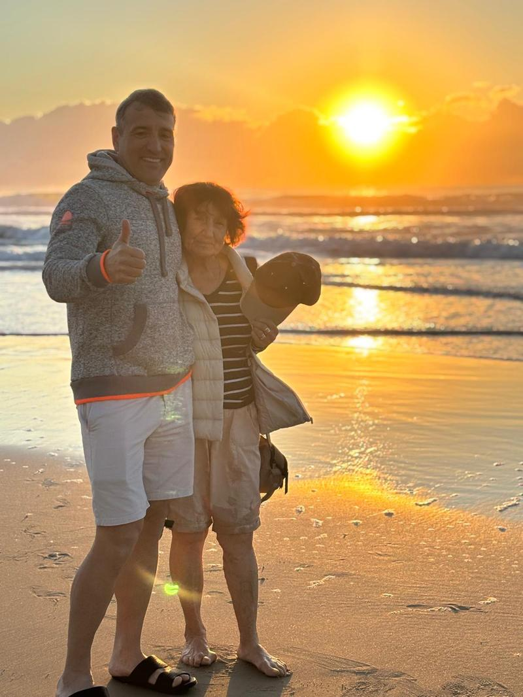
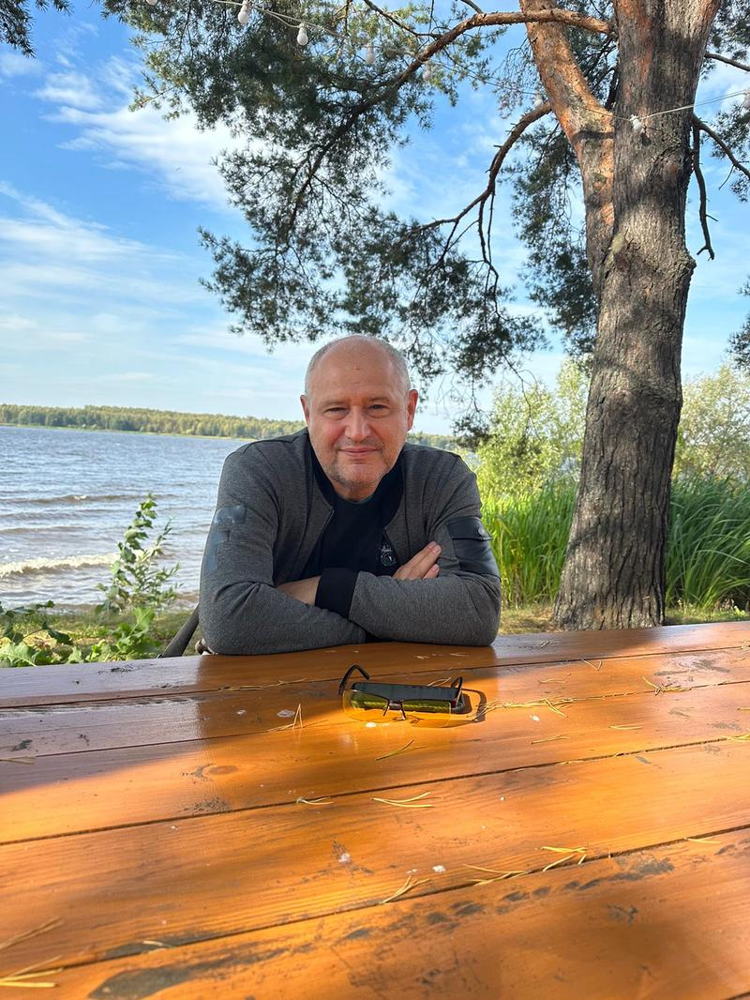
««МОИ СЫНОВЬЯ АНДРЕЙ И ОЛЕГ»»
Подготовка к отъезду и вылет из Нельсона
Готовиться к моему путешествию я начала с того момента,
когда купила билеты по маршруту Нельсон - Окленд - Дубай -
Москва и обратно. Мои друзья Ольга и Энди помогли мне вы-
брать места в удобных рядах на двух человек в премиум -классе.
Благодаря их помощи я заранее имела билеты с местами в
аэропортах моего путешествия до начала полетов. Я благодар-
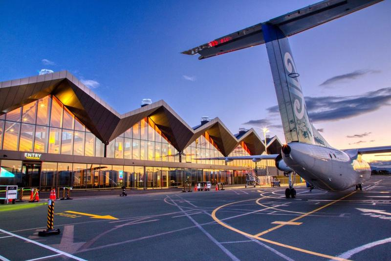
««АЭРОПОРТ НЕЛСОН, НОВАЯ ЗЕЛАНДИЯ»»
на им за их помощь.
Конечно, билеты стоили намного дороже, чем в эконом-
классе, но комфорт стоит этих затрат. Учитывая мой долгий пе-
релет из Окленда в Дубай, Олег заранее запланировал для меня
гостиницу в Дубае на три ночи в прекрасном отеле под назва-
нием Аджман. Он оплатил там мой краткосрочный отдых для
моего отдыха после длительного перелета. Спасибо, сынуля.
У меня в доме оставалась Альберта, моя кошечка. Ей нужен
был уход в мое отсутствие и мои друзья Ира с Гошей и соседка
Джил согласились заботиться о ней в мое отсутствие. Я оставила
запас еды и все инструкции , за ее комфорт я была спокойна.
Да, еще при планировании поездки возникла необходи-
мость в дополнительном багажном месте для внутреннего пе-
релета. На рейсе Нелсон - Окленд действовало ограничение в 23
кг в то время как норма для международного перелетам Окленд
-Дубай составляла 35 кг. Я купила сумку для временного разде-
ления багажа, который в Окленде был объединен в один чемо-
дан.
Я улетала 1 Мая. Утро было солнечное - последний день осе-
ни в Новой Зеландии, а потом здесь наступит зима с замороз-
ками по утрам, с дождями и даже ливнями и с неуютной обста-
новкой в доме. Приятно было подумать на мгновение о том, что
мое путешествие продолжится через несколько часов в теплом
Дубае. Поездку в аэропорт организовала Оля, а позже приехали
в аэропорт Ира и Гоша, мои друзья. По традиции перед полетом
мы выпили по чашечке чая и обняв на прощание моих друзей,
я ушла на посадку в самолет, улетающий в Окленд.
Продолжительность полета в Окленд - один час двадцать
минут. Самолет приземлился в местном аэропорту Окленда.
Багаж я получила быстро, переложила сумку в чемодан. Вес
чемодана - 28 кг, нормально. Из местного аэропорта в
международный я шла пешком, уложив свой багаж на удобную
тележку. Я продолжала свой путь по зеленому следу, который
тянулся 2 км и заканчивался у главного входа в международный
аэропорт , встретивший меня большим количеством людей. Он
был громадный. Я не первый раз летала из Окленда в Россию,
когда жила в Таупо. А потом летала из Нельсона в Таупо, где
Олежа жил со своей семьей до их переезда в Брисбен,
Австралию, куда я летала очень часто. Но время полета было
намного короче, чем мой полет в Дубай. Времени было
достаточно, но я беспокоилась, заранее
искала место
регистрации на Дубай, ворота с выходом на таможню. В памяти
появились советы младшего сына: не суетиться, не волноваться.
Они успокоили меня. Регистрацию своего рейса я увидела на
табло. Багаж сдала нормально. Мой чемодан по ленте быстро
уехал в глубь багажного отделения. Получила посадочный
талон с указанием номера ворот на вылет и номер места в
самолете. Потом был таможенный контроль - его я прошла не
спеша. Все складывалось. Впереди Дьюти фри, зона отдыха. Там
я поинтересовалась наличием моих любимых духов Fendi, но
они действительно давно сняты с производства. Жаль, прошло
много лет с тех пор, но замену им я так и не нашла… Но ищу,
может, что-то похожее. Может… а вдруг…..
В 20-00 была объявлена посадка на мой самолет в Дубай. Я
оставила аэропорт Окленд и двинулась со всеми пассажирами в
самолет. Стюардессы приветливо встречали на борту. У меня
было удобное место в Премиум классе у окна с удобствами для
ног, маленький ТВ располагался впереди, на спинке соседнего
кресла. Я смотрела фильмы. Еда была отличная. Конечно, я спа-
ла, так как полет продолжался 16 часов. В 5 часов утра по мест-
ному времени мы приземлились в аэропорту города Дубай.
Прибытие в Дубай. Отель Аджман
Выходя из самолета, я почувствовала резкие перепады тем-
пературы и влажности, но к счастью аэропорт был хорошо кон-
диционирован. Конечно, там было многолюдно и прохождение
паспортного контроля заняло некоторое время. Однако для
меня было особенно важно то, что в аэропорту был бесплатный
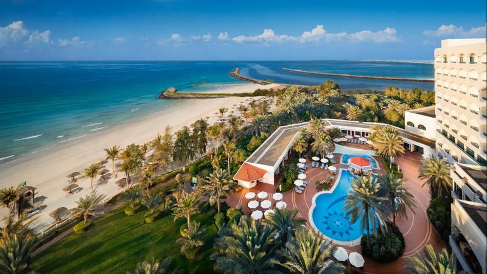
««АДЖМАН, БЕРЕГ ПЕРСИДСКОГО ЗАЛИВА. МАЙ 2025»»
WI-FI и сотрудники помогли мне подключиться к интернету. Я
смогла общаться с моими сыновьями. После получения багажа
я неспешно направилась по аэропорту к пункту для обмена ва-
люты. Я обменяла 200 американских долларов на 637 дирхамов.
За пределами аэропорта я заметила огромную стоянку такси. На
одном из них я поехала в отель Аджман, который был заброни-
рован моим сыном Олегом на три ночи. Это был приятный
сюрприз для моего отдыха у моря. Подарок от сына действи-
тельно принес мне много радости и волнения. Я ехала с води-
телем, который был родом из Индии и хорошо ориентировался
на местных дорогах. Мы общались с ним на моем базовом ан-
глийском, но понимали друг друга. Водителю я заплатила 100
дирхамов.
Отель Аджман - пятизвездочный, один из популярных
отелей, расположенный в одноименном эмирате недалеко от
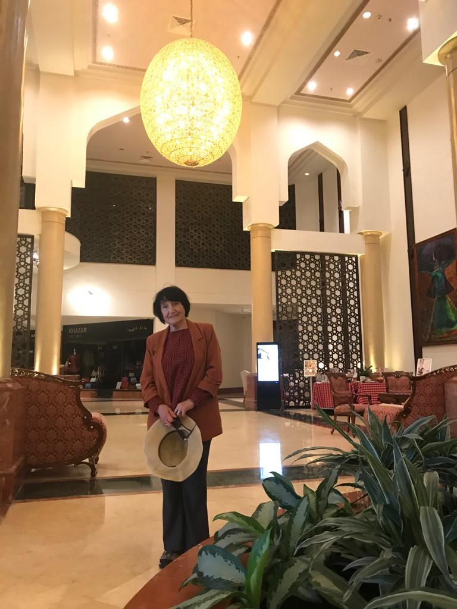
««ОТЕЛЬ „АДЖМАН“, ОАЭ. МАЙ 2025»»
Дубая на первой береговой линии Персидского Залива. У отеля
меня встретили сотрудники. На стойке регистрации я
заполнила все необходимые формы и после этого получила
ключ от номера, куда был доставлен мой багаж. Моя комната c
балконом выходила на залив. В ней была комфортная мебель с
современным дизайном. Особенно меня впечатлила
двуспальная кровать - я так хотела
отдохнуть после
длительного перелета. Однако погода была жаркой и я решила
освежиться в море. К сожалению, на побережье был шторм и
купаться разрешали только у самого берега. Когда я поплыла
немного дальше, береговые спасатели предостерегли меня
свистками, давая знать, что это опасно. В отеле было несколько
бассейнов. Я решила плавать в открытом бассейне с видом на
Персидский Залив. Вода в бассейне была пресной, не соленой,
освежающей и я плавала с
удовольствием. Желание
прогуляться по огромному берегу, усыпанному белым песком с
пологим пуском к океану, зонтами и освежающей прохладой с
моря было велико, но солнце сильно припекало и я поспешила
вернуться в отель. Внутри все было оформлено в европейском
стиле с использованием
шелковой парчи, элегантными
элементами дизайна. Яркие светильники и изысканные
золотые и серебряные детали придавали интерьеру особый
шарм. Это было пространство, в котором я чувствовала себя
прекрасно. На стойке регистрации сотрудники говорили по-
русски. Это сделало мое пребывание в отеле комфортным и
уютным.
Мое время прогулки по отелю подошло к концу и я направи-
лась в кафе, где было множество столиков. Мне хотелось насла-
диться свежим воздухом поэтому я выбрала столик на свежем
воздухе. Еды обилие, разнообразие - горячие блюда, закуски,
соки, десерты. Я находилась на свежем воздухе до 11 часов ве-
чера - к этому времени воздух становился особенно свежим, но
прогулки у моря в это время были запрещены. В кафе я пробо-
вала несколько местных блюд включая манакиш - непонятное
название, но вкусно. Это расплавленный сыр с оливками и зе-
ленью, завернутый в лаваш - на завтрак прекрасно. Однажды
мне также повезло насладиться традиционным арабским блю-
дом гузи - мясом ягненка с рисом, орехами и овощами. Мне
нравились соки, приготовленные из свежих фруктов, молочные
коктейли с манго - этот фрукт называют королем. Почему - не
знаю. Я не знала, что финики являются национальным фруктом
ОАЭ, имеют 150 сортов. Также я пробовала гуаву, кушала арбу-
зы, клубнику. Я наслаждалась традиционным арабским завтра-
ком, который включал мясо, фасоль и яйца. Время, проведенное
в отеле Аджман, было удивительным для меня. Я встречала
рассвет, стоя на балконе, наслаждаясь восходом солнца, а затем
шла к морю, прогуливалась по белому песку вдоль берега, пре-
одолевая 4-5 км. После прогулки купалась в бассейне, уходила
на завтрак и снова возвращалась к морю - проплывала не-
большое расстояние и загорала. Еще я купила шляпу за 130 дир-
хамов, чтобы немного спрятать свое лицо от солнца. А вечером
уходила на ужин, наслаждаясь близостью природы. Время про-
летело быстро. В последнюю ночь я долго стояла на балконе,
любуясь звездами и слушая шум моря…
Я встала рано, так как такси к отелю было заказано на 6 утра.
Простилась с гостеприимными работниками отеля, которые
организовали для отъезжающих туристов ранний завтрак и
проводили к такси. День только начинался. Путь в Дубай,
аэропорт, занял больше времени, чем обычно из-за большого
движения на дорогах, но я успела во время к терминалу номер
3.
Все складывалось: таможня, паспортный контроль, метро,
ворота на посадку Дубай-Москва. Я была полна прекрасных
впечатлений от моего двухдневного отдыха в сказочном отеле.
С предвкушением радости от скорой встречи с Андреем и его

««КАК В ДЕТСТВЕ НА КАЧЕЛЯХ»»
семьей я зашла в салон самолета, где стюардессы приветливо
встречали пассажиров на русском и английском языках. Место
было удобным - у окна, еда на выбор, но после раннего завтрака
в отеле кушать не хотелось - выпила чашечку кофе и смотрела
фильмы. Полет был более 5 часов..
Прибытие в Москву. ВДНХ. Кусково. Зарядье
Самолет приземлился с небольшим опозданием в Домоде-
дово. Паспортный контроль прошла быстро, работник на службе
была очень внимательной - задала несколько вопросов и прове-
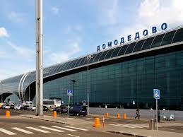
«« МОСКВА РОДНОЙ АЭРОПОРТ МАЙ 2025»»
рила мои документы. После получения багажа я аккуратно по-
грузила его на тележку и медленно пошла к выходу из аэропор-
та в зону, где меня уже ждали. Я не была в России 4 года и, ко-
нечно, испытывала бурю эмоций: волнение, радость от встречи.
Валя с Андреем встретили меня с улыбкой и большим буке-
том цветов. Встреча была для меня очень счастливой. Это был
воскресный июньский день. Тепло, солнышко, такси… Раньше я
приезжала к ним в Мытищи - город, расположенный недалеко
от Москвы на реке Яузе. Славится водным богатством, культур-
ными историческими ценностями, парками, в которых я люби-
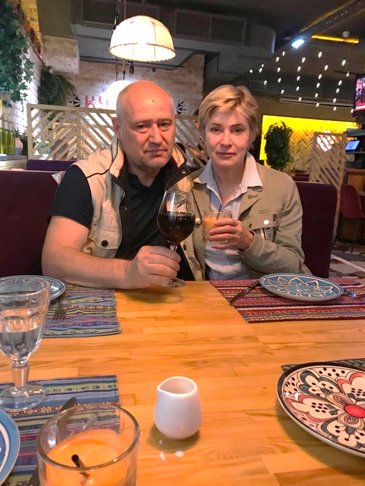
««АНДРЮША И ВАЛЮША»»
ла гулять. Подмосковный город Мытищи мне запомнился еще
и необычным монументом, построенным в 2004 году в честь
200-летия первого водопровода. Памятник отличается колос-
сальными размерами - высотой почти 20 метров. Его символи-
ческая функция - в возможности донести до людей комфорт,
удобства и благополучие, которые в свою очередь дарит живи-
тельная вода, бегущая по водопроводной галлерее. Он был как
бы визитной карточкой и символизировал благодарность на-
рода водопроводу за живительную влагу. В 2024 году памятник
был демонтирован из-за аварийных работ. Жаль……
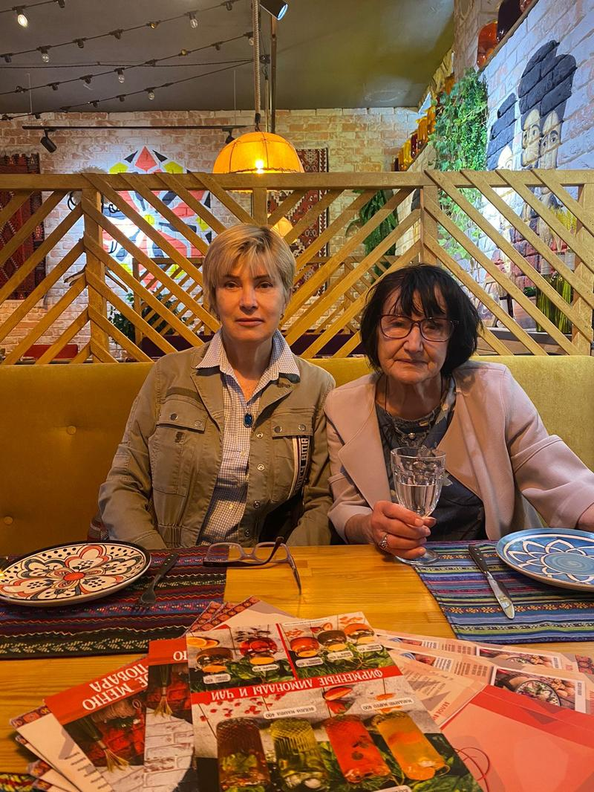
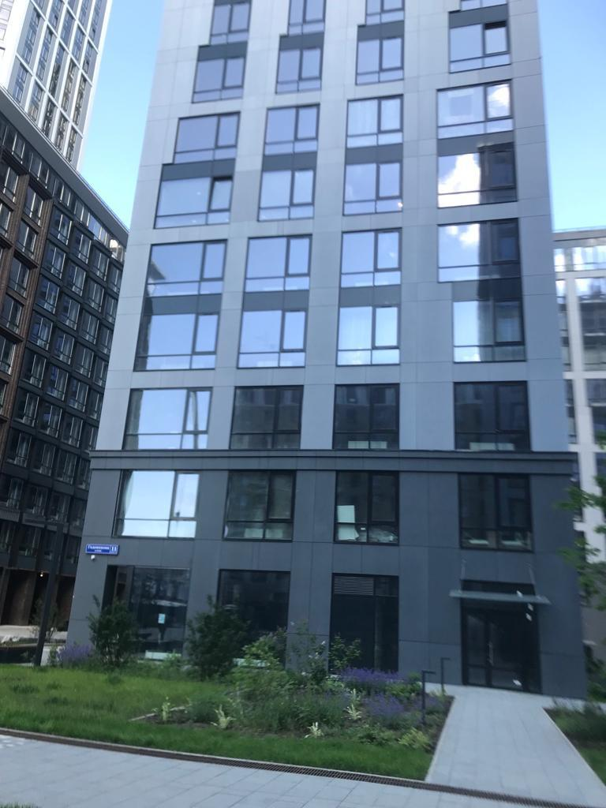
««ДОМ АНДРЮШИ И ВАЛЮШИ И ЗАМЕЧАТЕЛЬНЫЙ УКРАИНСКИЙ РЕСТОРАН»»
Когда я жила в Мытищах, я часто ездила в Москву к дру-
зьям, на экскурсии. Обычно это занимало много времени - до-
бираться на автобусе до метро Медведково или на поезде в
Москву. Несмотря на трудности с транспортом, я тепло вспоми-
наю этот город с его уютом и началом новой главы в семье Ан-
дрюши, когда он стал их новым домом после переезда из города
Нерюнгри. В этот приезд я приехала к ним в новую квартиру,
которая находится в Москве недалеко от Проспекта Мира ря-
дом с метро Алексеевская.
Улица, на которой они сейчас живут в Москве, названа в
1965 году в честь героя Советского Союза командира взвода С.К
Годовикова. Он родился в Москве в 1924 году, геройски погиб в
1943 году при форсировании реки Днепр. Ему было всего 19 лет.
Многие улицы носят имена Героев ВОВ, родившихся на подмос-
ковной земле - людей, чьи подвиги обрели бессмертие в серд-
цах потомков. Это не только дань уважения, но и живая память
об их бесценном вкладе в общую Победу…
Новая квартира в Москве имеет много преимуществ по
сравнению с квартирой в Мытищи для семьи Андрюши - она
находится в многоэтажном доме на 8 этаже, не очень большая,
но очень удобная, светлая. Уютная атмосфера квартиры заста-
вила меня почувствовать себя комфортно… Дом расположен в
удобном месте: Андрею легко добираться до работы на метро, а
Валя тратит меньше времени на поездки к внукам в магазины,
которые находятся рядом. Их дочка Виктория снимает неболь-
шую квартирку недалеко от них. Мне тоже удобно - друзья, род-
ственники, путешествия по Москве, короткий путь, метро - все
рядом.
Вот только в первые дни в Москве я чувствовала себя не
очень комфортно из-за джетлага. Разница часовых поясов, дол-
гий перелет (16 часов) до Дубая и больше 5 часов часов полета
до Москвы дали о себе знать… Я вылетала из Новой Зеландии
зимой в июне - там сезон зимнего времени, а в Москву я приле-
тела в начале лета с разницей во времени 10 часов. Начало лета
в Москве, район, где я жила - все было необычным по сравне-
нию с Новой Зеландией. На своей первой утренней прогулке я
нашла прекрасный парк с удивительным названием Звездный
бульвар. Обычно я бывала там по утрам, выходя с Андрюшей -
он шел на работу, а я направлялась в другую сторону. Город
только просыпался суетой, движением звуков транспорта, шу-
мом улиц, но когда я заходила в парк, там царила тишина,
воздух был наполнен ароматом свежей зелени и прохлады.
Ветер приносил запах травы и цветов и действительно это был
Звездный бульвар.Там я нашла прогулочную тропинку и спор-
тивную площадку для упражнений, уютную скамейку, где ино-
гда я записывала свои впечатления. Общение с природой пода-
рило мне ощущение гармонии и энергии, мои утренние прогул-
ки вдохновляли меня на каждый день. Благодаря им я стала
лучше спать, мое физическое и эмоциональное состояние
улучшилось.
Планов у меня был множество. 13 июня я уезжала в Белорус-
сию. Мою поездку мы планировали заранее и Андрюша купил
мне билеты по маршруту Москва - Минск - Пинск и обратно,
когда я была еще в Новой Зеландии. Я ехала туда, чтобы наве-
стить подругу Тамару, маму моих друзей Оли и Энди из Новой
Зеландии. Но до отъезда в Белоруссию я хотела посетить неко-
торые знаменательные места в Москве, одним из которых была
ВДНХ. Мы с Андрюшей отправились туда пешком. Это был чу-
десный день, Андрюша был прекрасным гидом.
ВДНХ или выставка достижений народного хозяйства име-
ет богатую историю открыта 1 августа 1939 года. За все свое
время существования она неоднократно меняла свое название,
внешний вид, наполнение. Но в 2014 году ей вернули ее исто-
рическое название. На протяжении своей истории ВДНХ всегда
была не только выставочным комплексом, но местом проведе-
ния различных мероприятий, центром культурной жизни и
главным историческим местом в Москве. Когда я бываю в
Москве, я обязательно посещаю ВДНХ и даже не представляю
себе поездку в столицу без этого места. Обычно я ездила туда в
метро или автобусом, но в этот раз мы шли туда и назад пеш-
ком, так как расположение ВДНХ было сравнительно недалеко
от дома и длительные прогулки с сыном всегда меня радова-
ли. Несмотря на ограниченное время в этот день, мы успели
посмотреть некоторые достопримечательности на выставке и
приятно отдохнуть…
Хоть я вижу ВДНХ уже не в первый раз, она все равно всегда
производит сильное впечатление на меня. На вершине арки
возвышается статуя “Тракторист и колхозница”, они возносят
на 32-метровую высоту аллегорический сноп, который симво-
лизирует единство тяжелой промышленности и сельского хо-
зяйства. Этот памятник известен даже тем, кто никогда не был в
столице, ведь он изображен и на заставке киностудии Мос-
фильм. На территории выставки есть бесплатные автобусы, но
мы решили пройтись пешком. Погода была прекрасная, мы
прошли по Главной аллее и дольше всего задержались у фонта-
на “Дружба народов”. Этот фонтан - один из главных символов
ВДНХ, он украшен золотым статуями, символизирующими 16
союзных республик, и впечатляет своим масштабом.
Площадь бассейна - 3.8 тысяч квадратных метров, он имеет
восьмиугольную форму. В центре находится огромная медная
чаша в виде снопа из связок пшеницы подсолнуха и конопли.
Необыкновенная красота, да, сила жизни в дружбе.
Следующий фонтан “Каменный цветок” вдохновлен яркими
образами уральских сказок П.Бажова. Он поражает пышными

«« КАМЕННЫЙ ЦВЕТОК, ВДНХ »»
скульптурными деталями. А в центре. композиции огромная
чаша, словно цветок распускающийся среди самоцветов. На
гранитных постаментах установлено 16 бронзовых компози-
ций натюрмортов, символизирующих дары природы Союзных
республик. Самый зрелищный фонтан, у которого мы останови-
лись - “Золотой колос” - расположен в центре Третьего Камен-
ского пруда в Ландшафтном парке и символизирует изобилие
и плодородие советской земли, а также дружбу народов, пред-
ставленных девушками в национальных костюмах. Символика
фонтана очевидна, ведь еще с древних времен колосья ассоци-
ировались с возрождением жизни. Мы также посетили Мичу-
ринский сад, который находится на территории ВДНХ . Каждая
его часть посвящена определенной климатической зоне стра-
ны. Сад был открыт в 1939 году и является частью историче-
ского комплекса ВДНХ. Мичуринский сад на ВДНХ примечате-
лен тем, что в нем высажены лучшие сорта плодовых деревьев,
выведенные Иваном Мичуриным . И конечно было очень при-
ятно прикоснуться к этим деревьям и листочкам. Везде исто-
рия……
Надышавшись свежим воздухом в Мичуринском саду на
территории выставки мы увидели маленький домик с назва-
нием “Трдельник”. Это была пекарня.
Название нас заинтриговало и мы заказали традиционную
сладкую выпечку – трдельник из дрожжевого теста с сахаром,
корицей, запеченный на открытом огне, и кофе. Это дополнило
наше знакомство с чешской кухней и было очень вкусно. Не
ограничившись этим, я съела еще мороженое. Я очень люблю
московское мороженое.
На ВДНХ много музеев, павильонов, выставочных комплек-
сов, фонтанов и парков. Я возвращалась с выставки под впе-
чатлением и думала о том, как здорово, что у меня была воз-
можность ее посетить. Конечно, увидеть все за несколько часов
невозможно, но настроение было отличное и в душе теплилась
надежда снова туда вернуться. И я была там несколько раз в
этот приезд. Мы иногда гуляли у арки выставки и Андрюша рас-
сказал мне о нашем семейном событии, связанном с катком на
ВДНХ в 2019-2020 годах. Тогда Антон, сын моего младшего сына
Олега, прилетал к нему в Москву из Австралии на каникулы и
катался на коньках. В тот зимний сезон каток на ВДНХ был са-
мым большим в Москве и располагался вдоль Главной аллеи,

«« МОЙ ВНУК АНТОША, МОСКВА 2020 »»
огибая фонтаны Дружба народов и Каменный цветок. Я читала
в обзоре ИИ, что площадь катка составляла более 20 тысяч
квадратных метров. В это время он мог вместить до 5 тысяч че-
ловек одновременно. Андрюша сделал фото Антона на катке на
ВДНХ. Он также катался на катке на Красной площади.
Этот каток был открыт прямо на Красной площади. Он был
организован ГУМом, став частью новогодних и зимних меро-
приятий, создавая атмосферу праздника. Хорошо что Андрю-
ша сделал фото этих событий. Антону было 14 лет и он впервые

«« КАТОК- ВДНХ »»
приехал в Москву, учился в русской школе, знакомился с досто-
примечательностями столицы. А новогоднюю ночь семья Ан-
дрея с Антоном встретили в знаменитом отеле Пекин. Этот
отель находится в самом сердце Москвы в окружении памятни-
ков архитектуры, музеев, театров. Антону, русскому мальчику,
родившемуся в Новой Зеландии, интересен был этот новый
мир, с которым его знакомила семья моего старшего сына Ан-
дрея.
Позже, в 2020 - 2021 годах мой младший сын Олег прилетал
в Россию, в служебную командировку, дважды и, конечно, на-
ходясь в Москве, он часть времени проводил в семье своего
старшего брата.
В этот визит в Москву часть моего времени ушла для про-
верки моего здоровья. С помощью Андрея, Вали я посещала
врачей, принимала необходимые лекарства, проверяла зрение,
купила очки. Я ходила в магазины, чтобы купить удобную обувь
и быть готовой к своим дальнейшим путешествиям.
Но мои экскурсии по достопримечательностям Москвы
были самыми главными событиями здесь в Москве и, конечно,
Андрюша в свободное от работы время помогал мне организо-
вать их.
До моего отъезда в Белоруссию мы съездили на речной вок-
зал, потому что идея круиза по Волге меня не покидала. Мы
также побывали в ресторане домашней украинской кухни под
названием «Тарас Бульба». Интересно то, что Гоголь писал ос-
новную часть книги «Тарас Бульба» в мансарде дома Погодина в
Москве. Москва для него была не просто местом проживания,
но и важным центром его творчества. Я раньше слышала, что в
этом кафе подают блюда по старинным украинским рецептам и
мы выбрали несколько из них. Мне очень понравилось. Это
кафе было особенно значимо для нашей семьи тем, что в 2020
году, мой младший сын Олег вместе с семьей Андрея и моими
двоюродными сестрами обедали именно здесь по случаю го-
довщины смерти моей старшей сестры Светланы Федоровны,
которая скончалось в 2019 году в Луганске. У меня осталось
много теплых воспоминаний о ней. Она была старше меня на 4
года и всегда поддерживала меня в трудные моменты. В детстве
она делилась со мной вкусной едой и давала советы... Когда мы
повзрослели, я приезжала к ней в родной город ежегодно, а по-
сле смерти мамы в 1982 году - на ее дачу, где мы отдыхали всей
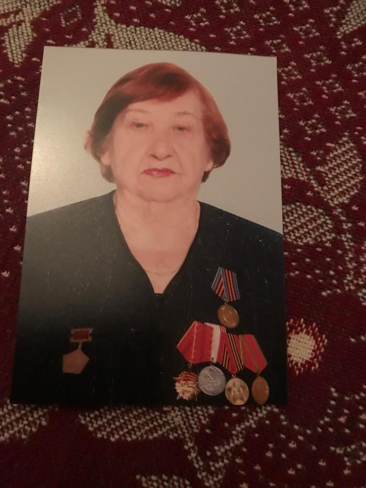
«« СЕСТРА СВЕТЛАНА»»
семьей. Домик был небольшой, но очень уютный. Сейчас в Лу-
ганске живут дети и внуки моих сестер и я, приезжая в Россию,
обязательно навещаю свой родной город. Но дачи уже нет,
только воспоминания сразу всплывают в памяти.
Андрюша купил мне карту Тройка и теперь я могла самосто-
ятельно путешествовать в метро по столице, рассматривать
станции и знакомиться с их историей. В целом, очень здорово,
так как у меня было достаточно времени для моих коротких
путешествий, а по воскресным дням Андрюша организовал по-
сещение исторических мест Кусково и Зарядье.
Усадьба Кусково - уникальный симбиоз одного из немногих
сохранившихся в Москве архитектурно-парковых ансамблей 18
века и единственного в стране специализированного Музея ке-
рамики.
Кусково было летним имением графов Шереметевых и яв-
ляется уникальным образцом архитектуры и ландшафтного
дизайна.
Моими гидами были Валя и Андрей. Мы словно окунулись в
18 век - посмотрели Дворец в Кусково и некоторые павильоны.
Главное, что мы могли гулять по усадьбе и знакомиться с ее ис-
торией без экскурсий. 16 мая 2025 года усадьбе Кусково испол-
нилось 250 лет. Конечно, Дворец, или Главный дом, воодушевил
тем, что он построен из дерева в традициях русского зодчества,
имеет два этажа: парадный и антресоли на высоком каменном
цоколе, где размещались винные погреба и подсобные помеще-

«« КУСКОВО БЫЛО ЛЕТНИМ ИМЕНИЕМ ГРАФОВ ШЕРЕМЕТЕВЫХ »»
ния. Здание украсили белоснежные колонны. Вензель ПС на ан-
глийском на фронтоне Дворца означает инициалы владельца
усадьбы. Этот символ власти и благородства демонстрирует
принадлежность усадьбы к семье Шереметевых .
В Дворец ведет белоснежная лестница, а по бокам есть два
пологих спуска, охраняемых сфинксами. По ним гостей прямо
ко входу подвозили на каретах.
Мы подъехали не на карете, а на машине. Андрюша поста-
вил машину недалеко от входа в усадьбу. Благодаря комплекс-
ной реставрации, проведенной по описям 18 века, я могла уви-
деть Дворец таким, каким он был во времена приема высокопо-
ставленных гостей и проведения торжественных мероприятий.
Особое внимание привлекла уникальная сохранность и под-
линные интерьеры того времени. Сохранившиеся дощатые
полы, камины, печи, лепнина, а также зеркала, осветительные
приборы, роскошно отделанные комнаты, - такие как Малино-
вая гостиная, Хрустальный зал, библиотека, - передают атмо-
сферу дворянского быта 18 века.
Дворец называют сердцем всего усадебного комплекса. Это
главный дом всего архитектурного ансамбля, памятник, где
300 лет назад здесь гремели балы в Хрустальном зале, а сей-
часмузейная тишина. Но стены Дворца бережно хранят атмо-
сферу тех времен. Читала что в настоящее время здесь прохо-
дят концерты классической музыки. Счастливые москвичи.
Дальше мы остановились у здания Грота. Это необычное
здание символизирует стихии воды и камня благодаря своему
архитектурному замыслу и использованию материалов. Пави-
льон, построенный крепостным Шереметева архитектором Фе-
дором Аргуновым в стиле рококо, снаружи выглядит, как ка-
менный, а внутри - с уникальной отделкой из ракушек, корал-
лов, перламутра, цветного стекла. Мы не были внутри - это я
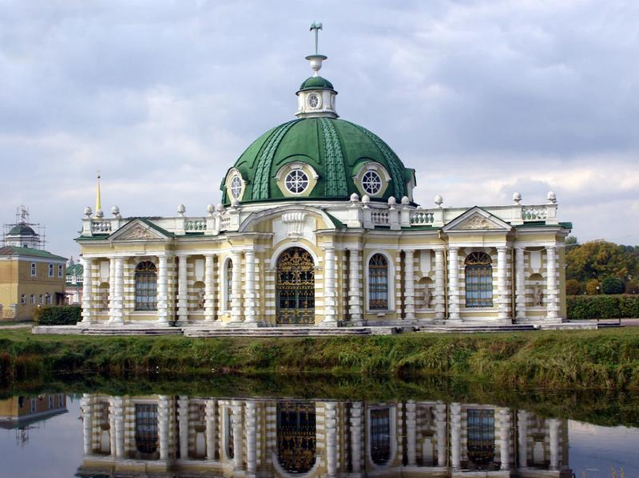
«« ХРАМ СПАСА ВСЕМИЛОСТИВОГО»»
читала. Грот -единственный в России павильон, сохранивший
свою уникальную отделку с 18 века, является экзотическим
среди архитектурных сооружений Кусково. Рядом с Гротом на-
ходится старинная церковь - уникальный памятник церковного
зодчества столицы, построенный в Кусково раньше всех зданий.
Возведен в стиле барокко, носит название Храм Спаса Всемило-
стивого, был освещен в 1737 году. Рядом, позже к ней присо-
единилась колокольня, построенная в стиле классицизма. В на-
стоящее время храм является действующим, в нем проводятся
богослужения, а с колокольни раздается звон восьми колоколов.
Хотелось услышать звон восьми колоколов, но было не то
время. Из истории известно, что церковь посещали царствен-
ные особы, в том числе императрицы Елизавета первая, Екате-
рина вторая, император Александр третий с супругой Марией
Федоровной, император Николай второй с наследником, когда
посещали владения Шереметьевых. Мы прошли мимо симпа-
тичного дома, который демонстрирует голландскую архитек-
туру и интерьеры с изразцами и фламандской живописью. Как
говорит история, этот павильон выстроен в 1749 году в память
об эпохе Петра первого и его увлечения Голландией. После
дворцовых впечатлений домик создает совсем другое настрое-
ние простоты и уюта. Недалеко от Голландского домика мы ви-
дели три дуба - из истории они посажены императором Алек-
сандром третьим, его женой Марией Федоровной и сыном Ни-
колай вторым в 1886 году, когда посещали владения Шеремете-
вых. Я притронулась к ним, как будто погрузилась снова в то
далекое время.
В Юго-Западной части Кусково находится хижина отшель-
ника Эрмитаж, дальше Швейцарский домик, возведенный в1870
годах архитектором Н.Л. Бенуа . Это строительство было за-
ключительным в Кусково. Оно необычно тем, что стены его
первого этажа расписаны под кирпич, а украшением второго
этажа является резьба по дереву. В стенах этого домика в нача-
ле 20 столетия жил последний владелец усадьбы Сергей Дмит-
риевич Шереметев. В настоящее время в Швейцарском домике
разместилась Дирекция музея Кусково. Следующим предстал
перед нами Итальянский домик - небольшой павильон в ита-
льянском стиле, предназначенный для маленьких вечеринок с
коллекцией паритетных вещей на первом этаже. В нем отраже-
но стремление графа Шереметева к созданию своей Италии с
элементами роскоши и тонким художественным складом жиз-
ни. Сам павильон использовался для небольших приемов и как
музей - там выставлялись миски, тарелки и другие предметы
фарфора середины 18 века.
Впечатляющим моментом для меня была прогулка по парку.
Обзор от ИИ Парк называет образцом классического русского
паркового искусства с его регулярной планировкой и живопис-
ными аллеями. Он является классическим парком 18 века с
геометрическими аллеями, скульптурами, фонтанами, создан-
ный в модном французском стиле. Я любовалась разнообразием
деревьев в парке: сосна, клен, береза, вяз, осина, дуб, липа. В
парке усадьбы Кусково скульптуры установлены по циклам ми-
фологических персонажей. «Орфей и Эвридика» - самая боль-
шая скульптура в усадьбе в центре регулярного парка на откры-
том пространстве и пропустить ее было сложно. Скульптура
«Река Скамандр» воссоздана итальянским мастером из де-
коративной пластики - ничего похожего в России просто не су-
ществует. Возможно поэтому граф Шереметев выделил для неё
самое главное место.
Но не только иностранными работами украшена усадьба.
Есть еще одна скульптура, связанная с водной стихией, которая
располагается возле голландского прудика. Это образ реки Кус-
ково, по названию которой дали имя всей территории, метафо-
рически представленный в виде старца с сосудом в руках.
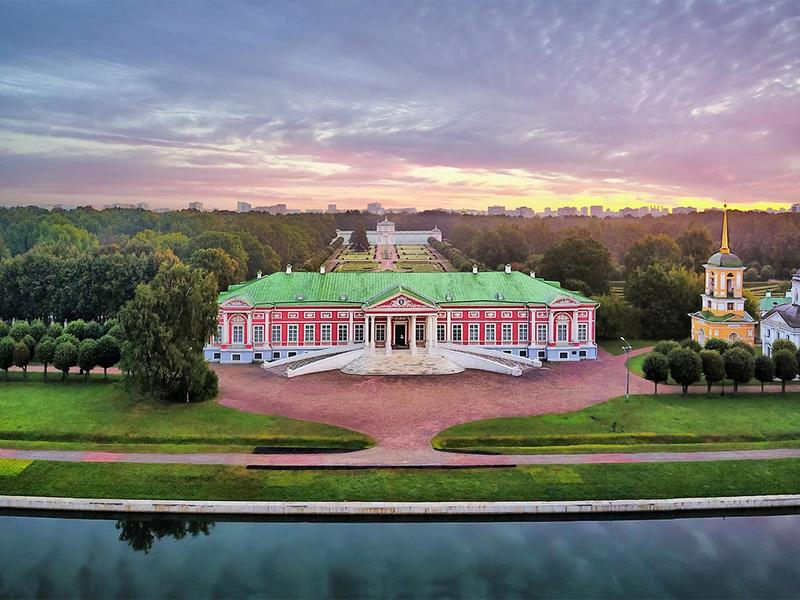
«« КУСКОВО, УСАДЬБА-МУЗЕЙ»»
Пройдясь по парку мы видели и другие, не менее значимые
произведения - скульптуру богини мудрости Минервы, с обра-
зом которой ассоциировалась русская императрица Екатерина
Великая. Я читала, что все коллекции графа Шереметева с до-
стоинством пережили исторические катаклизмы 20 века. В 2019
году скульптуры реставрировали, мастера вернули им истори-
ческий облик и теперь они продолжают украшать усадебный
парк Кусково. Конечно, для меня посещение Кусково оставило
яркие впечатления, позволив окунуться в атмосферу роскоши и
развлечений 18 века. Кусково - это не просто архитектурный
ансамбль, но и важный исторический памятник, позволяющий
понять культуру и быт дворянства 18 века в России.
Не хотелось уходить из Кусково просто так, нашла стихи
Ивана Долгорукова (1764-1828), русского поэта, драматурга,
мемуариста из рода Долгоруких. Как он красиво писал об
усадьбе Шереметевых. Мне понравились, почитайте – может, и
вам понравится:
«Земли лоскутик драгоценный.
Кусково милый уголок
Эдема сколок сокращенный
В котором самый тяжкий рок
В воскресный день позабывался
И всякий чем нибудь пленялся!
Но время лютый враг всего
щадить не любит ничего…», -
отрывок из его поэмы «Прогулка в Кусково».
В этих стихах он описывает мгновение умиротворения и
вдохновения, когда время словно останавливается.
Наша экскурсия по усадьбе Кусково завершилась, но у меня
огромное желание вернуться сюда. Надеюсь, что мой внук Ан-
тон когда-нибудь посетит этот милый уголок России...
Николай Максимович Карамзин, известный русский писа-
тель и историк, в стихотворении в 1814 году писал: «Кто был в
Москве, тот знает Россию».
Москва - это не просто город, это концентрат всей нашей
России. Она дает знания, а время и тишина помогают почув-
ствовать архитектуру, людей…
В Москве много исторических памятников, музеев, мест,
связанных с историей нашей Великой России. Я люблю Москву.
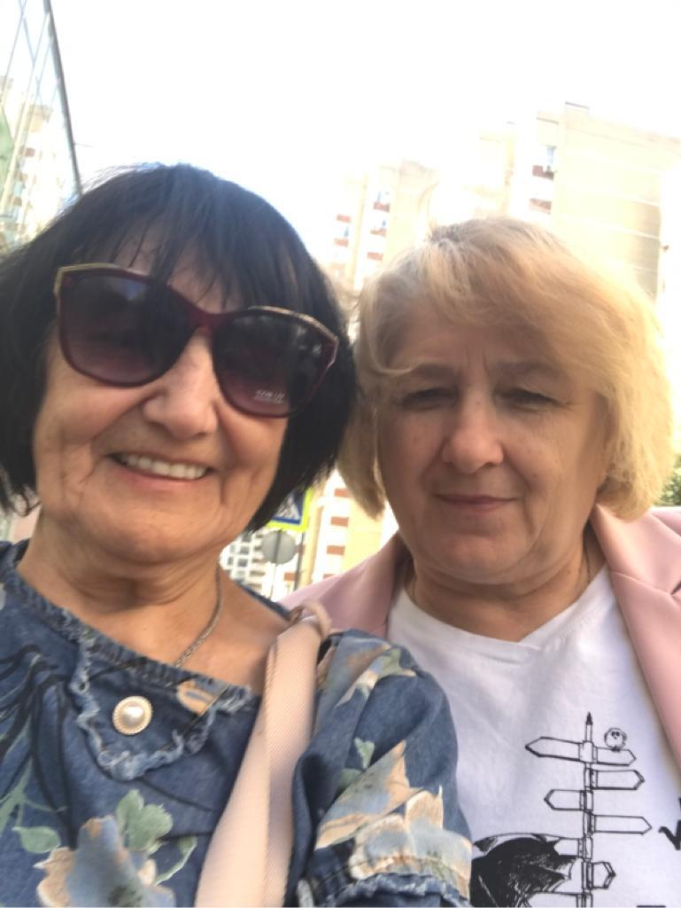
«« ДВОЮРОДНАЯ СЕСТРА ИРИНА »»
Я приезжала в Москву много раз с раннего детства. Впервые
меня привезли сюда в 1947 году. Сопровождала меня моя
старшая двоюродная сестра Александра Алексеевна Слесарчук,
я жила у своего дяди Семена Петровича Слета. На протяжении
всей его жизни я часто приезжала в Москву. Он был военным
высокого звания, окончил две военные академии и был очень
занятым человеком. Но всегда оставался для меня и моих детей
самым родным. Он всегда находил время пообщаться с моим
старшим сыном Андреем, который учился в Московском Гор-
ном институте и рассказать много интересного моему млад-
шему сыну Олегу. Олег учился в Выборгском авиационно-тех-
ническом училище и часто приезжал к С.П. в Москву. Я с тепло-
той вспоминаю то время. Теперь в Москве живет мой старший
сын с семьей. Москва, наполненная воспоминаниями о том да-
леком прошлом и настоящем, стала для меня еще ближе. Неда-
леко от Москвы, в Балашихе, живут мои двоюродные сестры со
своими семьями и племянница Галина Петровна Груздева, дочь
моей двоюродной сестры. Дети Семена Петровича также живут
в Москве, но я не встречалась с ними много лет после смерти их
матери Тамары Григорьевны Слета по непонятным для меня
причинам. Возможно,из-за несовпадения по времени - я бываю
в Москве в основном летом, когда москвичи выезжают на дачи
или путешествуют. Но у меня было счастливое время, когда я
встретилась со своей двоюродной сестрой Грудкиной Ириной
Трофимовной.
Мы заранее созвонились и наша встреча состоялась в Мы-
тищах в кафе с английским названием «Даили». Мы обе были
рады этой встрече - говорили о своих семьях и о ее работе. Она
преподает математику в старших классах и, несмотря на пен-
сионный возраст, полна энергии и желания работать дальше.
Встреча совпала с периодом выпускных экзаменов и она с лю-
бовью и небольшой тревогой рассказывала о своих выпускни-
ках. Она интересный и удивительный человек, я горжусь ею.
Наша встреча была не долгой, но мы расстались в надежде
встретиться снова. И действительно встретились в конце моего
визита в московском кафе...
В Москве я часто встречалась со своей внучкой Викторией.
Она уже взрослая, у нее два высших образования - она окон-
чила два факультета в МГУ: юриста и психолога. У нее есть
опыт работы психологом и она востребована в этой сфере. Ду-

«« МОЯ ВНУЧКА ВИКТОРИЯ»»
маю, она обладает замечательной способностью ставить себя
на место клиента и понимать его эмоциональное состояние. У
нее есть стремление к постоянному профессиональному росту.
Конечно, работа психолога очень ответственная, поскольку
нужно уметь успокаивать, наблюдать, проявлять тактичность и
эмоциональный интеллект. Наши встречи были не слишком ча-
стыми, но в свободное от работы время мы с нею ходили в кафе,
в парикмахерскую к ее мастеру, а также в магазины за нашими
любимыми фруктами. Конечно, были и радостные встречи, ко-
гда собиралась вся семья. Мы вместе наслаждались вкусными
пирогами, пили кофе или чай, и, устроившись на удобном ди-
ване, смотрели новости или кино. Сейчас я вспоминаю такие
редкие встречи очень часто, как источник силы и надежду на
будущие встречи.
Когда я вернулась в Москву после последнего моего путеше-
ствия по стране, у нас с Викой была культурная программа, и я
ей очень благодарна. Моя внучка не слишком много рассказы-
вает о себе, но при этом она отличный слушатель, наверное,
благодаря своей профессии психолога, ведь активное слушание
очень важно в ее работе. Это ценный навык не только для про-
фессионала, но и для человека.
Находясь там, в России, я всегда радовалась встречам с нею,
а здесь она всегда в моих мыслях и сердце.
В оставшееся время до отъезда в Белоруссию, каждое утро
прогуливаясь по Звездному бульвару в Останкино, я проходи-
ла мимо Храма Равноапостольной княгини Ольги. Иногда, когда
церковь была открыта, я заходила внутрь и стояла у икон, кото-
рые для меня не просто картины. Я останавливала взгляд на их
образах, ощущая исходящий от них свет. Иногда я просто сиде-
ла и слушала речь священника или хотела побыть наедине с со-
бой. Недалеко от Храма установлен памятник Княгине Ольге
который был открыт в 2019 году в честь 1050 лет со дня ее
смерти. Фигура Ольги, 2.7 метров, выполнена из бронзы. Она
стоит рядом с ее внуком Князем Владимиром, который держит
рукав с макетом Храма в Останкино.
Княгиня Ольга вошла в историю не только как первая жен-
щина, принявшая православие, но и как жена, отомстившая за
смерть своего мужа, великого князя Игоря, и воспитавшая вну-
ка - будущего Крестителя Руси. Прошло много лет, но история
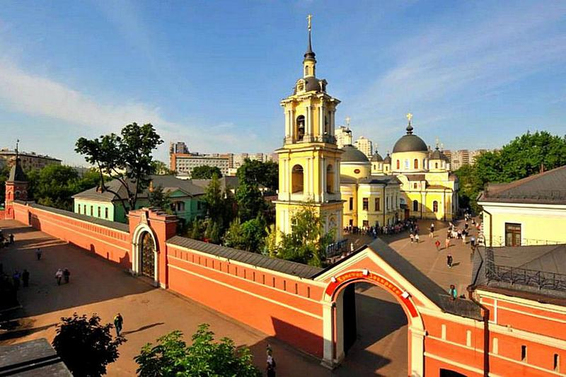
«« КНЯГИНЯ ОЛЬГА»»
не забыта и продолжает жить в новых формах. Она как наука,
помогающая нам понимать себя и общество. Без прошлого не
было бы и нас.
Рядом с храмом в Останкино есть маленькая торговая лавка,
где я часто покупала пирожки с картошкой и капустой. Они
были свежие и вкусные, почти как у моей бабушки в далеком
прошлом. Несколько лет тому назад я побывала в Свято-Троиц-
ком Серафимо-Дивеевском монастыре. Он находится в селе
Дивеево. Там я кушала хлеб, вкус которого запомнила навсе-
гда. Там его пекут на хмелевой закваске по старинным рецеп-
там и он отличался особенным ароматом...

««СВЯТО-ТРОИЦКИЙ СЕРАФИМО-ДИВЕЕВСКИЙ МОНАСТЫРЬ»»
Я посетила мощи Серафима Саровского, святые канавки,
музеи. У меня осталось много воспоминаний об истории и ар-
хитектуре этой обители. Я счастлива, что побывала там.
Каждый раз, когда я приезжаю в Москву, я обязательно по-
сещаю Храм Матроны Московской. Это место с невероятной
умиротворяющей энергией. Он находится в историческом цен-
тре Москвы в Покровском Монастыре, где хранятся мощи свя-
той Матроны. Обычно я добираюсь туда на метро до станции
Таганская, а потом пешком минут 15. Много лет назад меня
туда впервые привез Эдик на машине. Иногда я приезжала туда
с Валей, но чаще одна.
Когда я посещаю храм Святой Матроны, я всегда ощущаю
глубокое чувство трепета и присутствие ее духа. Я знаю, что это
часть традиции – прикоснуться к истории и укрепить веру. У
выхода мне всегда дарят цветок и я с благодарностью прини-
маю этот дар от Матронушки и храню его.
Находясь в Москве, я несколько раз бывала на даче ребят в
деревне Степаньково, которая расположена в Пушкинском
районе недалеко от Москвы с удобным транспортным досту-
пом. Мы обычно ездили туда на машине по выходным, когда
Андрей был свободен от работы. Дача - это возможность насла-
диться загородной жизнью в экологически чистом районе не-
далеко от столицы. Рядом с дачей есть прекрасный лес с разно-
образными деревьями. Наверное, там много грибов, но мы их
не собирали. Мне очень понравился их дом – двухэтажный, с
большой уютной гостиной - столовой с большим столом посре-
дине и большим количеством стульев для большой семьи, че-
тырьмя комфортными спальнями с современной мебелью и от-
крытой террасой с шезлонгом, где можно расслабиться днем
полулежа, вытянуть ноги и вздремнуть. Вокруг дома растет мо-
лодой сад с фруктовыми деревьями, с ягодными кустарниками:
малина, смородина и даже голубика, которая напоминает наш
Север, тайгу и город Нерюнгри. На территории дачи огромный
цветник - это владения Вали, где растут розы разных сортов,
лилии, тюльпаны, пионы, нарциссы и еще много других цветов.
Это ее хобби и большой труд, и она всегда получает отличный
результат, потому что очень старается. Конечно, на даче хочет-
ся только наслаждаться природой, свежим воздухом, тишиной,
но здесь нужен постоянный труд для создания этих условий.
Для внуков на территории дачи построен деревянный домик
для детских игр. Когда я была там, я гуляла по улицам Степань-
ково, рассматривала архитектуру домов, ходила с Андрюшей в
магазин.. К работе меня не привлекали – днем я могла сидеть в
удобном шезлонге и отдыхать, иногда находила в онлайне те-
лефона любую музыку, песни.
Мне нравится музыка саксофона - она имитирует человече-
ский голос, выражая радость, печаль, страсть. Читала, что этот
инструмент - изобретение бельгийского мастера Адольфа Сак-
са - был им сконструирован в 19 веке и является относительной
редкостью для мира музыки. Я часто слушаю музыку на сак-
софоне из кинофильма «Долгая дорога в дюнах», написанную
Раймондом Паулсом - она передает чувства героев этого филь-
ма и также вызывает у меня ассоциацию, связанную с опреде-
ленными чувствами, событиями и личными воспоминаниями.
Мой внук Антон в раннем детстве играл на саксофоне - ему
было 11лет.
Антон хорошо играл. У него прекрасный слух - я слушала в
его исполнении на саксофоне песню «Yesterday». Вспоминаю его
с ранцем, полным учебных принадлежностей, и огромным
футляром с саксофоном. Конечно, для маленького мальчика это
была большая ноша, он периодически носил его в школу и из
школы в дни занятий музыкой. После трех лет обучения на
саксофоне Антон со школьным оркестром летал в Японию. Он
был в городах Осаке, Токио. Они исполняли мелодии песен -
были там две недели и имели успех. В то же время смотрели
достопримечательности, знакомились с культурой Японии.
Многие дети теряют интерес к музыке, когда взрослеют. Я
помню, какие трудности возникали с его папой Олегом, моим
младшим сыном, когда он учился в музыкальной школе по
классу фортепиано. Но после школы он не играл. Занятия по
музыке Антон прекратил, как и многие мальчики его возраста.
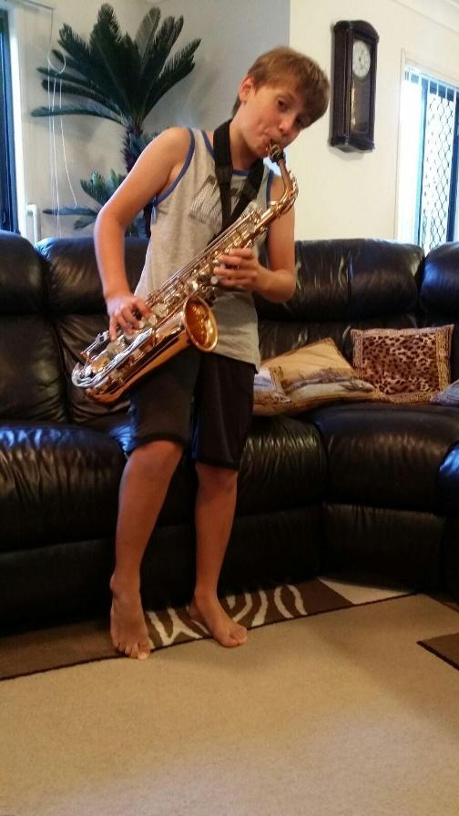
««МОЙ ВНУК АНТОН В РАННЕМ ДЕТСТВЕ»»
Он хотел быть сильным, здоровым, иметь подтянутое тело. Его
интерес проявился к тхэквондо, регби, футболу, он отлично
плавал.
Интересы внука к спорту менялись с возрастом. Родители
всегда поддерживали его спортивные увлечения и возили его с
одной секции на другую, разделяя каждое его новое увлечение,
пока его детское любопытство к разным видам спорта не пере-
росло в настоящую дисциплину и страсть к гребле. Гребля дей-
ствительно стала его спортивным увлечением в течение не-
скольких лет. Раннее утро, река и тишина - конечно, это создало
особый фон и для формирования характера Антон. Он не вер-

««СЕМЬЯ ОЛЕГА - НОВАЯ ЗЕЛАНДИЯ»»
нулся к музыке, все его свободное время вне учебы были в
гребле и в школе. Соревнования между школами, получение
медалей, командных первенств, подъемы ранним утром стали
частью его жизни, но с окончанием школы занятия по гребле у
Антона закончились.
Сейчас Антону 20 лет, он ведет активный образ жизни, сов-
мещая дневную работу в банке, заочное обучение в универси-
тете и спортзал. Вместе со своей девушкой Скайлой они путе-
шествуют, ходят в спортзал. Они готовятся к марафону, кото-
рый будет проводиться в Брисбене в этом году. Глядя на них,
вспомнила свой полумарафон в Новой Зеландии в 2009 году,
когда я прошла 21 км вдоль озера Таупо.
Время летит ,а спортивный азарт в семье остается.
Может быть, в будущем Антон вернется и к музыке, у него.
прекрасный слух, а может игра на каком то инструменте ста-
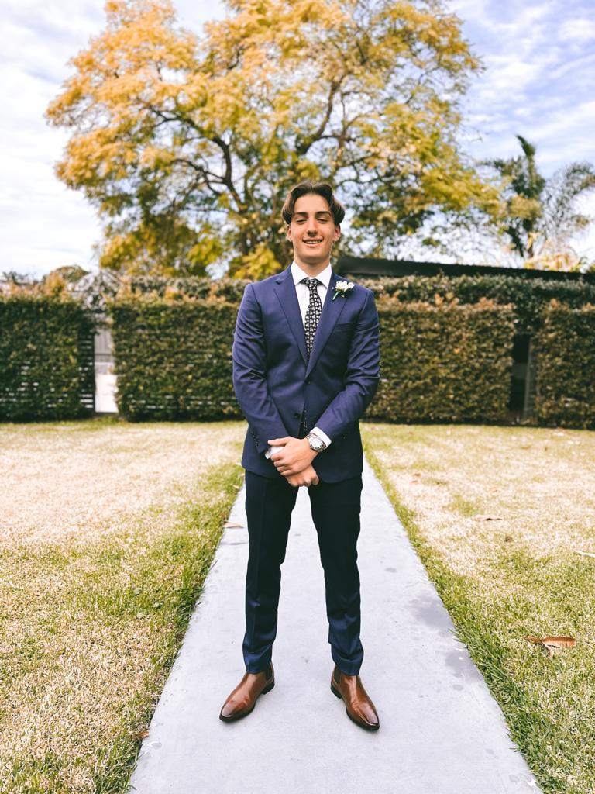
««МОЙ ВНУК АНТОН, 2023 »»
нет для него хобби, любимым увлечением, как и спорт и его бу-
дущая профессия.
На даче я была несколько раз. Конечно, большим событием
бывает, когда на дачу в выходные дни приезжают Вика, Эдик ,
Катя, их дети Ева и маленький Егор, сестра Кати Оля с дочкой.
Дом большой, уютный - обед, ужин в дружеской обстановке,
семья из трех поколений, дети, внуки, правнуки. Радость и на-
дежда, связанные с тем, что семья растет, а жизнь продолжается
в детях и внуках. Такие семейные встречи очень сближают и
надежда есть всегда, что эти встречи останутся надолго тради-
цией в семье.
Природа на даче всегда располагает к позитиву, хорошему
настроению. Какое счастье - видеть восход и заход солнца! В
отличие от города, здесь нет высотных зданий, мешающих об-
зору.
Ранним утром Андрюша стрижет травку газонокосилкой, он
улыбается - эта работа ему по душе. Аромат свежескошенной
травы напоминает запах свежего арбуза. Арбуз и скошенная
трава содержат зеленые и травянистые компоненты в своем
аромате. Оба запаха воспринимались как освежающие, легкие,
бодрящие, что, конечно, создавало ощущение связи с природой
и растительным миром здесь, на даче... Но двухдневный отпуск
Андрюши заканчивался и мы выезжали в Москву - иногда с ним
вдвоем, а Валя оставалась на даче. Спустя время, когда я пишу о
своем визите в Россию, я с теплом вспоминаю время на даче,
как самую уютную часть моего путешествия.
В День России 12 июня в Москве я слушала песню в испол-
нении Олега Газманова «Москва, звонят колокола, Москва, зла-
тые купола, Москва, по золоту веков проходит летопись вре-
мен»... Этот день является символом новой истории страны, ос-
нованной на законе, справедливости, и гражданских свободах.
Символ общей ответственности за настоящее и будущее стра-
ны, за успех и процветание. Традиционно в этот день проводят-
ся концерты и народные гуляния, многие граждане прикрепля-
ют к одежде ленточки в цветах национального флага, демон-
стрируя свою причастность к празднику.
В этот день мы посетили Зарядье. В 2019 году я уже была
тут. Тогда мы всей семьей гуляли по Зарядью, где Андрюша ор-
ганизовал обед в честь моего дня рождения в одном из замеча-

««АНДРЮША НА СВОЕМ УЧАСТКЕ»»
тельных ресторанов. В памяти остались приятные воспомина-
ния... Мы ехали туда на метро. Я читала, что преимущество
Московского метро, как транспорта - это высокая скорость и ре-
гулярность движения. Да, действительно. Мы доехали до стан-
ции Китай-Город от станции Алексеевской очень быстро. Глав-
ный вход в Зарядье - выход на Васильевский Спуск у Храма Ва-
силия Блаженного.
Немножко истории. Первое упоминание о Зарядье относится
к 1365 году, однако поселение торгового люда появилось здесь
уже с 12 века благодаря удобному расположению между Крем-
лем и пристанью на Москве-реке. Свое название это место по-
лучило из-за расположения, оно находилось за нижними торго-
выми рядами, которые тянулись вдоль Москворецкой улицы.
Несколько столетий Зарядье, а вместе с ним и весь район Китай
– город, были окружены каменной стеной, построенной в 16
веке. Её остатки были снесены в 20 веке, а в этом месте была
построена гостиница Россия в конце 1960 годов. Она считалась
крупнейшей в мире, но была снесена из-за ветхого состояния
здания и решения столичного правительства в 2006 году. А в
2017 году в самом центре Москвы буквально в двух шагах от
Кремля вырос ландшафтный парк Зарядье. Он был торже-
ственно открыт к 870 летию Москвы. Парк был построен в тече-
ние трех лет.
Он имеет четыре климатические зоны, представляющие
природу России: тундра, степь, смешанный лес, заливные луга.
Это, конечно, чудо, и удивительно ощущать настоящую приро-
ду страны в центре Москвы. Растущий можжевельник северно-
го ландшафта или душистые травы степей.
Вторым чудом для меня в Зарядье был аттракцион, где
мы сидели на подвижной платформе перед огромным 13 мет-
ровым экраном. Зал погрузился в полумрак, а потом начался
показ. Изображение вокруг нас было настолько реалистичным,
что казалось мы действительно парим над Россией. Я видела

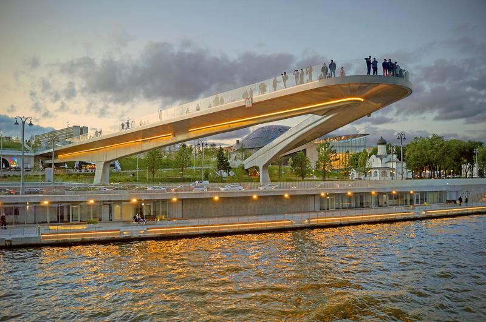
««ПАРЯЩИЙ МОСТ-МОСКВА»»
леса, реки, города - все было так близко. Движение платформы
идеально совпадало с тем, что происходило на экране. Ветер
дул нам в лицо, когда мы пролетали над полями. В моменты,
когда показывали лесную опушку, мы чувствовали запах хвои.
Платформа наклонялась и качалась, добавляя ощущение полета.
Виды Москвы и России с высоты птичьего полета. Это было за
хватывающее путешествие полное восторга и удивления.
Конечно очень впечатляет парящий мост, откуда открыва-
ются захватывающие виды на Кремль, Китай-город, Москво-
рецкую набережную, а также московские высотки и Храм Хри-
ста Спасителя. Интересно, что парящий мост именно называет-
ся так, что это сооружение отрицает идеи связи берегов и как
бы висит в воздухе приглашая к прогулкам. Мост представляет
собой бетонную консоль длиной более 140 метров в форме бу-
меранга. Здесь можно днем и ночью любоваться видами на
Москву, гулять над рекой. Парящий мост напоминает стеклян-
ный мост ,летящий над Москвой рекой.
Конечно, для полного погружения в историю Зарядье сюда
нужно приходить не один раз, чтобы послушать музыку в кон-
цертном зале, посетить палаты бояр Романовых, место рожде-
ния первого царя династии Романовых и подземный музей, где
представлены фрагменты древней Китай-городской стены, од-
ной из главных исторических защитных сооружений средневе-
ковой Москвы.
Парк Зарядье действительно впечатляет скоростью реали-
зации, учитывая масштаб, искусственный микроклимат, вы-
садку тысяч растений, парящий мост.Это памятник человече-
ской воле, подвиг инженеров и рабочих, которые заставили
время работать на себя.
Посещение Зарядья было для меня подарком со стороны
Андрея и Вали. Я благодарна им за поездку туда, этот день
стал особенным в моей жизни.
Поездка в Белоруссию
Через несколько дней я отправлялась в Белоруссию, в город
Пинск, по приглашению Тамары Комар, мамы моей знакомой
Оли, с которой нас связывает многолетняя дружба в Новой Зе-
ландии. Билеты были заранее куплены Андрюшей задолго до
моего прибытия в Россию. Я была у Тамары в 2019 году и это
время оставило в моей памяти массу положительных эмоций и
впечатлений. Моя поездка туда связывает меня еще тем, что
моя свекровь, бабушка моих сыновей, мама моего мужа роди-
лась в Белоруссии. Помню, в свидетельстве о ее рождении было
написано: родилась в Белоруссии, а национальность -белоруска.
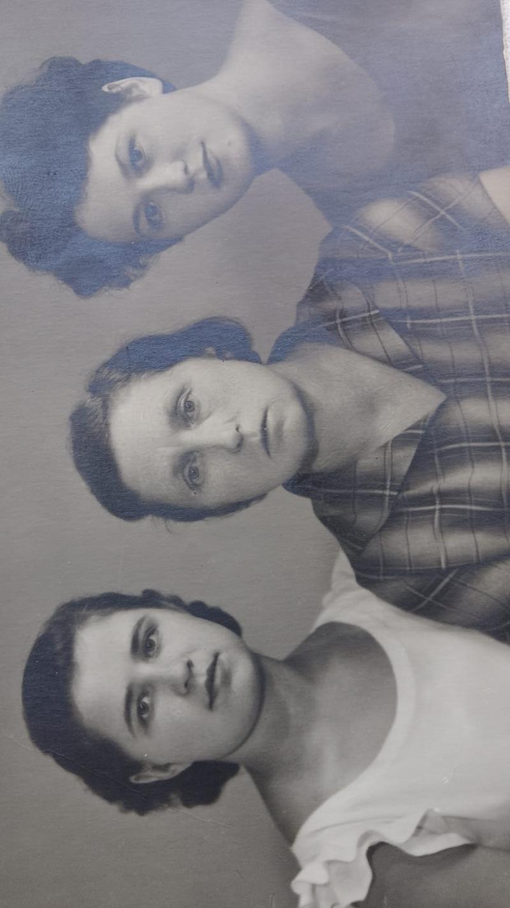
««САФОНОВА ГАЛИНА И СЕСТРЫ»»
Конечно, мои сыновья имеют белорусские корни.
При подтверждении свидетельства о рождении бабушки,
Сафоновой Галины Никитичны, выданного в Белоруссии, они
могут быть гражданами Белоруссии. Но при определенных
условиях... Я подумала, что если бы я не писала этот очерк о
моей поездке в Белоруссию, я об этом никогда бы и не узнала.
Может и детям или внукам будет интересно знать о своих кор-
нях. Мои сыновья - граждане России и я горжусь ими. Но я хоте-
ла поближе узнать историю, культуру, быт людей Белоруссии. Я
уезжала из Москвы с Белорусского вокзала в полночь. Андрей и
Валя провожали меня. Стены вокзала искренне обещают ждать,
когда люди прощаются, радостно встречают близких, родных,
плачут от счастья, здесь иногда меняются судьбы, а стены вок-
залов бережно хранят миллионы таких историй. Но едва ли ка-
кой-то вокзал в Москве может сравниться с этим вокзалом.
Белорусский вокзал помнит множество значимых событий
из истории страны. В1896 году здесь встречали прибывшего на
коронацию Николая второго. Этот вокзал служил местом от-
правки солдат на фронт во время войн. В 1914, когда он назы-
вался Смоленским, вокзал являлся одним из основных пунктов
отправки воинских эшелонов на западные фронты, где прохо-
дили самые. крупные бои. Вокзал стал символом Великой Оте-
чественной войны, поскольку именно отсюда отравлялись на
фронт солдатские эшелоны и сюда возвращались солдаты-по-
бедители. Впервые
здесь прозвучала песня
«Священная
война». Вокзал не молод, 155 лет, здание является охраняемым
государством памятником архитектуры и неофициально носит
название Вокзала Победы.
На фасаде можно увидеть символы царских времен: якорь и
молоток. У вокзала расположен памятник Прощание славянки.
Это скульптурная композиция, установленная 8 мая 2014 года,
которая изображает солдата Первой Мировой войны и девуш-
ку, провожающую его на фронт. Памятник символизирует всех
женщин, провожающих своих близких на войну.
Памятник посвящен знаменитому маршу Василия Агапки-
на. Военный дирижер, 28-летний композитор написал эту му-
зыку во время первой Балканской войны в 1912 году. Мелодия
вскоре стала одной из главнейших тем Российской Армии и по-
этому на параде 7 ноября 1941 и в июле 1945 года Василий
Агапкин дирижировал военным оркестром, исполняющим
этот марш «Прощание славянки». Эта мелодия приносит тре-
пет, волнение и гордость. Вокзал служил местом съемок для
известных фильмов, таких как «Летят журавли» и «Белорусский
вокзал». Я смотрела эти фильмы несколько раз. Также я читала
в обзоре ИИ, что после знаменитого триумфального перелета
через Северный полюс В. Чкалова и С. Громова на площади Бе-
лорусского вокзала состоялось торжественное приветствие. Это
событие стало ярким примером чествования героев авиации
после их героического дальнего перелета. Конечно, о Белорус-
ском вокзале можно писать и писать. Он является крупным ис
торически важным объектом, соединяющим столицу с запад-
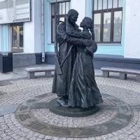
««БЕЛОРУССКИЙ ВОКЗАЛ В МОСКВЕ, ПАМЯТНИК ПРОЩАНИЕ СЛАВЯНКИ »»
ными регионами России и другими странами. Я отправилась
поездом Москва - Брест, но с остановкой в Минске.
Поезд отправлялся в полночь, остаток ночи я спала. Утром
следующего дня перед приездом в Минск я выходила на оста-
новках поезда в Смоленске, Орше, Борисове подышать свежим
воздухом, прогуляться по перрону, посмотреть архитектуру ж/д
вокзалов. Смоленск, один из древнейших городов Руси, нахо-
дится в России на границе с Белоруссией.
После Смоленска - город Орша. Территория Белоруссии
расположена в 50 км от границы с Россией в 520 километрах
до Минска. В обзоре ИИ читала, что название вокзала - Орша -
происходит от одноименного города, который в свою очередь
получил название от реки Оршица, притока Днепра.
Таким образом, сам ж/д вокзал был назван по имени города,
на территории которого он находится. История станции Орша
насчитывает более ста лет. В 1884 году здесь был построен пер-
вый ж/д вокзал, а в 1952 году - существующее здание. Орша -
центральная сегодня - важный исторический железнодорожный
узел, который есть частью одной из первых железных дорог на
территории Белоруссии и в настоящее время играет важную
роль в экономике региона, обеспечивая грузовые и пассажир-
ские потоки. Я могла бы этого не знать, но мне хотелось побли-
же познакомиться с историей страны, в которую я ехала. Орша
осталась позади. Через 1 час 15 минут поезд прибыл на станцию
Борисов, которая находится в 71 км от Минска. Времени доста-
точно, чтобы посмотреть внешний вид здания станции. Исто-
рия рассказывает, что станция Борисов была основана в 1871
году в 1914 году было построено уникальное для своего време-
ни двухэтажное здание вокзала, которое сохранилось до наших
дней. Город был назван в честь полоцкого князя Бориса и впер-
вые упомянут в летописях в 1127 году. Он расположен на при-
вокзальной площади, имеет вытянутую прямоугольную форму,
что характерно для железнодорожных вокзалов. Фасад декори-
рован элементами архитектуры - такими, как пилястры и кар-
низы, создавая впечатление торжественности и величия. Обе
станции - Орша и Борисов - серьезно пострадали во время ВОВ.
В результате отступления немецких войск они были практиче-
ски полностью выведены из строя. Железнодорожники смогли
восстановить движение поездов через станцию Борисов уже
через неделю после освобождения города, однако полное вос-
становление заняло годы.
Станция Орша была разрушена при отступлении немцев,
подобно Борисову. После освобождения города железнодорож-
ники сразу же приступили к восстановительным работам, что
позволило быстро возобновить движение поездов. В Борисове
полностью восстановление станции было завершено к 1951
году.
Средний темп восстановления на направлении Орша - Бо-
рисов - Минск - 21.2 км в сутки . Это подвиг людей. Мы долж-
ны всегда помнить героев ВОВ для сохранения исторической
правды. Их подвиги, мужество и отвага в нашей памяти и пере-
даны потомкам.
Это только очень краткая история о героях-железнодорож-
никах в Белоруссии. Но память, она вечна.
За 10 часов я доехала из Москвы до Минска, преодолев рас-
стояние 750 км.
Минск стал моей конечной остановкой. На этом поезде мне
бы хотелось продолжить путь до Бреста - города с богатой тыся-
челетней историей, знаменитой героической Брестской крепо-
стью, прогулками по заповеднику Беловежской пущи и осмот-
ром старинных замков в его окрестностях. Однако мое путеше-
ствие продолжалось в другом направлении, к городу Пинску.
Вокзал в Минске удобно расположен на привокзальной
площади в центральной части города. Рядом находится станция
метро. Там же Площадь независимости, что очень удобно как
для пассажиров, так и для туристов, которые могут начать зна-
комиться с достопримечательностями города.
Ж/Д вокзал стал как бы символом города, соединяющим
современность и традиции. Согласно историческим источни-
кам, ж/д вокзал появился в 1873 году и носил название «Вилен-
ский». В начале 1890 годов деревянное здание вокзала было пе-
рестроено в кирпичное. Во время ВОВ немецкие войска в 1944
году сожгли вокзал, оставив только голые стены. Здание было
восстановлено и прослужило до 1991 года, когда его признали
аварийным. Новое здание Минского ж/д вокзала открылось в
канун Нового века и нового тысячелетия 30 декабря 2000 года.
Ну вот такая история этого главного ж/д вокзала в Минске.
Сразу с поезда я попала в атмосферу доброжелательности и
комфорта Вокзал оборудован всем необходимым для комфорт-
ного ожидания поезда: экскаваторы, на которых не нужно было

«« НОВОЕ ЗДАНИЕ МИНСКОГО Ж/Д ВОКЗАЛА»»
тащить чемоданы, многочисленное количество кафе и буфетов
с вкусно пахнущей едой, приемлемыми ценами. Я без труда
нашла выход на платформу, с которой я уезжала в Пинск. Вок-
зал высокого уровня впечатлил своим видом , просторными за-
лами, светлыми интерьерами. Вокзал - это как ворота, выпус-
кающие пассажиров в дорогу. Я увидела здесь частичку жизни
белорусского народа, их культуру и традиции.
В самом городе Минске я не была ,так как в полдень уезжала
в Пинск. Здесь я обменяла русские деньги на белорусские, сдала
на время свой багаж в камеру хранения, покушала в кафе кар-
тофельные оладьи - популярное блюдо европейской кухни - де-
руны, драники. И хотя эти картофельные оладьи по похожим
рецептам готовят в разных странах мира, именно белорусские
дранки завоевали популярность, благодаря особому вкусу и на-
циональным кулинарным секретам и свойствам белорусского
картофеля под названием бульба. Об этом я тоже читала.
В полдень я уезжала из Минска. Время в пути - 4 часа 5
минут, расстояние - 221 км до Пинска. Остановки очень корот-
кие, их всего 4. Из них Лунинец – последняя, 10 мин.
Сидеть в купе не хотелось, я стояла у окна, любуясь белорус-
ской природой, которая пролетала мимо окон. В Белоруссии
очень много лесов, озер, болот, рек. Из-за большого количества
болот эту страну называют легкими Европы. Болота играют
важную роль в природе, они очищают воздух от углекислого
газа, сохраняют редкие виды растений и животных. В народной
культуре болото считалось глухим и опасным местом, но се-
годня большинство находится под охраной человека. Белорус-
ские болота уникальны своим рельефом. Здесь расположена
пятое по величине болото в Европе - Ельня.
Ему более девяти тысяч лет. Это болото содержит особый
мох, который обладает антисептическими свойствами и рабо-
тает, как природный фильтр, поэтому болота являются огром-
ным хранилищем пресной воды.
В России есть Васюганские болота, одни из самых больших
в мире. Они расположены в Западной Сибири и обеспечивают
пресной водой всю территорию региона. Здесь находится около
800 тысяч озер. Болота - это хранилище чистой воды. В озерах
можно купаться, а из болот можно пить только воду. В болотах
земли сосредоточен огромный запас пресной воды, который
значительно превышает объем всех рек на планете. Как об
этом интересно читать. Благодаря моему путешествию я узнаю
так много. Я всегда думала, что болото это трясина, это опасно.
Наверное, ничто так не развивает ум, как путешествие. Поездки
заставляют быть более внимательными, вовлеченными в на-
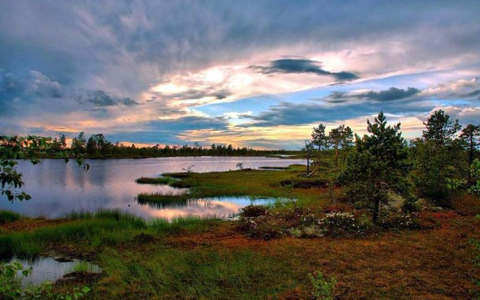
«« ВАСЮГАНСКИЕ БОЛОТА, ОДНИ ИЗ САМЫХ БОЛЬШИХ В МИРЕ»»
стоящий момент. Когда я вернусь в Россию в ближайшие годы
или мои дети, внуки прочитают об этом интересном чуде
природы, может они захотят съездить к этому знаменитому
болоту Ельня или в Васюганские болота Западной Сибири
России. Там лучше в сентябре быть, когда созревает клюква.
Лунинец мы проехали. Красивое здание вокзала имеет
большое историческое прошлое. Во время ВОВ район и все
строения на привокзальной площади были целиком разруше-
ны, осталось целым только здание станции, оно стоит и се-
годня. Современный вокзал построен в 1967 году.
В Пинск, конечную остановку моего путешествия, поезд
прибыл по расписанию. Тамара, мама Оли, встретила меня.
Начну с вокзала. Это не просто здание, а важный транспортный

«« ВОКЗАЛ Ж/Д СТАНЦИИ ПИНСК»»
узел города. Он расположен на берегу рек Пина и Припять и иг-
рает ключевую роль в сообщении с другими населенными
пунктами Белоруси и России. Также это современное здание,
которое является воротами в старинный город с богатой исто-
рией и множеством достопримечательностей. Вокзал имеет
большую историю. Его закладка началась в 1882 году. В годы
Первой мировой войны вокзал был частично разрушен. Совре-
менный вокзал ж/д станции Пинск был открыт в 2009 году. На
фасаде здания вывешена мемориальная доска, посвященная
железнодорожникам, которые принимали участие в революци-
онных выступлениях против царизма.
Пинск - древний город на Западе Белорусского Полесья. Го-
род возник на месте древнего поселения на левом берегу Пины
в месте впадения в нее реки Струменя. Впервые о Пинске упо-
минается в 1097 году в Ипатьевской летописи. Пинск на про-
тяжении своей истории являлся частью таких государств, как
Великое Княжество Литовское, Речь Посполитая, Российская
империя и Польская Республика. История Пинска - это история
постоянного культурного и политического влияния разных
держав, сменяющих друг друга в разные эпохи. Конечно, я хо-
тела иметь побольше информации об этом городе. У меня был
уже накопленный опыт об истории этого замечательного горо-
да с прошлой поездки сюда в 2019 году, но хотелось вспомнить
те впечатления и получить новые…
Мне интересно было познакомиться с элементами Герба го-
рода – фигуры, цвета, которые могут рассказать об историче-
ских событиях, культурных особенностях и традициях города.
Красный цвет символизирует мужество и отвагу, а синий - тер-
пение и честность. Герб Пинска - серебряный лук со стрелой на
красном поле. В нижней части Герба на синем фоне расположе-
ны символы: теплоход и вода /судостроение и портовый город/,
шестерня /промышленность/, Бабича пряжи / легкая промыш-
ленность/ и дренажная труба /мелиорация/. Герб является ви-
зитной карточкой, отражающий сущность и уникальность горо-
да.
В прошлом Пинск называли Белорусской Венецией из-за
обилия рек и каналов, которые служили основными транспорт-
ными путями - люди использовали их для передвижения и тор-
говли. В то время рек было больше, чем дорог. Читала легенду,
что каменные кресты плыли по реке Пине под стенами города
и не тонули. Это божественное явление и вдохновило людей на
принятие новой веры. Живая легенда, существующая на протя-
жении столетий.
Город Пинск - это город-музей под открытым небом и еще
его называют так из-за хорошо сохранившейся застройки про-
шлых веков, множества исторических и архитектурных памят-
ников - таких, как иезуитский коллегиум, построенный в 17
веке. Он представлял собой одно из первых высших учебных
заведений на территории Полесья. В настоящее время не дей-
ствующий. Монастырь францисканцев включает в себя костел
Успения Девы Марии и сам Монастырь. Важная католическая
святыня Белоруссии, памятник архитектуры начала 18 века,
известен своими уникальными фресками, такими как Покло-
нение Волхвов и Пинская Мадонна. Последняя является одним
из художественных произведений храма, обладающая чудо-
творными свойствами. Здесь, в сердце Пинска, где время за-
медляет ход, а кирпичные стены костелов хранят шепот веков,
оживает величественный голос короля инструментов - органа.
Он установлен в Соборе Вознесения Пресвятой Девы Марии.
Сейчас это самый старый орган в Белоруссии.
Пинск сохранил значительную часть своей исторической
уличной застройки. Сохранилось много домов, построенных в
различные исторические периоды, включая здания, которые
можно отнести к нашему времени, а также современные жи-
лые комплексы и здания, построенные в последние десятиле-
тия, в нынешнем веке в дополнение к сохранившимся истори-
ческим памятникам.
С Тамарой у меня было много прогулок по улице Ленина,
главной и старейшей улице, знаменитой расположенными на
ней множеством магазинов, кафе, ресторанов. Интересно, что
эта улица сохранила свой исторический облик как самая древ-
няя, изначально известная под множеством названий. Она яв-
ляется одним из самых посещаемых мест традиционных прогу-
лок еще с 19 века. И мы гуляли здесь с Тамарой спустя два века.
Ее легко найти, в самом начале улицы стоит бронзовый памят-
ник Пинчуку.
Эта фигура - собирательный образ коренных жителей. Ин-
тересно, что Пинск называют Полесский Иерусалим из-за рели-
гиозных сооружений, особенно католических, которыебыли
построены в средние века. Полесский указывает на географи-
ческое расположение города на полесье, и на регион с уни-
кальной природой, болотами и реками, где Пинск является его
столицей.
Мне повезло, я приехала в Пинск в сезон черешни. Мы с Та-
марой навещали ее подругу Людмилу, у нее большой сад, ветки
деревьев полны были спелой черешни. Это было большим удо-
вольствием наслаждаться вкусными, свежими фруктами.
Её подруга Людмила с семьей приехали в Пинск из России, с
Севера, и мне интересно было общение с этой семьей, так как я
тоже долго жила на севере.
Рядом с домом Тамары находится набережная Пины, по ко-
торой растут липы.
Липы в Белоруси цветут в конце июня - начале июля, поэто-
му второй летний месяц в Белоруси липень назван в честь этого
явления. Каждое утро и вечер мы гуляли по Набережной, на
слаждались сладковато-медовым ароматом лип, который
разносился вокруг. Я слышала, что этот аромат способствует
расслаблению и снятию стресса.

«« В ГОСТЯХ У ТАМАРЫ»»
Наши прогулки с Тамарой были удивительными. А еще по
утрам я, находясь в гостях у Тамары, просыпалась ранним
утром от вкусного запаха еды и была всегда удивлена изоби-
лием еды белорусской трапезы. Прогуливаясь по знаменитой
Главной улице Ленина, мы как-то зашли в кафе с грузинским
названием «Хинкальная», где мы кушали вкусное грузинское
блюдо хинкали.
В один из дней мы посетили Первомайский рынок, где я ку-
пила лилии для дачи в Москву. Мне захотелось, чтобы белорус-
ские цветы зацвели в Подмосковье на даче ребят в Степанько-
во. Меня также интересовали ткани Белоруссии. Тамара, в про-
шлом технолог, рассказывала о льне, который растет в сель-
ской местности, и тканях из него, которые служат долгие годы,
отлично впитывают влагу и быстро высыхают, создавая ощуще-
ние прохлады и комфорта. По совету Тамары я купила несколь-
ко льняных вещей, сувениры. Находясь в этом городе, я от-
крыла многое для себя и каждый день находясь у нее в гостях, я
ощущала тепло, открытость и ее гостеприимство, внутреннее
спокойствие, гармонию, которое дарит человек и еще.. ощу-
щение дома.
Я уезжала из Белоруссии поздно вечером 22 июня 2023 в ис-
торический день памяти и скорби. В этот день 82 года тому на-
зад Германия напала на СССР, частью которого была БССР .
Беларусь стала одной из первых территорий Советского Союза,
на которую обрушился удар агрессора. Потери были колоссаль-
ными. Установлено, что каждый третий житель Беларуси погиб
в годы войны, более 380 тысяч человек были вывезены в Герма-
нию на принудительные работы. Были разрушены 209 городов
и районных центров, а также 9200 деревень. Беларусь утратила
более половины своего национального богатства. Здесь много
героических мест. К основным относятся Брестская крепость –
герой, важный исторический объект который принял на себя
первый удар в ВОВ. Защитники проявили выдающуюся доб-
лесть, стойкость и мужество , оказав ожесточенное сопротивле-
ние.
Государственный мемориальный комплекс Хатынь, где в
марте 1943 года в деревне Хатынь немецко-фашистскими ка-
рателями заживо сожгли 149 жителей – стариков, женщин, де-
тей. В 1969 году на месте деревни был открыт мемориальный
комплекс Хатынь, в память о массовом уничтожении нациста-
ми и их приспешниками мирного населения. В период войны в
Пинске погибло более 17000 евреев. В городе велись партизан-
ские действия и в 1943 году советские войска провели Пинский
десант для освобождения города. Пинск был освобожден 14
июля 1944 года, а полное освобождение от немецко - фашист-
ских захватчиков произошло в 1944 году в ходе масштабной
операции Багратион, когда были освобождены последние бе-
лорусские города, такие как Брест, что ознаменовало заверше-
ние немецкой оккупации на территории БССР.
Память о ВОВ является данью уважения к погибшим и вы-
жившим и подчеркивает как далась свобода и благополучие и
почему их нужно ценить и беречь...
«Молодость моя Белоруссия …. Песня партизан. Сосны и ту-
ман Песня партизан … Алая заря...». Музыка А. Пахмутовой,
слова Н.Добронравова в исполнении знаменитого певца ансам-
бля «Песняры» Владимира Мулявина. Мягкие, тихие звуки этой
песни передают грусть, в них чувствуешь мысли и пережива-
ния того времени. Эта песня является своеобразным патрио-
тическим гимном, рассказывающим о мирных жителях, по-
гибших в Хатыни. Страна, практически уничтоженная войной,
смогла быстро восстановить свой народ и хозяйство, показав
невероятную способность к выживанию. Я прожила в Белорус-
сии в городе Пинске всего неделю, но я получила яркие эмоции

«« МЕМОРИАЛЬНЫЙ КОМПЛЕКС ХАТЫНЬ»»
и новые впечатления. Мне, конечно, хотелось побывать здесь
еще, съездить в Беловежскую пущу, о которой я читала, что она
является одним из крупнейших туристических центров Бела-
руси, а также полюбоваться древними дубами, возраст кото-
рых превышает 500 лет и зубрами. Я читала, что они являются
символом Беловежской пущи. Это самое массивное животное
Европы, достигающее тонны весом и высоту до двух метров в
холке. Зубр, дикий лесной бык, самый крупный представитель
копытных, и именно Беларусь спасла и сохранила его для бу-
дущих поколений. Мое путешествие в Белоруссии закончилось.
Я в Смоленске на границе Белоруссии с Россией, но в душе я
еще долго была на белорусской земле.
Есть фраза, что дорога домой всегда короче. Да, действи-
тельно, поезд тихо подошел к Белорусскому вокзалу и Москва
встретила меня тишиной. Раньше, в давние годы, прибытие
поездов в Москву казалось масштабнее, когда из репродуктора
поезда торжественно неслось: «Дорогая моя столица, золотая
моя Москва». Эта песня, написанная в суровом 1941 году, в 1995
году стала гимном Москвы . Мелодия этого гимна всегда со-
здавала ощущение праздника, которого мне так не хватало в
этот раз. Единственным, что нарушило эту тишину, была свет-
лая улыбка моего сына, Андрюши...
Мы ехали с ним на такси по ночной Москве. Ночная Москва
- удивительное прекрасное зрелище, которое стоит увидеть, и
не один раз. После поездки в Белоруссию я провела неделю в
Москве.
25 июня мы отмечали день рождения моей внучки Викто-
рии. Ей исполнилось 28 лет. Для меня это было большим собы-
тием и я мысленно вспоминала трогательные моменты ее дет-
ства, когда мы много времени проводили вместе.
Для меня это был счастливый момент в моей жизни, ведь
последние годы я очень редко была рядом с нею, а здесь, в этот
день ее рождения, она была рядом. Я могла купить ей торт, ко-
торый ей понравится, огромный букет цветов и сказать ей , что
она прекрасная, добрая, сильная, и пусть счастливые совпаде-
ния и удача всегда сопровождают ее на пути к счастью... Так все
и было, день был счастливый и для меня, потому что она была
рядом.

«« ДЕНЬ РОЖДЕНИЯ МОЕЙ ВНУЧКИ ВИКТОРИИ»»
Мы отметили это событие в ресторане Паста-Баста в ста-
ринном итальянском ресторане с уютной атмосферой. Основ-
ное блюдо там - различные виды пасты с разными соусами и
добавками, а также другие итальянские блюда, включая закуски
и десерт. Все подавалось на больших тарелках с небольшими
порциями по заказу. Мне понравилось, вкусно. Вика задувала
свечи на торте, эта традиция символизирует исполнение же-
ланий в этот особенный момент. Дружным хором мы спели для
нее песню с Днем рождения. Это событие в моей памяти сих
пор.
После дня рождения Вики я оставалась еще на три дня в се-
мье Андрея. В этот период времени в моей жизни был особен-
ный день - 26 июня - день свадьбы с Юрием Степановичем Па-
зынич, отцом моих сыновей, Андрея и Олега. Он ушел из жизни
в 52 года, прожили вместе 29 лет.
Когда я рядом с Андрюшей, в этот день он всегда дарит мне
красные розы. Я всегда мысленно вспоминаю этот день, хотя с
тех пор прошли целые десятилетия... Остались только воспо-
минания....
26 июня 1960 года …
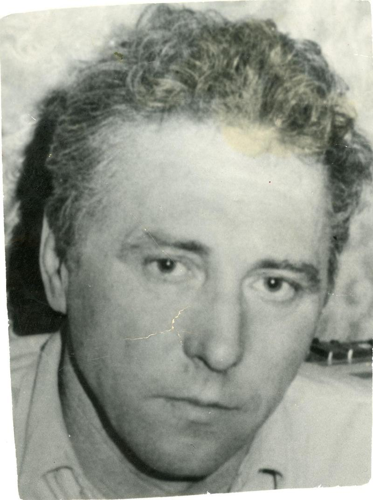

«« ЮРИЙ СТЕПАНОВИЧ ПАЗЫНИЧ-МОЙ МУЖ»»
Поездка в Кисловодск. Эльбрус. Грозный.
Следующая моя поездка была в Кисловодск. Я собирала че-
модан и рюкзак, смотрела в интернете погоду в Кисловодске на
ближайшие 21 день. Планировала поездки в горы, подбирала
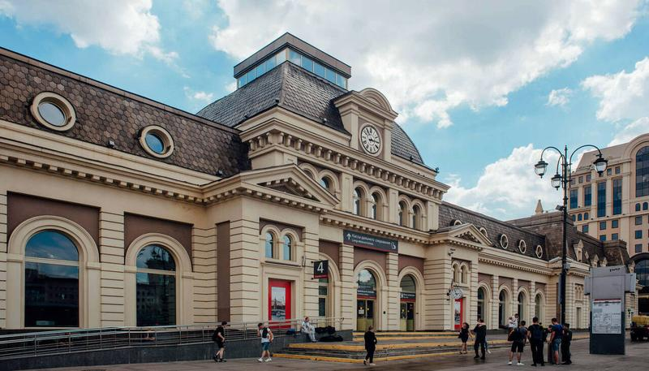
«« ПАВЕЛЕЦКИЙ ВОКЗАЛ»»
теплую одежду и удобную обувь. 29 июня вечером я уехала в
Кисловодск с Павелецкого вокзала. Знакомый до боли вокзал...
Много лет тому назад я часто приезжала в Москву к моему
родному дяде Слета Семену Петровичу. Вокзал изменился за
эти годы, стал значительно удобнее и комфортнее, но несмотря
на масштабную реконструкцию, вокзал сохранил для меня ту
самую атмосферу близости, которую я помню с тех моих пер-

«« ТУЛА, ГОРОД-ГЕРОЙ»»
вых поездок в Москву из моего родного Луганска много лет
тому назад. Воспоминания мои воспоминания...
По расписанию поезд Москва - Кисловодск ушел с Павелец-
кого вокзала вечером, оставляя Валю и Андрея, моих постоян-
ных провожающих, на перроне, а я отправилась в свое новое
путешествие. Поезд 143, вагон третий, купе третье, место ниж-
нее. Соседи - молодой папа с двумя детьми - едут покорять
Домбай и уже не в первый раз на трассах разного уровня слож-
ности. У меня тоже мечта увидеть Домбай, когда приеду в Кис-
ловодск. Возьму экскурсию.
Поезд остановился в Туле. Знаменитый город-герой, старше
Москвы на год, известный как оружейная столица России, ро-
дина самоваров, печатных пряников и легендарного Левши,
который стал идеальным воплощением тульского умельца. О
Туле говорят, что это место, где история вкусная /пряник/ и
звонкая /гармонь. Выражение «Тула -звонкая гармонь» закре-
пилось, потому что в этом городе началось первое в России
массовое производство этого инструмента в 1830 году, а пер-
вое официальное упоминание о тульском прянике датируется
1685 годом. Золотой век тульского пряника - 19 век, когда в
Туле насчитывалось более 30 сортов этого лакомства. Сейчас в
Туле сотни видов пряников. Впечатляет еще тот факт, что в
Туле был испечен пряник весом 117кг и длиной 1.8 метров.
Конечно, Тула - это не только сталь и пряники. Главное от-
крытие - Центральный парк. Трудно поверить, что сто лет на-
зад здесь была свалка. Санитарный врач Петр Белорусов со-
вершил тихий подвиг, он буквально вылечил землю - посадил
там лес. Сам он рано сгорел от чахотки в 39 лет, но подарил го-
роду легкие, которые дышат до сих пор. Удивительно, как один
человек может оставить после себя не памятник из камня, а жи-
вую вечность.
В Тулу я часто приезжала, когда находилась проездом в
Москве из Нерюнгри по пути в Луганск. В этом городе живет
моя подруга Ольга, она переехала сюда из города Нерюнгри,
где прожила много лет и где нас связывала большая дружба, не
забытая нами, которая продолжалась здесь, в Туле. Прошло
много лет после нашей последней встречи, но воспоминания
всегда согревают и напоминают о наших встречах на ее даче,
музеи, экскурсии в величественную усадьбу Толстого, гуляние в
парках, а также наши прожитые в Нерюнгри трудные девяно-
стые годы. Нет , такое не забывается, я счастлива, что в моей
жизни была Ольга и наши встречи здесь, в Туле.
Этот город также известен тем, что здесь жили и творили
многие писатели: Лев Толстой, Глеб Успенский, Василий Жу-
ковский, Иван Тургенев. Также с городом связаны имена Ви-
кентия Вересаева, Ивана Бунина. Михаил Салтыков-Щедрин
также бывал в Туле. А Сергею Есенину нравился местный парк.
Интересно, что в этом парке установлены памятники поэту С.А.
Есенину и санитарному врачу П.П. Белоусову, чьим именем на-
зван парк .
Как хорошо, когда есть воспоминания. Наверное, это тот
случай, когда прошлое согревает настоящее.
К станции Кавказская я приехала на следующий день в пол-
день. Об этой станции известно, что первое здание было по-
строено в 1876-1888 годах. Оно сохранилось до сих пор и ис-
пользуется как багажное отделение. Новое здание вокзала воз-
вели в 1903 году из красного кирпича, сочетая стили русской
средневековой архитектуры и ампира. Интересно, что и сегодня
вокзал на станции Кавказская остается украшением города
Кропоткина и прекрасным образцом ж/дорожной архитектуры.
В этом здании сочетались современные формы и классические
элементы. Да, действительно, это классика, и я сделала первое
фото себя на фоне этого прекрасного здания на Кавказе. После
станции Кавказская в течении 6 часов я проехала города Арма-
вир, Невинномысск, Минеральные Воды, Пятигорск, Ессентуки.
Остановки были короткими. Только в Минеральных водах поезд
стоял около часа. Возможно потому, что этот город называют
главными воротами Кавказа, здесь он выполняет роль транс-
портного ж/д узла, отсюда туристы отправляются на курорты в
Пятигорск, Железноводск, Ессентуки и Кисловодск, куда и я
прибыла по расписанию поезда Москва в 19:14.
Пассажиры медленно выходили из поезда. Я покинула вагон
с некоторой неуверенностью, так как была на станции в Кис-
ловодске впервые. Мне помог водитель такси, он стоял в ожи-
дании пассажиров на перроне и я, пользуюсь его услугами, за-
платила 200 рублей и через 10 минут была уже у крыльца сана-
тория «Дворец Нарзанов».
Престижный, пятизвездочный санаторий в пяти этажах со
ступенчатой лестницей находился в тихом и спокойном месте -
у входа в верхний парк и на одной из самых красивых улиц
Кисловодска в 6 минутах от Каскадной лестницы и 10 минутах
до канатной дороги и долины роз. Это было очень удобно для
меня.
В этом престижном санатории, где мой отдых был оплачен
моим сыном Андреем я провела три недели. Это были дни не-
забываемого отдыха. Мой отдых здесь Андрей заранее заплани-
ровал, когда я была в Новой Зеландии. Спасибо, Андрюша.
Туры для предстоящих экскурсий по Кавказу я купила в ту-
ристической фирме «Ариана». В санатории есть санаторно-ку-
рортная программа, но я не пользовалась их услугами: у меня
не было медицинской карты, лекарства от давления я взяла с
собой, аппарат для измерения давления Андрюша мне купил
перед отъездом в мои путешествия. Но за весь период моего
пребывания в санатории я даже не вспомнила о давлении -
горный воздух, ранние прогулки, минеральная вода давали мне
силу, энергию для путешествий по Кавказу. Я жила в одноком-
натном, двухместном номере на втором этаже с балконом на
центральную улицу. В номере - мебель, создающая уют, ванна,
душ, телевизор, рядом ресторан. На первом этаже плаватель-
ный бассейн, где я плавала в свободное от экскурсий время. Ко-
гда я уезжала на экскурсию на целый день, после ужина в ресто-
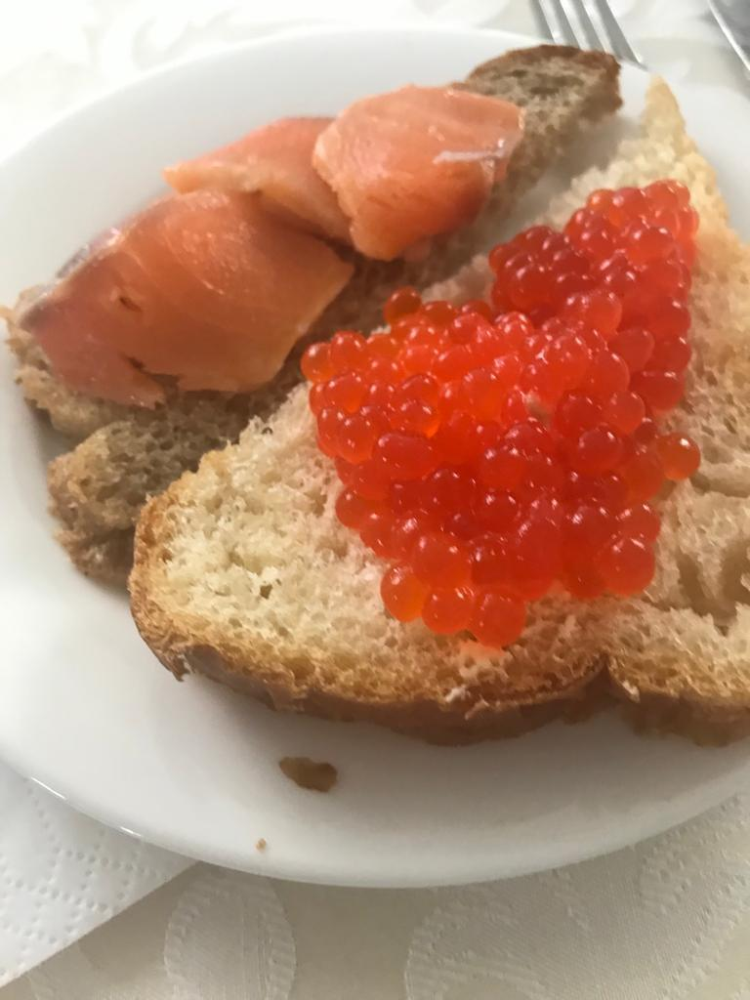
«« ЗАВТРАК - БЕЗ КОММЕНТАРИЕВ :0) »»
ране получала пакет с продуктами на следующий день моего
путешествия, но на ужин обычно я успевала. В ресторане мне
нравилось разнообразие еды, шведский стол, прекрасная вы-
печка, вкусные супы, обилие фруктов, овощей и ежедневно на
завтрак была красная икра лососевых рыб. Конечно, я насла-
ждалась ею, это вкусно и полезно для здоровья, она богата не-
заменимыми аминокислотами и насыщенными жирными кис-
лотами омега 3, которые полезны для сердца, мозга, сосудов.
Но особенностью ресторана была, конечно, домашняя атмосфе-
ра, изысканный сервис и безупречный вкус.
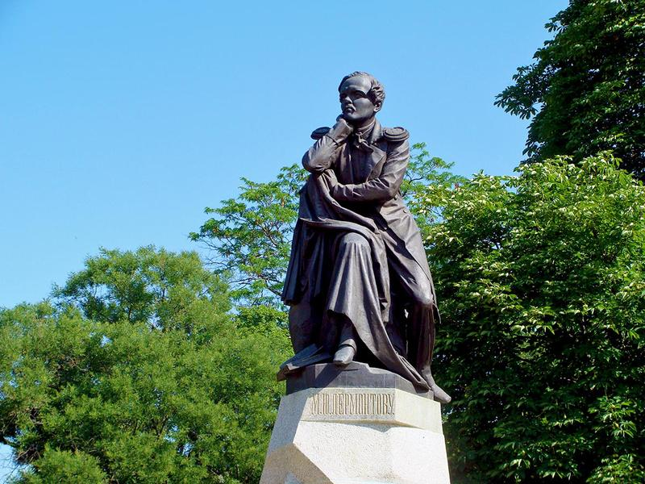
«« КАК СЛАДКУЮ ПЕСНЮ ОТЧИЗНЫ СВОЕЙ, ЛЮБЛЮ Я КАВКАЗ…»»
На территории санатория находится бювет-павильон, куда я
ходила каждое утро пить минеральную воду нарзан. Я слышала,
что нарзан начинается у подножия Эльбруса, где тающие лед-
ники стекают ручейками с гор и впитываются в землю. Там
вода проходит через несколько фильтров и насыщается мине-
ральными солями, различными элементами, а также углекисло-
той. Нарзан означает «напиток богатырей», который бодрит дух
и тело, название произошло из кабардино-черкесского языка,
где нарт - богатырь. Визитной карточкой города считается До-
лина роз в национальном парке Кисловодска. Она является
Жемчужиной города. Более 30 сортов роз растут на территории.
Считается, что долина роз выглядит особенно эффектной в
конце лета, когда цветут практически все растения на клумбах.
Но и в начале июля она была для меня незабываемой прогул-
кой, ярким живописным уголком, где я могла любоваться уди-
вительной красотой чудесно пахнущих роз. На выходе из парка
находится канатная дорога, а выше Павильон Храм воздуха.
Это павильон-полуротонда, смотровая площадка с крышей,
опирающейся на колонны, построенная в 1914 году в курорт-
ном парке, чтобы люди могли отдыхать и дышать целебным
воздухом. Это не религиозный храм, а памятник уникальному
климату и воздуху национального парка, который признается
ценным природным ресурсом наравне с нарзаном. Изначально
он служил укрытием от непогоды и местом для отдыха посети-
телей дальних троп парка. В настоящее время его часто назы-
вают символом лечебного воздуха Кисловодска, считающегося
одним их самых ценных ресурсов курорта.
Я счастлива, что могла там просто посидеть и подышать. Я
думаю, каждый, кто приезжает на отдых в Кисловодск, если ко-
нечно не омрачает его болезнь или преклонный возраст, счита-
ет своим долгом посетить Большое и Малое седло. Это две вер-
шины Джинальского хребта, расположенные близко к Кисло-
водску и получившие название из-за формы, напоминающей
седло. Более доступное для пеших прогулок Малое седло. Я
поднялась на высоту 1325 метров. Была ясная погода, я смотре-
ла с высоты на Кисловодск и двуглавый Эльбрус и дышала чи-
стейшим воздухом. Большое седло выше, 1409 метров, является

«« СИМВОЛОМ ЛЕЧЕБНОГО ВОЗДУХА КИСЛОВОДСКА»»
самой высокой точкой Кавказских минеральных вод. Но я не
смогла найти его, хотя потратила на поиски долгое время. Я не
нашла указателей направления к нему, но в санаторий я пришла
в хорошем настроении, уставшая, но счастливая. Это было на-
чалом моего знакомства с горами Кавказа.
Здесь, в парке недалеко от Храма воздуха я поднималась на
горную вершину Красное солнышко (высота 1065 метров). Оно
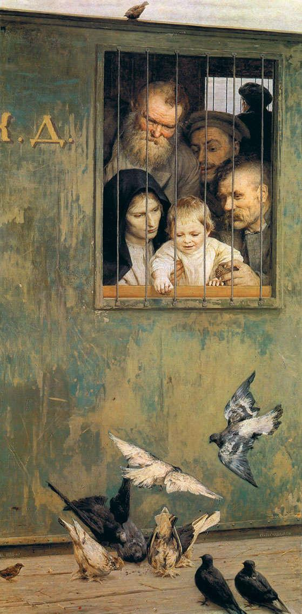
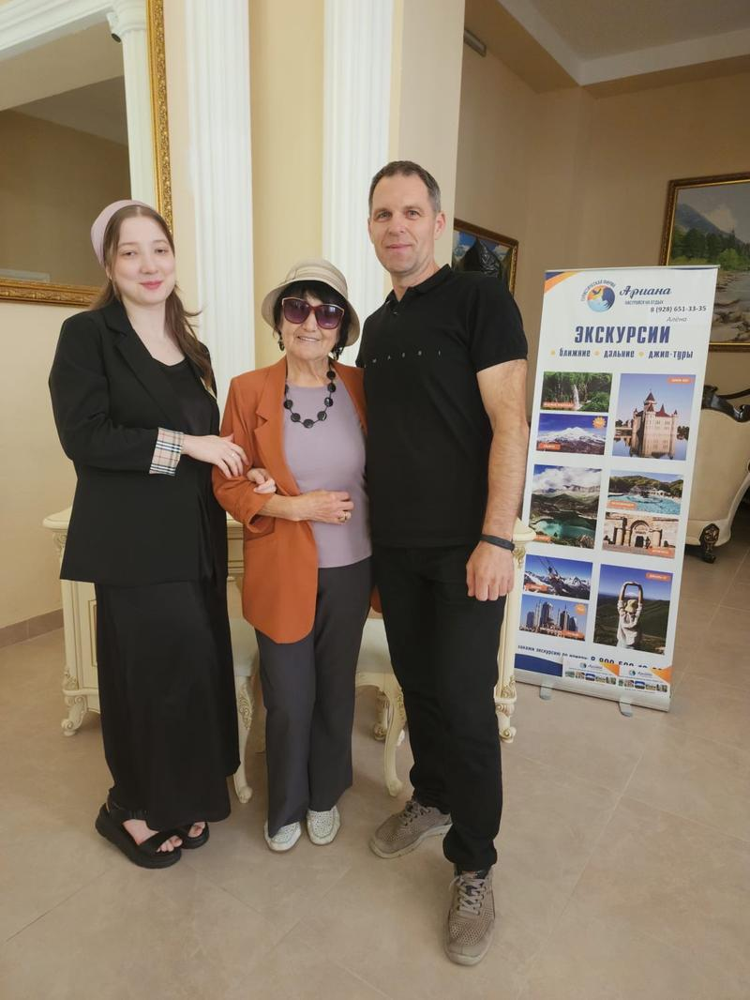
«« Н.А..ЯРОШЕНКО - РУССКИЙ ХУДОЖНИК- ПЕРЕДВИЖНИК»»
знаменито своим расположением, красивыми рассветами, ко-
торые дают ей название и видами на Эльбрус. Гора и ее окрест-
ности покрыты сосновыми и лиственными деревьями, созда-
вая живописный ландшафт. На вершине установлен памятник
М.Ю. Лермонтову работы скульптора Николая Ходока. Бронзо-
вая фигура молодого поэта в мундире и фуражке с кокардой
устремлена вперед, он задумчиво смотрит в даль в сторону дву-
главого Эльбруса. Он расположен так, чтобы посетители могли
любоваться Эльбрусом, который Лермонтов так часто воспевал
в своих стихах. «Как сладкую песню Отчизны своей, люблю я
Кавказ...» В этом своем произведении он пишет не только о
войнах и ссылках, он пишет о красоте и величии Кавказа.
В санатории я познакомилась с Ириной из Петербурга, це-
нителем творчества художника Н. Ярошенко, музей которому
расположен в самом центре Кисловодска по улице Ярошенко.
Музей охватывает всю территорию усадьбы Н. Ярошенко, сад,
парк и расположенные здесь мемориальные постройки. Тут мы
увидели работы Ярошенко, его личные вещи, а также посетили
живописный парк со старинными деревьями, где бывали из-
вестные гости, такие как Репин, Менделеев, Шаляпин и другие
знаменитости. Музей интересен не только как художественная
галерея, но и как место с богатой историей и атмосферой, со-
хранившей дух конца 18 века. Усадьба является популярной до-
стопримечательностью Кисловодска. Н.А..Ярошенко - русский
художник- передвижник, известный своими социальными и
психологическими портретами. Кисловодск был для него лю-
бимым местом в жизни. В своих картинах он показывал не-
справедливость и жизнь простых людей, его знаменитая кар-
тина «Всюду жизнь» - изображение арестантского вагона, в окне
которого люди кормят голубей, что символизирует способность
человечности и жизни сохраняться в нечеловеческих условиях.
Художник хочет показать, что даже среди заключенных есть ме-
сто доброте, любви и состраданию, и многие из них не закоре-
нелые злодеи, а несчастные жертвы обстоятельств, достойные
сочувствия.
Я благодарна Ирине за экскурсию и, конечно, моя большая
благодарность смотрителям этого удивительного места за то,
что они сохраняют наследие для нашего поколения ,за то что
берегут эту красоту… И я посмотрела много картин, но эта осо-
бенная.
Каждое утро, когда я выходила из отеля на прогулку, у стой-
ки отеля я часто встречала двух сотрудников, с которыми я по-
дружилась за время пребывания в санатории. Седочка, мене-
джер, молодая красивая девушка-чеченка, приехала из Грозно-
го, и работник отеля Ивица, он приехал из Сербии в 1992 году.
Он был строителем санатория «Целебный нарзан». В Сербию он
не вернулся. Здесь у него семья - 4 детей, из них одну девочку
он взял из детского дома. Он очень добрый человек и я всегда
чувствовала его поддержку и советы в отношении экскурсий и
жизни в санатории.
Здесь, в вестибюле санатория я познакомилась с менеджером
туристической фирмы «Ариадна», Еленой Юрьевной Куликов-
ской, уроженкой Кисловодска. Очень милая женщина с бога-
тым опытом в туризме (39 лет) и участница открытия многих
маршрутов на Кавказе. Она помогла организовать мои экскур-
сии в нормальном для меня режиме. Я очень благодарна этим
замечательным людям.
В начале проспекта Дзержинского находится памятник Фе-
ликсу Эдмундовичу Дзержинскому. Это место знаковое для ту-
ристов. Каждое утро он провожал меня своим твердым взгля-
дом в новое путешествие по Кавказу и я мысленно благодарила
его за этот надежный взгляд.
В автобусе я всегда чувствовала себя комфортно, так как си-
дела близко к водителю. Елена Юрьевна бронировала это ме-
сто на каждую мою поездку и я могла видеть весь обзор мест-
ности, по которой мы проезжали и чувствовать себя комфортно.
Мои экскурсии начались с Обзорной по Кисловодску, но к это-
му времени у меня уже было несколько маленьких экскурсий с
моей юной подружкой из Петербурга. Имя у нее такое же, как у
моей внучки – Виктория. В древнем мире это имя ассоциирова-
лось с богиней Победы, а сегодня оно означает силу, целе-
устремленность, хотя также может указывать на доброту и ра-
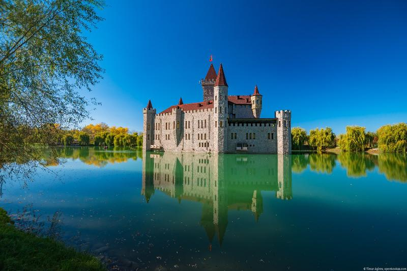
«« ЗАМОК ШАТО-ЭРКЕН»»
нимость. Интересно, имя одно, а столько может быть разных
прекрасных черт в характере. Она старше моей внучки, живет
в Петербурге, есть семья, взрослый сын Тимур. Вика отдыхала в
соседнем санатории. Я познакомилась с ней во время нашей
экскурсии в Кабардино-Балкарию, куда мы ездили смотреть
Замок Шато-Эркен и Голубое озеро.
Шато-Эркен построен по мотивам европейских средневеко-
вых замков между 2008 и 2012 годами на искусственном озере и
славится своей романтической архитектурой в средневековом
стиле. Шато - это винодельческое хозяйство, которое включает
в себя замок или поместье, виноградники, производственные
мощности для создания вина. У владельца этой винодельни,
Тамбулата Эркенова, идея создать замок появилась после его
путешествия по Франции, где он был впечатлен местным
Шато. Об этом нам рассказала наша экскурсовод. Замок кра-
сивый, сказочный, напоминает крепость. Им можно любоваться
бесконечно. Его архитектура с узкими окнами, остроконечны-
ми бастионами, смотровыми площадками с видом на Эльбрус и
мостом делает его очень живописным.
Мы не смогли побывать внутри этого здания, для этого
нужна была дополнительная экскурсия. Зато я была в замеча-
тельном месте Северного Кавказа у Голубого озера Церик-Кель.
Это голубое озеро в Кабардино-Балкарии знаменито своей глу-
биной, чистотой воды и легендами. Оно является одним из са-
мых глубоких карстовых озер в мире, вода в нем кристально-
прозрачная, имеет ярко голубой оттенок из за сероводорода,
глубина озера до 258 метров и просматривается на глубину бо-
лее 20 метров. Озеро не имеет впадающих рек, а питается
мощными подземными источниками. Вытекающий из него ру-
чей ежесуточно уносит около 70 миллионов литров воды, при
этом уровень воды в озере является неизменным, что является
еще одной загадкой для ученых. Из-за высокого содержания
сероводорода оно не замерзает зимой даже при низких темпе-
ратурах. Легенд много. Например, что на дне озера находится
то ли клад Тамерлана, то ли конница Александра Македонского,
то ли грузовик с портвейном. Легенда образования озера гла-
сит, что Бесстрашный воин Батраз сразил дракона, который
приносил много бед. Дракон упал на землю, создав глубокий
провал, который и стал озером. Считается, что оно наполняется
слезами чудовища, этим и объясняется его сероводородный
запах.
Легенда - это жанр несказанной прозы, представляющий
собой повествование о событиях которые, как считается, имели
место в истории. В ряде случаев прообразами героев легенд яв-
ляются реальные личности. Да, это так, поэтому и рождаются
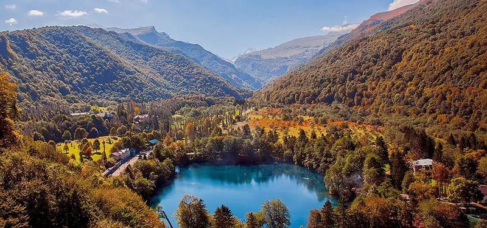
«« ГОЛУБОЕ ОЗЕРО ЦЕРИК-КЕЛЬ »»
легенды, которые передаются из поколения в поколение.
Наша экскурсия нашла продолжение в селе Верхняя Балка-
рия, где находится башня Абай Кала - достопримечательность с
древней историей, построенная в 17 веке князем Алимурзы
Абаевым в неспокойное время завоеваний и войн. Башня вы-
полняла сторожевые функции и использовалась для осмотра
окрестности, в ней постоянно проживали князь и его семья.
Вплоть до конца 19 века строение использовалось как жилое
помещение. На нижних этажах башни проживали представите-
ли рода Абаевых. Башня хорошо сохранилась до наших дней –
очевидно, что жилое здание гораздо позже приходит в ветхое
состояние. Любой дом жив до тех пор, пока в нем проживают
люди. Аул Кюннюм, где находится башня давно покинутый и
обжитый только горными ветрами. Дорога к башне была до-
ступна, но я не поднималась, а Виктория побывала там и сдела-
ла прекрасные снимки. После запланированных экскурсий у нас
было свободное время, чтобы посетить сувенирные лавки, ме-
ста местной продукции, где Вика купила себе шаль.
С экскурсии мы приехали вечером. Я думала о том, что
день был чудесным: знакомство с Кабардино-Балкарской рес-
публикой, ее природой, традициями и знакомство с Викой,
внимательной, с добрым сердцем – все настраивало на пози-
тивный лад.
Замок «Коварство и любовь» - природная скала возле Кисло-
водска, обрывистый мыс из известняка в живописном ущелье
реки Аликоновки, который издалека напоминает древнюю кре-
пость с башнями. Если хорошо присмотреться, то можно раз-
глядеть профили человеческих лиц. Существует легенды о до-
чери князя и пастухе, чья несчастная любовь дала название ме-
сту. Оттуда мы доехали до Медовых водопадов автобусом.
Медовые водопады - это группа из пяти живописных водо-
падов на реке Аликоновка недалеко от Кисловодска, район Ка-
рачаево-Черкессии, в 14-16 км от Кисловодска. По легенде, ди-
кие пчелы в скалах смывали мед в потоки, делая воду сладкой и
медового цвета. Согласно научным данным цвет может быть
вызван минеральными отложениями. Большой медовый - са-
мый высокий - 18 метров. Жемчужный - самый мощный, но
ниже Большого. Малый медовый - самый тихий, его еще назы-
вают Змейкой. Шумный также известен ,как Чертова мельница.
Медовые водопады - это место, где время останавливается, а
сердце наполняется радостью, когда потоки воды, падающие с
отвесных скал, покрытые зеленью создают эффектную панора-
му и облака водной пыли.
Как-то прогуливаясь по Кисловодску с Викторией недалеко
от ж/д вокзала среди вековых елей и сосен, мы увидели ориги-
нальный особняк в стиле модерн, известный тем, что в нем в
1914 году проживал Федор Шаляпин. Пожалуй, нет человека в
России, который бы не знал имени великого русского оперного
певца с мировым именем Ф.И. Шаляпина. Голос, ниспосланный
богом, царь-бас. Спустя десятилетия после его жизни потомки
хранят память о выдающемся певце в коллекция, музеях, до-
кументах. Вот одним их таких памятных мест, связанных с
именем артиста является дом-музей Ф.И. Шаляпина в Кис-
ловодске, который местные жители называют просто дача
Шаляпина. Это особняк в стиле модерн 1903 года постройки,
известен тем, что здесь жил и работал великий оперный певец
Федор Шаляпин. Он арендовал этот дом на непродолжительное
время и дача превращалась в музыкальный театральный салон.
Ценным экспонатом дачи Шаляпина является рояль, который
певец выиграл на музыкальном фестивале в 12 лет. Он находит-
ся в концертной гостиной, по словам экскурсовода, на нем до
сих пор звучит музыка. Здесь мы увидели его костюмы, фото-
графии, книги, грампластинки, услышали его голос. На терри-
тории дачи есть памятник, на котором он изображен со своей
любимой собачкой Булькой. Рядом скамейка, на которой мож-
но сфотографироваться рядом с великим артистом и написать:
я здесь была.
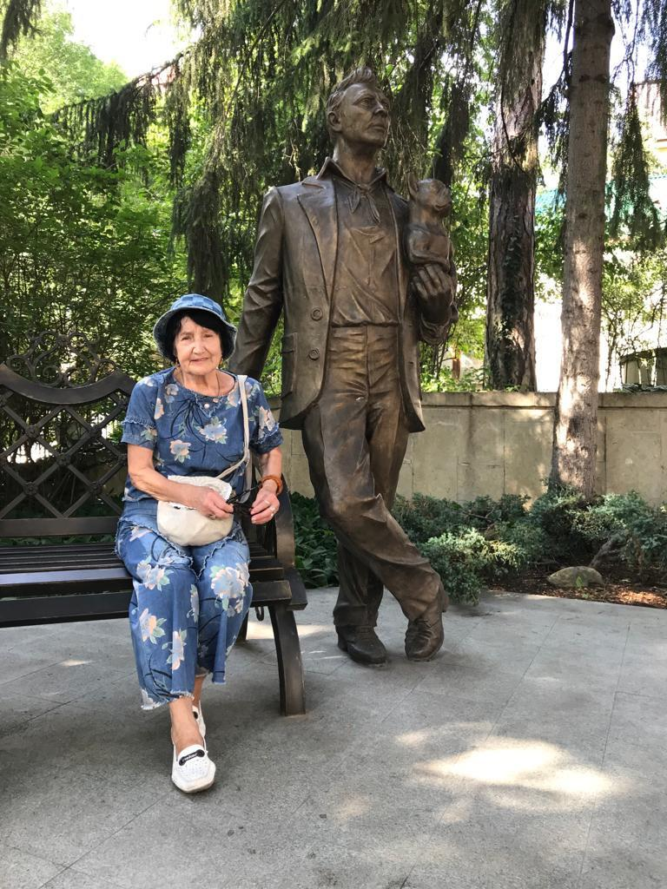
«« ФЕДОР ШАЛЯПИН »»
Ф.И. Шаляпин очень любил Кавказ. В своей автобиографии
он писал, что он родился дважды: для жизни - в Казани, а для
музыки - в Тифлисе, в городе, где он сделал первые шаги в му-
зыке. Есть известная фраза, которую говорили современники
певца Федора Шаляпина. Полная цитата звучит так: «В Москве
есть три чуда: Царь-Колокол, Царь-пушка и Царь-бас - Федор
Шаляпин». Это прозвище, отражающее величие и мощь его го-
лоса. Я узнала столько нового здесь...
После посещения дачи наша прогулка с Викой продолжа-
лась по национальному парку, где расположен источник нарза-
на - Нарзан галерея.
Источник Нарзана - это архитектурный памятник и баль-
неологическое сооружение, под стеклянным куполом которого
находятся источники целебной минеральной воды нарзан. Она
была построена для того, чтобы люди могли пить лечебную
воду прямо из источника, наслаждаться ее оздоровительным
эффектом, а также использовать ее для ванн и других процедур,
которые улучшают кровообращение и благотворно влияют на
работу сердца. Мы с Викой с удовольствием пили эту целебную
водичку из бумажных стаканчиков. Конечно, настроение было
отличное, мы даже героически преодолели каскадную лестницу
из 170 ступенек, высотой около 20 метров, украшенную фонта-
нами, клумбами и колоннадой. Очень красиво, когда она под-
свечивается разноцветными огнями.
Интересно, что название город Кисловодск получил благо-
даря изобилию целебных источников углекислой воды, извест-
ной, как нарзан. Это самый солнечный курорт России, здесь
около 300 солнечных дней в году, поэтому дожди идут в сред-
нем около 65 -75 дней в году.
Следующая моя экскурсия была в Минеральные воды и Ес-
сентуки с экскурсоводом. В Минеральных Водах есть несколь-
ко значимых храмов. Мы посетили Храм Николая Чудотворца -
там хранятся почитаемые чудотворные иконы. Этот храм яв-
ляется для города местом духовного и культурного значения.
Я купила там несколько иконок с изображением Николая Угод-
ника.
Следующая экскурсия – Ессентуки - город, расположенный в
предгорьях северного Кавказа, входит в регион Кавказских гор,
славится в первую очередь своими уникальными источниками.
Эти воды считаются одними из лучших для лечения заболева-
ний, особенно желудочно-кишечного тракта.
Храмовый комплекс Петра и Павла в Ессентуках. В ком-
плекс входят два храма, четыре часовни. Основная особен-
ность комплекса – 22-метровая статуя Христа Воскресшего.
Она является самой высокой статуей Иисуса Христа в России.
Храмовый комплекс Петра и Павла - это место, где традиции и
современность встречаются, создавая уникальную атмосферу
для всех, кто ее посещает.
Немного о Железноводске - это город называют Швейцарией
из-за мягкого климата и живописных горных пейзажей. Город
окружен горами, которые защищают его от сильных ветров. Он
славится уникальными горячими, железистыми водами и ста-
ринными достопримечательностями – такими, как Пушкинская
галерея.
Галерея является символом и визитной карточкой Желез-
новодска. А .С. Пушкин был в Железноводске однажды в 1820
году. Кавказ восхищал и вдохновлял поэта. На территории ку-
рортного парка есть памятник - его бюст, установленный на
постаменте. Пушкин был пленен красотой кавказской природы,
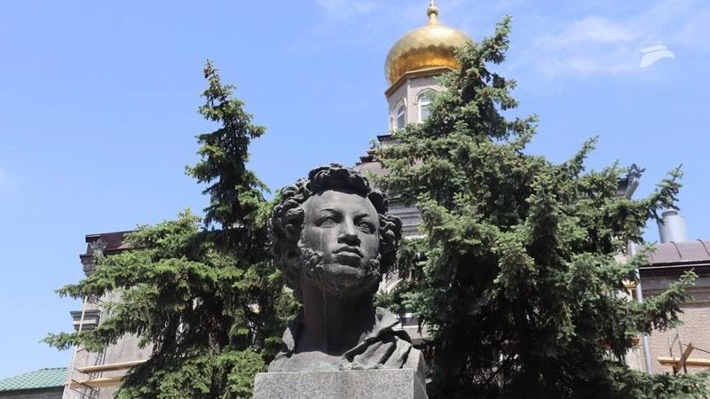
«« А .С. ПУШКИН БЫЛ В ЖЕЛЕЗНОВОДСКЕ В 1820 ГОДУ»»
которая находит отражение в его творчестве. Он был первым,
который описывал Кавказ по собственным наблюдениям, а его
визиты сюда сыграли большую роль в развитии курортного
региона...
Моя следующая экскурсия - в город Пятигорск. Это мине-
ральные источники, чистый горный воздух, головокружитель-
ные панорамы, природные ландшафты, самобытный кавказ-
ский колорит, обилие культурно - исторических достопримеча-
тельностей и Лермонтовские места. Город расположен у подно-
жия горы Машук. Это вулканический останец высотой 993 мет-
ра, являющийся символом города и важной природной досто-
примечательностью Кавказских минеральных вод. Именно на
склоне этой горы произошла дуэль, смертельно ранившая М.Ю.
Лермонтова.
Пятигорск вообще тесно связан с судьбой поэта. Он приез-
жал сюда еще ребенком, что повлияло на его мировоззрение.
Местные жители уважали Лермонтова за его смелость. Он был
отчаянно храбр, удивлял своей удалью даже старых кавказских
джигитов. Лермонтов часто повторял: «Люблю Кавказ», называл
этот край «мой Кавказ» и вдохновенно восклицал, что горы
Кавказа для него священны. Знаменитый роман «Герой нашего
времени» и особенно повесть «Княжна Мери» очень точно опи-
сывают жизнь Кавказских Минеральных вод того времени. Кав-
казу он посвяти многие стихотворения и поэмы: «Мцыри»,
«Демон», «Герой нашего времени» и другие.
Пишу и появляется желание, как в школьные годы перечи-
тывать стихи, поэмы, произведения Лермонтова, Пушкина. По-
эма «Мцыри» - о судьбе маленького горца, захваченного в плен,
где он вырастает и не смиряется с заточением, тоскует по ро-
дине и семье...
Памятник Лермонтову, установленный в 1889 году в Пяти-
горске, стал первым в России памятником поэту, и расположен
на месте его первоначального захоронения. Он представляет
собой бронзовую скульптуру поэта, сидящего у раскрытой кни-
ги. У его ног лежат символы его творчества - венок, лира и
перо. На пьедестале выбита надпись «М.Ю. Лермонтов» и дата
установки 16 августа 1889 года.
Мы были в доме музее, где М.Ю. Лермонтов провел два по-
следних месяца своей жизни, написав несколько стихотворе-
ний, в том числе: «Выхожу один я на дорогу», «Пророк», «Ли-
сток» и такие произведения, как «Сон», «Тамара» и «Морская
царевна», а также самое популярное стихотворение Лермонтова
– «Белеет парус одинокий».
Кавказ для Пушкина и Лермонтова был источником вдохно-
вения, местом служб и неотделимой частью их биографии и
творчества.
Пятигорск можно охарактеризовать, как город с богатой ис-
торией, живописной природой и лечебными источниками, ко-
торый привлекал великих писателей благодаря уникальному
сочетанию курортной жизни, кавказского колорита и вдохнов-
ляющих пейзажей. Сегодня Пятигорск - самый крупный город
Минеральных вод, здесь живут 210 тысяч человек.
Это деловой и административный центр, столица Северо-
Кавказского федерального округа.
Следующая моя экскурсия - Домбай.
Домбай переводится как «зубр» с карачаево-балкарского и
кабардино-черкесского языков, поскольку когда-то в этих ме-
стах было много этих животных.
Легенды связывают название с тем, что здесь был убит по-
следний зубр, поэтому название высочайшей вершины района
- Домбай-Ульген (4046 м) означает «убитый зубр». Также Дом-
бай называют Домбайской поляной или сердцем гор.
Домбай является популярным горнолыжным курортом с
трассами общей протяженностью около 30 километров на горе
Мусса-Ачитара. Горнолыжный сезон длится с декабря по апрель.
Домбай славится своими живописными горными пейзажам
и чистым воздухом,
многочисленными ущельями,
водопадами , ледниками. Работают канатные дороги, например,
первая очередь, поднимающая до высоты 2260 метров. Моя
мечта осуществилась -я поднималась в закрытой кабине.
Первый подъем - самый зрелищный. Домбай можно было
видеть только со склона горы Мусса - Ачитара. Эмоции зашк-

«« ДОМБАЙ»»
ливали - горы, виды, поляны цветов .На второй уровень я под-
нималась в кресельной открытой кабине. Погода резко измени-
лась - дождь со снегом в лицо, ветер. Можно было взять одежду
потеплее, но я решила, что у меня одежда теплая и, конечно,
очень замерзла в открытой кабине. На втором уровне я отогре-
валась в маленьком уютном кафе, где пила прекрасный обле-
пиховый чай и слушала песню «Домбайский вальс» Визбора…
«Гаснет закат за горой, горное солнце прощай. Мы навсегда со-
храним в сердце своем этот край... Снежные флаги разлук выве-
сил старый Домбай....»
Когда спускались в поселок, дождя уже не было. Я купила
сувениры и местное лекарство от простуды из еловых шишек,
привезла в Москву.
В санаторий вернулась поздно вечером. Все было замеча-
тельно, даже несмотря на то, что немножко не повезло с пого-
дой. Интересный тур, классный гид и столько свежего горного
воздуха.
Следующей моей экскурсией был Суворовский термальный
источник.
Это оздоровительный комплекс с четырьмя открытыми бас-
сейнами, который особенно живописен вечером благодаря не-
оновой подсветке и музыке. Он известен своей сероводородно-
щелочной минеральной водой, которая помогает при кожных,
сердечно - сосудистых, опорно-двигательных и других заболе-
ваниях. Вечернее посещение предполагает расслабляющую
атмосферу с приятной подсветкой и музыкой, а вода обладает
лечебными и косметическими свойствами, например делает
кожу гладкой и помогает снять стресс. Надеялась, что так и бу-
дет. Конечно, вечером комплекс преображался благодаря нео-
новой подсветке и музыке.
Суворовские термальные ванны - это место, где история
встречается с целебной силой природы... Но находиться в го-
рячем источнике можно не более 20 минут. Термальные ис-
точники называются Суворовскими по месту их расположения
в станице Суворовской, которая находится в Ставропольском
крае в районе Кавказских минеральный вод. Это название ука-
зывает на географическое происхождение, оно не связано с
именем русского полководца Суворова.
После купания в Суворовских водах уснула, едва коснувшись
подушки. Чудес на свете не бывает, оказывается есть.
Следующий день – монастыри: Второ-Афонский мужской
монастырь на горе Бештау вблизи Пятигорска и Свято-Георги-
евский женский монастырь, расположенный недалеко от Ессен-
туков.
По дороге к Второ-Афонскому мужскому монастырю мы
поднялись на гору Бештау - главную достопримечательность
территории Кавказских Минеральных Вод.
Дорога к монастырю была асфальтированной, поэтому вос-
хождение на гору Бештау было для меня не сложным. По пути
мы видели высеченные на скалах горы Бештау библейские ци-
таты, крест и, конечно, наслаждались свежим воздухом, пили
воду из источников с целебной минеральной водой.
Особенностью мужского монастыря стал летний храм под
открытым небом. На территории мужского монастыря есть
трехэтажные кельи в форме цилиндра, поклонный крест, возве-
денный Пятигорсками казаками в честь возрождения Храма,
редкие иконы и мощи преподобных Киево-Печерской лавры.
Свято-Георгиевский женский монастырь находится в Ессен-
туках, в урочище Дубровка, расположен на высоте более 700
метров над уровнем моря. На территории находятся две часов-
ни оригинальной формы и купальня, а с горы видны велико-
лепные пейзажи.
Особенно впечатлила смотровая площадка Свято-Георгиев-
ского женского монастыря, с которой открывается панорам-
ный вид на горы и леса Кавказа. Сам монастырь снаружи вы-
глядит очень представительно и роскошно, внутри удивляет
домашний уют, созданный сестрами и прихожанами. На терри-
тории находится лавка, где я смогла купить сувениры и обе-
реги для моих близких. В святых местах строго соблюдается
внешний вид: платок у меня был, а вот длинную юбку я брала у
входа в церковь. Благодать этих мест. дала мне мощный заряд
энергии. Конечно, мои мечты исполнялись - экскурсии почти
через день, климат отличный, утром - ходьба, упражнения, зав-
трак в ресторане, бутерброды с красной икрой.
Мне повезло - следующая экскурсия на Эльбрус была с Викой
в одном автобусе. Мы сидели с нею на переднем сидении.
Дзержинский, как всегда, проводил нас в путь добрым внима-
тельным взглядом.
Сначала был Чегет. Это знаменитая гора в Приэльбрусье,
популярное место для активного отдыха и экстремального
горнолыжного спорта с потрясающим видом и живописным
пешеходным маршрутом. Ее высота достигает 3769 метров, а
склоны славятся крутизной, что и привлекает опытных лыж-
ников .
Чегет расположен в самом сердце Кабардино-Балкарии. С
горы открывается знаменитый вид на Эльбрус и другие горные
вершины Кавказа. Мы поднимались на Чегет по канатной до-
роге, было тепло, солнечно. Открытые кабинки - свежий вете-
рок обдувал нас со всех сторон.

«« КАВКАЗСКИЕ ВЕРШИНЫ -ГОРА ЧЕГЕТ»»
Гора Чегет - это уникальное место, где сливаются воедино
величественные пейзажи и богатое биологическое разнообра-
зие. Здесь, среди Кавказских вершин, собирают лечебные травы
чабрец и мяту, яркие ягоды облепихи, а туристы-спортсмены
поднимаются пешком до самой верхней точки горы Чегет. У
нашей экскурсии здесь была остановка в уютном кафе, где мы
с Викой выпили по чашечке облепихового чая с очень вкусным
кусочком медового пирога. А на Чегенском базарчике у подно-
жия горы мы купили сувениры с символикой Эльбруса, вяза-
ные шапочки, а Вика взяла себе толстовку для дождливой пого-
ды в Петербурге.
Замешкавшись на рынке, мы чуть-чуть опоздали к назна-
ченному времени к автобусу, где нас ждала группа для подъема
на Эльбрус, с которого мы все дружно поехали покорять Эль-
брус...
Эльбрус расположен на границе Кабардино-Балкарии и Ка-
рачаево-Черкессии. Это спящий вулкан, который образовался
более 2,5 миллионов лет назад. Его высота составляет 5642 мет-
ра (западная вершина) и 5621 метров (восточная).
Характерные двуглавые вершины, горы, покрытые снегами
- это визитная карточка Северного Кавказа.
Его последнее извержение было около 2000 лет, его относят
к угасающим, но не полностью потухшим вулканам, о чем сви-
детельствуют подземные источники и минеральные воды. По
мнению ученых новый крупный выброс в ближайшие 200, 300
лет маловероятен.
Более 80 ледников покрывают склоны горы, давая начало
рекам Кубань, Малка и Баксан. Он является популярным цен-
тром альпинизма горнолыжного туризма и местом для отдыха
благодаря своей природной красоте и развитой инфраструкту-
ре.
Эльбрус причисляют к одним из семи высочайших вершин
планеты. Это гора богов, героев, сотни раз воспетая в поэмах,
сказаниях, изображенная на полотнах художников, выступаю-
щая объектом покорения мужественных альпинистов. С вер-
шины Эльбруса открывается вид на Кавказский хребет, а в яс-
ную погоду можно увидеть Черное Море. Мы поднимались по
канатной дороге к Эльбрусу, которая включала три подъема.
Первая очередь - на гондольной канатной дороге Рома 1 (в ка-
бине 8 человек, время подъема 5 минут) поднялись на высоту

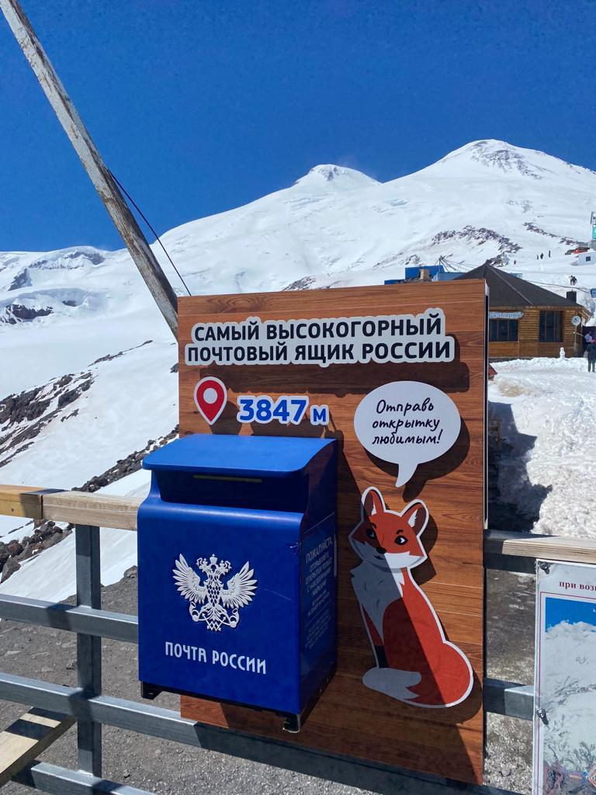
«« САМЫЙ ВЫСОКОГОРНЫЙ ПОЧТОВЫЙ ЯЩИК РОССИИ»»
3000 метров над уровнем моря на станцию Кругозор. Вторая
очередь подъема - гондольная канатная дорога Рома 2 - стан-
ция Мир (в кабине 8 человек, 3500 метров, 5 минут). Самочув-
ствие мое было нормальное. Третий взлет - станция Гара-Баши
(высота 3847, в кабине 8 человек).
Здесь самый высокогорный почтовый ящик России. Дальше
мы не ехали. Любуюсь снегом - это было так необычно - внизу
лето, а здесь снег, зима. Конечно, мы чувствовали себя победи-
телями, но до тех высот, куда уходили снегоходы и лыжники,
было далеко. У меня было приятное ощущение от того, что вы-
соту 3847 над уровнем моря я смогла преодолеть, хотя моя гид
предлагала мне остаться на втором уровне. Но у меня получи-
лось, сбылась моя мечта!
С Викой мы играли в снежки, наслаждаясь белым снегом.
Температура была минус 8. На этой высоте 3847 метров на
Эльбрусе всегда лежит снег и зима независимо от времени года.
Даже летом необходимо тепло одеваться, брать солнечные
очки и крем от загара. На высоте может возникнуть кислород-
ное голодание или другие проблемы с сердечно-сосудистой си-
стемой. При ухудшении самочувствия - немедленно спускаться
по канатной дороге.. Со мной было все в порядке. Насладив-
шись свежим ветерком, холодным снегом в ладонях, мы с Ви-
кой опустились на станцию Мир, где за обыкновенным столи-
ком устроили маленький пикник с вкусной едой и коньяком
(чуть-чуть), чувствуя себя покорителями, ощущая чувство глу-
бокого удовлетворения и радости.
Из истории: для того чтобы продолжать подниматься на
вершины Эльбруса нужен хороший уровень физической подго-
товки и опыт восхождения в горы. Ежегодно на Эльбрус под-
нимаются от 15 до 30 тысяч любителей. В сезон на южном
маршруте в день восходят 400-500 человек. Также восхождение
доступно и для не очень подготовленных людей благодаря раз-
витой инфраструктуре, канатным дорогам, но не стоит забы-
вать, что гора все равно остается опасной и требует серьезной
подготовки, акклиматизации и, как правило, сопровождения
гида даже на самом простом маршруте.
В санаторий вернулась уставшей, но с чувством: я покорила
Эльбрус! Ну, почти... И пусть техническую часть работы взяла
на себя кабинная канатная дорога, мои эмоции были самыми
что ни есть чемпионскими. Это была победа над собой. Это был
миг. Но он принадлежал только мне...
Вика улетала через два дня. У меня были еще две экскурсии:
в Грозный и Джилы-Су, а у Вики катание на лошадях.
16 июля она улетела, а накануне мы встретились с нею в
кофейне, пили напитки на террасе, обдуваемой вечерней све-
жей прохладой и гуляли по прогулочным улочкам, стояли у
скульптурной композиции «Подписание рескрипта», посвя-
щенной историческому моменту основания города и призна-
нию Кавказских минеральных вод курортом государственного
значения от 24 апреля 1803 года. Центральная фигура этой
композиции - император Александр Первый, в группе изобра-
женных - его подчиненные. На столе перед Императором лежит
лист, символизирующий тот исторический документ.
Бронзовые фигуры выполнены в натуральную величину,
что позволило нам буквально стать участниками историческо-
го события, сделать несколько кадров на память.
Позже, когда наши встречи с Викой в Кисловодске стали
воспоминаниями и мы находились с нею в разных странах, мы
писали письма друг другу по электронной почте и вспоминали
наши короткие прогулки, каскадную лестницу, визитную кар-
точку Кисловодска, украшенную водопадами, Местный Арбат,
сердце город с историческими зданиями, Долиной роз и сим-
волом Кавказа - орлом на скале.
Интересно, что Символ орла олицетворяет победу здоровья
над недугами и силу Кавказских Минеральных вод. Согласно
местной легенде орел, ужаленный змеей, исцеляется в целеб-
ном нарзане, который также символизирует мощь, свободу и
гордость Кавказа. Скульптура орла находится почти во всех го-
родах Кисловодска.
На следующий день у меня была экскурсия в Грозный.
Очень рано в 6 утра я была у памятника Дзержинскому.
Елена договорилась о моем переднем сидении - идеальное ме-
сто, чтобы охватить взглядом весь мир за окном, будто в каби-
не пилота, только с видом на природу.
Вспомнился полет к моему младшему сыну Олегу в Черский,
когда я летела в кабине маленького самолета в далекие девяно-
стые годы, куда он был направлен как молодой специалист по-
сле окончания Выборгского летного училища. Я летела туда
маленьким самолетом из Якутска на Черский.
Черский был закрытым городом - сейчас не знаю, а тогда
нужен был пропуск, но мне как-то удалось приземлиться и вы-
лететь оттуда без пропуска.
Черский называют Воротами в Арктику. Поселок расположен
в нижнем течении реки Колымы. Свое название поселок полу-
чил в честь выдающегося геолога и географа И.Д. Черского в
1892. Северное сияние, бесконечная тундра, горы. Красиво.

«« ОЛЕГ, НА ПЕРЕПОДГОТОВКЕ»»
Почему я вспомнила этот полет к сыну в Черский? Навер-
ное, потому что поездка по Кавказу - это постоянное ощущение,
что горы давят сверху, как будто находишься в иллюминаторе
маленького самолета. И еще потому, что Верхоянский хребет,
Хребет Черского, Омский хребет и другие горы, которые хорошо
видны были в иллюминаторах самолета, оставались белыми,
они были покрыты снегом, как и горы Кавказа. И хотя здесь, на
Кавказе, я не летела над облаками я была на земле, но ощуще-
ние полета не покидало меня.
Отдых у меня на Кавказе был насыщенный, дни пролетали
быстро.
Поездка в Грозный стала для меня одной из ярких точек
моих маршрутов по Кавказу.
Грозный, столица Чеченской республики - город с драмати-
ческой историей, основанный как русская военная крепость в
1818 году генералом Ермоловым. В настоящее время совре-
менный благоустроенный мегаполис с небоскребами, мечетя-
ми и развитой инфраструктурой, известный высоким уровнем
безопасности и гостеприимством. Визитные карточки - небо-
скребы комплекса Грозный-Сити, величественная мечеть Серд-
це Чечни.
Грозный поразил меня своей чистотой, радушием, помо-
щью показать лучшие мест, свои традиции. Прежде чем зайти в
Мечеть Сердце Чечни, здесь мы переоделись в длинные пла-
тья, платок на голове, носки на ногах. Мечеть Сердце Чечни
имени Ахмата Кадырова, Первого Президента Чеченской Рес-
публики, - одна из крупнейших в России и Европе, открыта в
2008 году. Она поражает роскошью и размерами, вмещает ты-
сячи верующих, имеет высокие минареты, украшена золотом,
мрамором, кристаллами. Мы также поднимались на современ-
ный комплекс Грозный-сити из семи башен в центре города на
берегу реки Сунжа. В 15 км от Грозного наша экскурсия про-
должалась в городе Аргун, где мы были в Мечети Сердце мате-
ри имени Аймани Кадыровой.
Это ультрасовременное религиозное сооружение, открытое
в 2014 году, уникальное для России, названо в честь матери
Рамзана Кадырова. Оно поражает динамичным освещением:
стены меняют цвет в зависимости от погоды, ночью сияет раз-
ноцветными огнями, подчеркивая уникальность мраморных
стен, огромного купола и 31-метровой люстры-полумесяца.
Здесь, в Аргуне, есть замечательный цветочный парк - попу-
лярное место для прогулок, украшенное цветами, фонтана-
ми и зеленью. Мы всей группой прогулялись по ней. Обедали
мы в огромном спортивном кафе, еда была вкусной и цена в
пределах разумного.
В современном Грозном уважают древние традиции и я по-
чувствовала, что местные жители предлагают гостям республи-
ки самое лучшее. Позже, когда меня поезд увозил из Кисловод-
ска в Москву в моем купе я познакомилась с двумя женщинами-
чеченками из Грозного, их имена - Белла и Фатима. Я делилась с
ними впечатлениями о Грозном и узнавала от них некоторые
подробности из жизни чеченского народа. Интересно, в этой
стране имеются прекрасные традиции: помощь бедным - один
раз в неделю богатые люди приходят в магазины и закупают
еду, одежду для бедных, алкоголь не продается местным жите-
лям, в городах проводятся субботники, в стране нет детских до-
мов, нет беспризорных детей. Интересно, что время привет-
ствия у чеченцев зависит от времени суток и все они означают:
«Да будет хорошим твой день, утро, вечер». Об уважительном
отношении к женщине свидетельствует, например, такой обы-
чай, как приветствовать женщину стоя.
За один день на автобусе я преодолела почти 700 км туда и
обратно, интересно, что сам путь был в Чеченскую Республику
через Республики: Кабардино-Балкарская, Северная Осетия,

«« КОМПЛЕКС ГРОЗНЫЙ-СИТИ»»
Алания и Республику Ингушетия. Вокруг было столько красоты.
В дороге я была более 10 часов и вернулась немного устав-
шей, но с теплыми воспоминаниями о традициях и гостепри-
имстве этой маленькой республики.
Через день я уезжала в новую поездку не на автобусе, а на
джипе, вместимостью 6 человек с водителем-гидом в Джылы-
Су. Это Кабардино - Балкария. Из Кисловодска до Джылы-Су мы
доехали примерно за 3 часа, преодолев расстояние около 85 км.
Дорога - в основном асфальтированная трасса с живописными
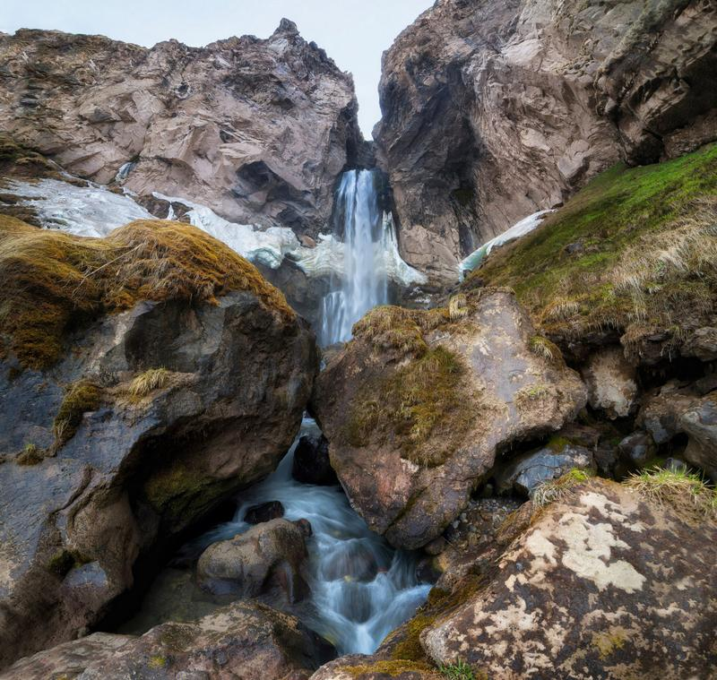
«« ДЖИЛЫ-СУ - УНИКАЛЬНЫЕ ИСТОЧНИКИ, ГОРЯЧИЕ НАРЗАНЫ»»
серпантинами, спусками и подъемами. Мое место было впереди
и я чувствовала себя превосходно. Как рассказал нам гид, Джи-
лы-Су переводится с карачаево-балкарского как «теплая вода».
Это не только долина с холмами, но и вся трасса от Кисловод-
ска. Вокруг нее лежат цветочные поляны, бархатные зеленые
холмы, а впереди смотрит Синий Эльбрус, загляденье. Урочище
находится в Северном Приэльбрусье. Под словом урочище
скрывается горная местность, где высота над уровнем моря до-
стигает 2550 метров, а законы погоды здесь те же, что и в дру-
гих горах на Кавказе. Здесь часто идут дожди, может случиться
даже снег, и погода в Джилы-Су меняется по несколько раз на
день. Нам повезло - дождя не было, но было свежо и курточка
мне тоже пригодилась.
Популярная достопримечательность Джилы-Су - уникаль-
ные источники, горячие нарзаны, которые бьют из-под земли,
подогреваемые недрами Эльбруса. Вода считается лечебной,
помогает при проблемах с печенью, ЖКТ, суставами, нервной
системой, выводит шлаки, укрепляет иммунитет. Я подумала о
своих близких, друзьях, зная их недуги - им бы хорошо приез-
жать сюда для лечения, так как источники бесплатные и до-
ступны круглый год. Здесь 4 знаменитых водопада, самый вы-
сокий и шумный из которых – Султан.
Его громогласный рокот доносится издали, а окружающие
его скалы напоминают разноцветный цветной торт. Все они
знамениты своей мощью, красотой, необычным цветом воды и
скал, а также расположением в живописной долине у подножия
Эльбруса. Особенно популярным и известным местом являет-
ся Долина сусликов. Местные суслики очень ручные - привыкли
к людям и активно выходят на контакт, что делает их кормежку
развлечением.
По дороге в Джилы-Су мы встретили небольшое ущелье
Кала-Кулак, которое экскурсоводы романтично называют До-
лина замков. Акульи или драконьи зубы - в балке Кала-Кулак
необычная достопримечательность. Огромные заостренные ва-
луны действительно расположены так, что напоминают че-
люсть древнего огнедышащего монстра. На самом деле, как
выяснили ученые, возраст останков - два миллиона лет. Оказа-
лось, это вовсе не костные окаменелости, а остатки застывшей
магмы, которую выбрасывал из кратера свирепствующий кав-
казский исполин. Но не все гости и местные жители считают,
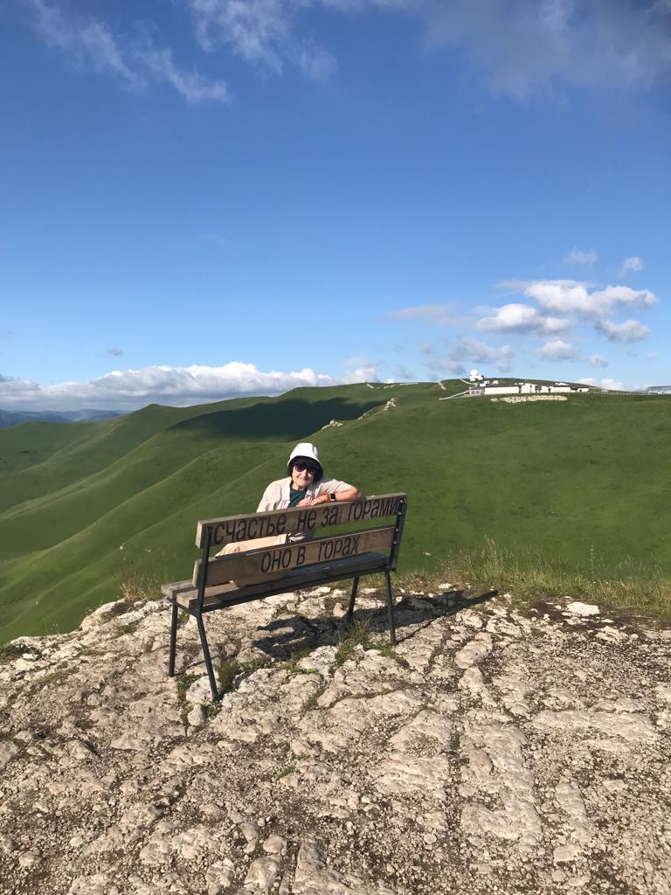
что это зубы дракона. Многие хотят видеть в каменных валунах
высотой от 15 до 25 метров остатки старинного замка. Гид рас-
сказывала, что здесь любой местный житель всегда охотно под-
скажет дорогу - им хорошо известно и про драконьи зубы, и про
«« МОИ ПУТЕШЕСТВИЯ ПО КАВКАЗУ ЗАКОНЧИЛИСЬ»»
долину замков. К камням с солидным летоисчислением горцы
относятся уважительно, ведь они хранят историю древних ро-
дов. Здесь я также видела бассейны природной минеральной
водой прямо под открытым небом. Сюда ехали и шли пешком,
чтобы излечиться от недугов. Термальные источники бьют из-
под земли в любое время года, сохраняя температуру 22-24 гра-
дуса. В нашу программу экскурсии купание не входило.
Мои путешествия по Кавказу закончились, завтра я уеду в
Москву. Поездка на Кавказ была для меня не просто отдыхом, а
возможностью насладиться природной красотой Кавказа. Сча-
стье не за горами, счастье - в горах. Да , действительно счастье
в горах, когда испытываешь уважение к себе за способность
быть здесь.
Путешествие на теплоходе «Маленький Принц»
После Кисловодска я пробыла в семье Андрюши несколько
дней и отправилась в новое путешествие по Волге в круиз, ко-
торый мне заранее купил Андрюша. Стоимость 130 тысяч руб-
лей - это почти три мои месячные пенсии в России. Сынуля,
спасибо за этот подарок!
На теплоходе со сказочным названием «Маленький принц»
наш маршрут лежал по Волге по городам Золотого кольца. Вол-
га - самая большая и полноводная река Европы, длина водного
объекта составляет 3690 км2. На своем пути река собирает в
себе силу более 200 больших и малых притоков, самые крупные
и известные из которых - Кама и Ока. Волгу не зря называют
матушкой. Она всегда была богата рыбой и кормила поселения.
На Северный речной вокзал мы приехали с Андрюшей на
такси.
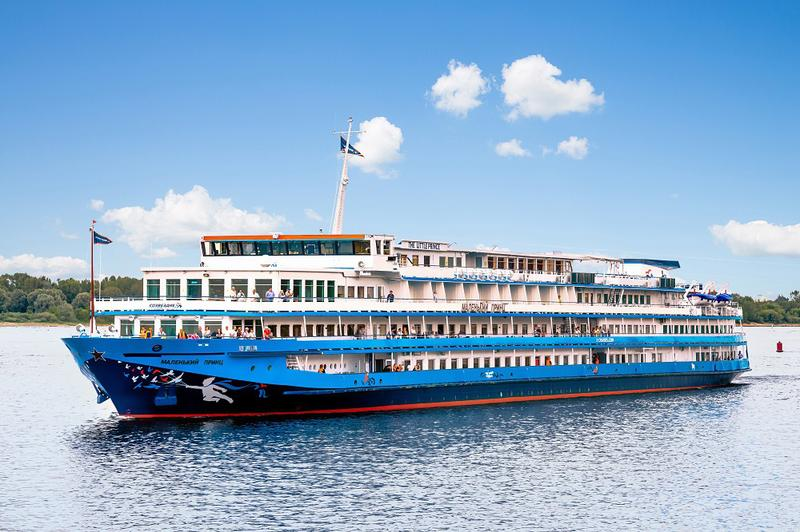
«« МАЛЕНЬКИЙ ПРИНЦ»»
«Маленький принц» - это современный четырехпалубный
теплоход для семейного и комфортного отдыха, предлагаю-
щий насыщенную программу и уютные условия вместимостью
около 232-262 пассажиров. Каюты на палубе - с балконами, со
всеми удобствами. У меня каюта на нижней палубе, двухмест-
ная . Я была одна. Хотелось бы поплавать с кем-то из родствен-
ников или друзей, но у всех свои планы. На борту шведский
стол на завтрак, заказное меню - на обед и ужин. На теплоходе
много развлечений на любой вкус и возраст - здесь есть все: от
увлекательных шоу и вечеринок до активного отдыха, включая
насыщенную спортивную программу, йогу, пилатес. Пилатес -
это методика упражнений, которые помогают улучшить
осанку, координацию, силу и гибкость и часто используются для
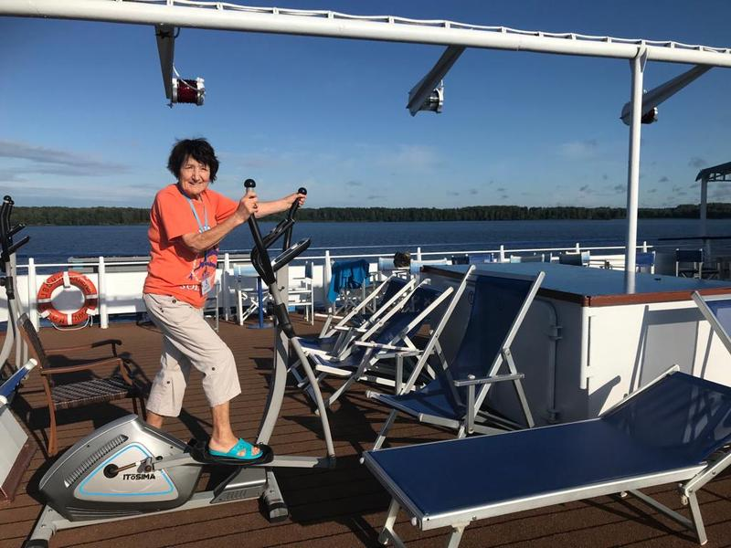
«« НАСЫЩЕННАЯ СПОРТИВНАЯ ПРОГРАММА»»
реабилитации после травм, названа по имени изобретателя
Иосифа Пилатеса. Я предпочитаю не классическую йогу, а ком-
плекс из пяти тибетских ритуалов. В них основой являются
правильная техника и дыхание – глубокое, ритмичное. Кроме
этого для меня это самодисциплина, которая формирует при-
вычку к регулярной активности и укрепляет силу воли. Здесь на
протяжении 7 дней я занималась, а также работала ногами на
велотренажере. Мне очень нравилось это делать на верхней па-
лубе, где я часто встречала восход солнца. И, конечно, ходьба по
утрам - в течении 45 минут я обходила четырехпалубный тепло-
ход несколько раз. Я также кратко познакомилась с историей
названия теплохода «Маленький принц» по одноименной зна-
менитой повести Антуана де Сент-Экзюпери. Книгу я не чита-
ла.Но его крылатые выражения иногда встречала: «Зорко одно
лишь сердце» или «Ты навсегда в ответе за тех, кого приручил».
Название теплохода призвано создать на борту особую атмо-
сферу - не просто круиз, а путешествие с глубоким смыслом для
каждого пассажира любого возраста. Экзюпери писал: «Все
взрослые сначала были детьми, только мало кто из них об этом
помнит». Выбор названия теплохода от философской притче о
маленьком принце, странствующем по Вселенной, символизи-
рует любопытство, чистоту и мудрость…
Первый мой день начался знакомством с каютой под номе-
ром 212 и получения вестника. Это информационный бюлле-
тень, который выпускается компанией «Созвездие» и содержит
расписание дня, информацию о мероприятиях, экскурсиях,
меню ресторана, создавая атмосферу домашнего уюта в плава-
нии. Ежедневно вечером я получала такой вестник, прикреп-
ленный к двери моей каюты... Семидневный круиз на теплохо-
де «Маленький принц» был первым в моей жизни по длитель-
ности плавания. В моей жизни были только небольшие экскур-
сии по несколько часов на маленьких речных пароходах по
Москве реке с Андрюшей и его семьей, откуда я могла видеть
Кремль, Храм Христа Спасителя, Парк Горького, Памятник Пет-
ру Первому, Зарядье, Сталинские высотки.
Когда я была в гостях у Олега в Австралии, мы выезжали в
маленькое путешествие по реке Брисбен с питанием, развле-
чениями, живой музыкой и панорамными видами на город,
включая Ботанический сад и Южный берег, являющийся симво-
лом отдыха и австралийского образа жизни.
В 2021 году я ездила к приятельнице в Веллингтон на боль-
шом курсирующем пароме между Пиктоном и Веллингтоном.
Там было 7 палуб (в том числе грузовые) с каютами, рестора-
нами и открытыми зонами отдыха. По высоте его можно срав-
нить с 12-этажным зданием. Пиктон - Веллингтон в Новой Зе-
ландии - это не паром, а морское судно, которое соединяет два
острова - Северный и Южный, предлагая удобный способ пере-
сечения пролива Кука, который занимает по времени около 3-
3.5 часов. В самом проливе Кука море было неспокойным. Мно-
гие пассажиры страдали морской болезнью, но я перенесла этот
период спокойно. На обратном пути моего возвращения из Вел-
лингтона море было мирным и все пассажиры были в прекрас-
ном настроении - пили кофе, читали газеты, наслаждались
волнами моря, его голубым цветом.
Круиз по Волге напомнил мне мои поездки по реке Алдан на
речном быстроходном катере «Заря», когда я жила несколько
лет в маленьком шахтерском поселке Джебарики-Хая и по ра-
боте часто выезжала на этом катере в районный поселок
Хандыга. Река Алдан - крупнейший правый приток Лены,
длинная и полноводная река 2273 км, протекающая через Яку-
тию. Катер «Заря» - это быстроходный речной пассажирский
катер, отличавшийся скользящим корпусом по воде со скоро-
стью 40-45 км, что позволяло ему ходить по рекам и достав-
лять пассажиров в отдаленные районы. Я с ностальгией вспо-
минаю те времена, мои речные прогулки по реке Алдан, когда
катер летел по волнам реки со скоростью птицы, а я смотрела
с воды на берег и создавалось ощущение, что тайга живет своей
водной жизнью, невидимой с суши, а берег с воды казался кар-
тиной, написанной другими красками. У меня была гармония в
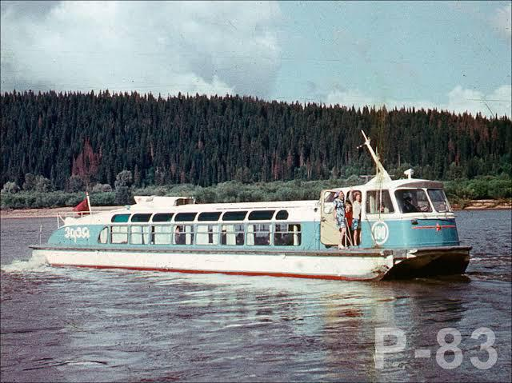
«« ЗАРЯ, БЫСТРОХОДНЫЙ КАТЕР»»
душе с живыми картинами природы сурового Севера, но это
было тогда очень давно .…
Во второй день моего путешествия на «Маленьком принце»
мы прибыли в Углич.
Углич - один из старейших городов России на Волге, осно-
ванный по преданию в 937 году. Он входит в состав Золотого
кольца и знаменит прежде всего своими историческими со-
бытиями и развитым производством продуктов питания. Он
является колыбелью российского промышленного сыроваре-
ния. Сыры Угличский и Пошехонский известны по всей стране.
Сыры очень вкусные, в конце экскурсии я имела возможность
купить их. В Угличе множество церквей, главными церквями и
соборами являются: Церковь Димитрия царевича “ на крови “,
Спасо-Преображенский Собор, расположенный на территории
Кремля. Эта церковь была построена в конце 17 века 1692 год
на месте трагической гибели последнего сына Ивана четвер-
того Грозного, царевича Димитрия. Здание имеет ярко-крас-
ные стены, символизирующие пролитую кровь царевича, бе-
лые декоративные купола и пять синих куполов с золотыми
звездами. Сейчас здесь можно увидеть реликвии, связанные с
царевичем и сосланный в Сибирь колокол. С этим колоколом
связана целая история. В 1591году 15 мая колокол своим зво-
ном известил жителей Углича о смерти царевича Дмитрия, тем
самым спровоцировав народное восстание и самосуд над пред-
полагаемыми убийцами. По приказу Бориса Годунова колокол
был казнен как неодушевленный соучастник бунта. Ему отсекли
язык, отрубили ухо и принародно наказали 12 ударами плетей
на площади. После казни колокол был сослан в сибирский го-
род Тобольск, где он пробыл около 300 лет. В 1892 году колокол
был помилован Императором Александром Третьим и воз-
вращен. Это уникальный случай наказания неодушевленного
предмета.
Сегодня на эту историю можно реагировать, как на символ
примирения и долгого пути к справедливости. Это предание –
история, передающаяся из поколения в поколение
Наша экскурсия продолжалась в Спасо-Преображенском
соборе - это кафедральный храм и главная архитектурная до-
минанта Кремля в Угличе. Это огромное здание было возведено
в 1706-1713 годах на месте более ранних храмов деревянного 13
века и каменного 15 века. Собор является частью государствен-
ного музея - заповедника в городе Углич и открыт для посеще-
ния. В нем также проводятся богослужения. Иконостас собора -
это выдающийся памятник русского церковного искусства се-
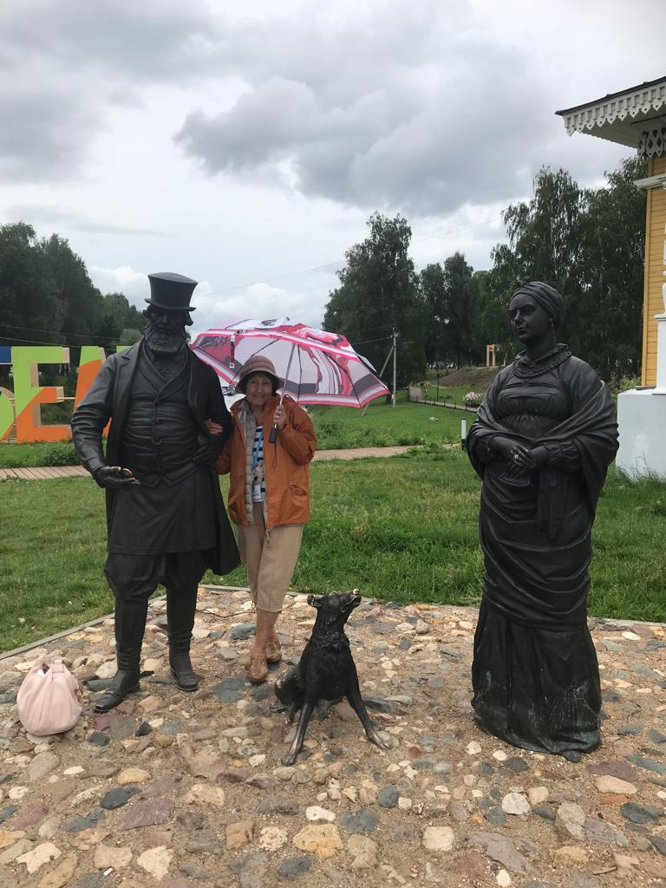
«« ГОРОД МЫШКИН»»
редины 19 века, выполненный в стиле барокко. Он имеет около
60 древних икон. Большинство из них являются старинными и
датируются 17 и18 веками. Побывать в этом соборе - редкая
удача и уникальный момент в моей биографии.
Город Мышкин был следующим городом, в котором мы со-
шли на берег. Это очаровательный и очень маленький городок
в Ярославской области на берегу Волги, население по данным
2021 года - 5621 человек. Жителей называют Мышкиными. На-
звание города Мышкин происходит согласно легенде от ма-
ленькой полевой мыши, которая спасла князя Ф И. Мстислав-
ского от укуса змеи, пока он спал. Князь, благодарный за чудо,
построил на этом месте часовню, вокруг которой возник го-
род, получивший имя от этого события. В 1927 году Мышкин
утратил статус города и стал селом Мышкино, но уже в 1991
году историческое название и городской статус были возвра-
щены, а в городе открылся уникальный Музей мыши и Музей
валенок.
Музей Мыши стал визитной карточкой города благодаря
легенде о князе и мышке. Наша экскурсия началась с него. Это
единственный в мире музей, посвященный мышам. Здесь со-
здана огромная коллекция игрушечных сувенирных и художе-
ственных мышей со всего мира. Коллекция музея постоянно
пополняется благодаря подаркам посетителей. Жаль, я не зна-
ла ничего об этой традиции, я бы могла тоже привезти сувенир
с изображением мышки.
В Мышкиных палатах нас встретили стражники. Там мы
встретили Мышиного царя с царицей, а также зверинец с жи-
выми грызунами. Это не научная коллекция, а скорее мышиное
царство с домашними мышами. Живые мышки живут в краси-
вых домиках, создавая волшебную атмосферу для детей, да и
для взрослых тоже. Это не типичный музей, а уникальное про-
странство, создающее неповторимое настроение. Да, я думаю,
это место для отдыха душой, где можно отвлечься от повсе-
дневности.
Наша экскурсия продолжилась в Музее Русских валенок и
льна. Мы ознакомились с коллекцией старинной и современной
обуви. Здесь можно было приобрести валенки ручной работы,
наверное, на севере они бы мне пригодились. В музее представ-
лена экспозиция, посвященная традиционному процессу пре-
вращения льняного семечка в готовое полотно, старинные ин-
струменты, прялка и ткацкий станок (некоторые из них в дей-
ствии),много готовой одежды из льна. Этот небольшой музей
занимает 10-15 минут по времени, но экскурсия делает посе-
щение очень интересным, на память я купила льняные салфет-
ки. Мышкин оставил после себя позитивное, светлое и очень
русское впечатление, наполненное теплом и очарованием ма-
ленького чуда.
После городов Углич и Мышкин наш теплоход «Маленький
принц» прибыл в город Кострома. Наша экскурсия была в Свя-
то-Троицком Ипатьевском мужском монастыре, одной из глав-
ных святынь России и колыбель дома Романовых, где юный
Михаил Романов был призван на царство в 1613 году, положив.
начало династии Романовых, правивших Россией 300 лет.
Сегодня это музей-заповедник и действующий мужской
монастырь, входящий в Золотое кольцо России, известный сво-
ей богатой историей, архитектурой, Троицким собором, пала-
тами Романовых , звонницей, музеями, усыпальницей Годуно-
вых. Здесь хранятся чудотворные иконы и реликвии. Дей-
ствующий мужской монастырь является важным объектом
культурного наследия с чтимыми святынями, включая Тих-
винскую чудотворную икону Божьей матери.
Потрясающая архитектура, золотые купола на фоне голубого
неба, тишина и благодать, несмотря на обилие туристов. Очень
величественное красивое место. Конечно, это не просто храм, а
исторический памятник с мощной энергетикой, хранящий па-
мять о Годуновых, Романовых и важных событиях России,
оставляющий ощущение прикосновения к русской истории и
духовности.
Наша экскурсия продолжалась в музее деревянного зодче-
ства. Здесь его называют Костромская слобода или музеем под
открытым небом, где мы посмотрели старинные церкви, жи-
лые постройки, перевезенные из разных районов Костромской
области. Экскурсовод рассказала о жизни и традициях русско-
го народа и о том, как строились дома без единого гвоздя. Из-
вестна уникальная Петровская глиняная игрушка-свистулька -
ее я купила, привезла в Москву для Егора.
Я была в церкви Воскресения Христова на Дебри в Костро-
ме. Это выдающийся памятник Русской архитектуры 17 века и
единственный сохранившийся посадский храм того времени.
Внутри свод поддерживают два массивных четырехугольных
столба. Отличительной чертой являются медальоны с загадоч-
ными сюжетами и обилием света, идущего сверху из восьми
окон. Интересно, что сам город Кострома иногда называют за-
бытым в переносном смысле, как место, где время словно оста-
новилось, сохранив провинциальный уют и архитектуру 17- 19
веков, контрастирующую с современным мегополисом. Со-
временная Кострома - это крупный промышленный центр на
Волге с населением более 250 тысяч человек. Кострома поко-
рила меня, но времени было мало, может, еще приеду, а может,
мои близкие будут здесь и посмотрят то, что я не успела.
Наш пароход уходил из Костромы вечером. Ниже Костро-
мы Волга постепенно расширяется - проплывали мимо горо-
дов Плес (самый живописный город на Волге), Кинешма (ста-
ринный купеческий город с сохранившейся застройкой 19
века). Этот отрезок пути считается одним из самых культурно
насыщенных участков Верхней Волги, объединяющий историю
Древней Руси и купеческое наследие Поволжья. Мне повезло
проехать здесь на «Маленьком Принце», так как именно ком-
пания «Созвездие» использует этот маршрут в летнее время.
Утром 26 июля мы прибыли в город Городец, порт Галанин в
10 часов утра. Стоянка теплохода 26.5 часов. Наша экскурсия -
трансфер Городец - Нижний Новгород – Городец. Сойдя с теп-
лохода, мы уехали на автобусе в город Городец. Это древней-
ший город Нижегородской области, основанный в 1152 году
князем Юрием Долгоруким, суздальским князем. Почти ровес-
ник Москве (1147год). Расположен на высоком левом берегу
реки Волга напротив города Заволжье. Известный как город
музеев, славится своей уникальной Городецкой росписью,
резьбой по дереву, а главное знаменитыми городецкими пря-
никами и теремами с купеческой атмосферой 19 века. Знаме-
нит старейшими укреплениями в Нижегородской области.
Очень интересные достопримечательности: Музейный квар-
тал, Музей самоваров, музей Городецкого пряника, Федоров-
ский
монастырь, памятник Александру Невскому,
старинные ,деревянные дома. Музей Русского самовара назы-
вают теремом русского самовара - такое обилие самоваров я
видела впервые. Это символ русского гостеприимства, уюта и

«« НАШ САМОВАР »»
традиционного чаепития. Я помню самовар в нашей семье Ни-
китиных, когда мы жили в Луганске на Артема. Потом, спустя
много лет, моим младшим сыном был привезен самовар из
России. Когда я бываю у них, он угощает меня чаем из самовара.
Может, чай не такой, как в воспоминаниях о моем детстве с
мамой, сестрами и самоваром, но с ним на душе становится
тепло и уютно. Самовар - символ дома, достатка, общения и
часть русской культуры.
А теперь о Городском прянике. Традиция выпекать здесь
пряники уходит корнями в далекое прошлое, когда в местных
лесах было много пчел, а первые пряники называли медовым
хлебом. Здесь в лавке я купила городские пряники и сейчас
жалею, что не купила там уникальные пряничные формы.
Пряники вкусные, очень.
Наша экскурсия посетила Городской Феодоровский муж-
ской монастырь, один из древнейших православных обителей
России.
По преданию монастырь был основани в 1152 году Юрием
Долгоруким, на месте явления Феодоровской иконы Божьей ма-
тери. В стенах этой обители Великий князь Александр Невский
перед смертью принял монашеский постриг. Он умер здесь 14
ноября 1263 года. Его слова: «Не в силе Бог, а в правде».
История монастыря богата событиями прошлых лет, он
разорялся неоднократно войсками Батыя и Едигея, а в 15 - 17
веках временно прекратил свое существование. В 1927 году он
был закрыт и почти полностью разрушен.
В 2009 году главный храм был отстроен заново по старым
чертежам. В монастыре почитается Феодоровская икона Бо-
жьей Матери, покровительница семьи и дома Романовых . На
ней изображена Богородица, держащая на руках младенца Хри-
ста. Образ символизирует защиту, семейное благополучие.
Икона уберегла наш край от нашествия татар, уцелела во время
гонения на церковь и до сих пор продолжает удивлять и радо-
вать своими чудесами. Иконе более 800 лет, а одна из версий
говорит о ее написании в 1164 году.
Вот такое чудо я увидела и приобрела маленькие иконки
Божьей Матери для себя и моих близких. В этом городе есть
памятник Александру Невскому (установлен в 1993), на нем
изображение князя с щитом и хоругвью на высоком пьедеста-
ле. Памятник знаменует связь с историей города, где он умер.
События прошлого всегда влияют на наш мир сегодня, мои
эмоции переплетались с прошлым, которое казалось реальным,
а настоящее - чудесным подарком. Но главным для меня чудом
было посетить родник Никола – ключ, освещенный в честь свя-
тителя Николая чудотворца, расположенный в лесу в 80 метрах
восточнее деревни Белоглазово Городецкого района Нижего-
родской области. Святой источник хорошо обустроен - дивная
часовня, закрытые раздельные купальни с купелями. Считается,
что в 16 веке здесь было явление Николая Чудотворца, потому
и ключ назван Николой. Родниковые воды стекают здесь кре-
стообразно, святость в этом месте особая. Вода целебная, со-
держит большое количество ионов серебра. Ключ не замерзает
даже зимой. Я, конечно, вошла смело в эту купальню, вода была
почти ледяная, но я окунулась три раза с головой. Я набрала
святой воды в бутылку, привезла в Москву. Покидая это святое
место, я чувствовала как бы внутреннее обновление, сброс ста-
рого напряжения, душа и тело вроде как очистились, а может и
возродились. Я так думала. Мне было хорошо в тот момент.
Через час езды на автобусе наша экскурсия продолжалась в
близлежащем городе Нижний Новгород.
Нижний Новгород - крупный город в России, столица При-

«« НИЖНИЙ НОВГОРОД »»
волжского федерального округа, расположенный на слиянии
Оки и Волги, где сильные ветра, дующие с вод, создают уни-
кальный микроклимат и из-за этого постоянного ощущения
ветра, город получил название города на семи ветрах. Его назы-
вают также городом закатов, так как слияние рек Волги и Оки
великолепно отражают закатные краски, создавая незабывае-
мый вид. Я не видела этой красоты, это нам рассказывала наша
экскурсовод. Так как время было летнее, закат солнца я уже
встречала у борта нашего теплохода, куда я вернулась с нашей
экскурсии. Интересно, что основателем города Нижний Новго-
род в 1221 году был князь Юрий Всеволодович, внук Юрия Дол-
горукого и правнук Владимира Мономаха. В 1612 году Кузьма
Минин и князь Дмитрий Пожарский сформировали здесь на-
родное ополчение, которое освободило Москву от польских
интервентов. Здесь есть памятник посвященный этому собы-
тию. Памятник Минину и Пожарскому установлен в Москве в
1818 году, а в 2005 году в Нижнем Новгороде появилась его ко-
пия, созданная Зурабом Церетели, непосредственно внутри
территории Кремля недалеко от Михайло-Архангельского со-
бора, где покоится прах Кузьмы Минина. А у Кремля мы оста-
новились у отдельного памятника Кузьме Минину. Установлен
в 1943 году для поднятия патриотического духа во время вели-
кой отечественной войны, но спустя годы в 1989 году взамен
обветшалого бетонного оригинала был установлен бронзовый.
Интересно, что Кузьма Минин был нижегородским земским
старостой и зажиточным торговцем. Осенью 1611 года высту-
пил с призывом к жителям Нижнего Новгорода собрать сред-
ства и силы для борьбы за независимость России и предложил
отдавать часть имущества добровольно на военные нужды. Он
отвечал за финансы, снабжение и набор воинов, в то время как
военное руководство осуществлял князь Дмитрий Пожарский.
В ноябре 1612 годам войска под руководством Минина и
Пожарского взяли штурмом Китай-город и изгнали польский
гарнизон из Кремля. Их имена связаны с государственным
праздником Днем народного единства 4 ноября, посвященного
подвигу ополчения под предводительством Минина и Пожар-
ского. Столько эмоций и гордости осталось у меня в душе.
Скульптура вызывает почтение к мужеству и бескорыстию ге-
роев, которые смогли собрать ополчение и освободить страну
от интервентов. Это достойный пример нашим потомкам.
Наша экскурсия продолжалась в Нижегородском кремле.
Эта уникальная каменная крепость начала 16 века включает 13
башен и около двух километров стен, не имеет аналогов в Рос-
сии по значительному перепаду высот до 12 метров между
верхней и нижней частями. За всю историю существования
Кремль ни разу не был захвачен врагом. Внутри Кремля - Ми-
хайло- Архангельский собор, древнейший Храм, где покоится
прах Кузьмы Минина. Храм посвящен архангелу Михаилу, не-
бесному покровителю князей. Великие князья приходили сюда
молиться перед отправлением на войну. Достопримечательно-
стей в Нижнем Новгороде много, но времени оставалось мало,
наша экскурсия продолжилась по большой Покровской улице,
главной пешеходной улице города, часто называемой нижего-
родским Арбатом. Мы гуляли по Рождественской - старейшей
улице города с купеческими особняками, храмами.
Историей города Нижний Новгород является событие, когда
7 октября 1932 года город был назван в честь знаменитого пи-
сателя Максима Горького (настоящее имя Алексей Пешков), ко-
торый жил в Нижнем Новгороде. Переименование было при-
урочено к 40-летию литературной и общественной деятельно-
сти писателя. Еще при жизни писатель высказывался против
такого решения. В 1990 году название Нижний Новгород было
возвращено. Но в городе есть объекты Площадь Горького и
Горьковской автомобильный завод. Горьковский завод явля-
ется одним из ведущих предприятий российского автомоби-
лестроения, известный в России.
Нижний Новгород - это город, в котором гармонично со-
единились купеческое прошлое и современный созидатель-
ный дух. Очень интересный город. Из Нижнего Новгорода мы
проехали через город Городец, в котором мы уже не останавли-
вались, но впечатления о живой старине, чайных традициях и
вкусе истории остались как воспоминания о домашнем, теплом,
уютном. Это надолго.
На палубу нашего теплохода мы вернулись вовремя - добро-
желательная команда теплохода встречала нас на ужин, добрые
повара приготовили вкусную еду. День был длинный, но столь-
ко приятных впечатлений...
По вечерам я слушала в своей каюте радиопередачу «Ма-
ленький принц». Я полюбила эти передачи - иногда музыкаль-
ные, иногда рассказы из известных произведений или истории
городов и природных объектов, мимо которых проходит судно.
Я люблю радио, мое детство и более взрослая жизнь связана с
радио, для меня оно было частью моей жизни. Радиовещание не
было отменено, оно существует, но тот радиоприемник, кото-
рый у меня висел на кухне, не работает - произошел процесс
старых отключений. Компьютер, телефон - все по-новому, но
тогда с 6 утра до 12 ночи можно было слушать новости, делать
упражнения под музыку, которая звучала по утрам. Да, носталь-
гия ….. хорошее было время и воспоминания тоже.
На теплоходе Маленький принц есть гудок, причем он счи-
тается одной из отличительных черт судна. Когда мы прихо-
дим в города, он напоминает пассажирам об этом. Его звучание
такое трогательное, напоминающее мне другие гудки, в про-
шлом столетии, как главные звуковые сигналы города Луган-
ска - моего города, где я родилась, где прошло мое детство,
юность, родились мои сыновья, - но те гудки были заводскими.
Они обозначали ритм жизни , рассвет, начало работы круп-
ных заводов. Гудки были слышны далеко, объединяя город и
его жителей. История заводских гудков - это история самого
города, его становления как крупного индустриального центра,

«« БУРЛАКИ НА ВОЛГЕ »»
где заводской гудок был голосом заводов, голосом эпохи и
гордости за свой труд. На одном их этих заводов работал мой
отец, Никитин Федор Иванович, до начала ВОВ, куда он ушел и
погиб в боях под Сталинградом. На другом - мой муж, Пазынич
Юрий Степанович, делал жалюзи для тепловозов. Он ушел
из жизни в 52 года... Для меня это эхо в полный голос, когда от-
звуки прошлого звучат так же громко, как и звуки настоящего.
В Нижегородской области наш теплоход причалил к при-
стани города Чкаловск, расположенным на самом берегу Вол-
ги. Он назван так в честь Валерия Павловича Чкалова, прослав-
ленного летчика-испытателя, Героя Советского Союза, родив-
шегося в селе Васильева Слобода - так до 1937 года назывался
Чкаловск. Город имеет богатую историю, связанную с судоход-
ством, бурлачеством и гончарным промыслом. Бурлаки - это
рабочие в России, которые тянули суда против течения рек с
помощью толстого каната , бечевки надетой на плечи, что было
тяжелым физическим трудом. Это была артельная работа, вы-
полняющаяся на Волге и других реках, где не было тягловой
силы или попутного ветра. Великий художник Илья Репин во
время учебы в Академии художеств впервые увидел грязных
оборванных бурлаков, которые выделялись на фоне нарядной
публики. Это поразило Репина и он написал картину «Бурлаки
на Волге». Бурлачество как массовое явление в России посте-
пенно исчезло к началу 20 века благодаря развитию пароход-
ства и технического прогресса.
Современный Чкаловск - небольшой город с уникальными
музеями с акцентом на авиационную и судоходную тематику.
В Чкаловске сохранился дом, где родился Валерий Чкалов. Это
типичный волжский деревянный дом, построенный отцом
летчика Павлом Чкаловым в 1896 году. В музее хранятся
личные семейные вещи, документы, макеты самолетов, кото-
рые он испытывал, включая И-16, на котором летал. Фотогра-
фии и материалы, посвященные его знаменитым беспосадоч-
ным перелетам, включая перелет через Северный полюс в
США. Музей не просто хранит, а воссоздает атмосферу жизни
легендарного летчика, как бы позволяет нам ощутить его дух и
вклад в историю авиации. В музее-ангар я видела самолеты,
на которых летал Чкалов.
Отправляясь дальше в мое путешествие по Волге на тепло-
ходе, делюсь впечатлениями о Чкаловске, потрясающем месте
для любителей авиации. Маленький город с большой душой и
красивой природой, чистый и спокойный. В Чкаловске было
развито бурлачество, но нет музея об этом в городе, хотя это
исторически важный пласт жизни города. Спасибо Илье Репину
за его картину «Бурлаки на Волге», он увековечил тяжеленный
труд этих людей.
Наш «Маленький принц» отправился из Чкаловска 27 июля
в 18 часов в следующий порт - Ярославль. Мы прибыли туда 28
июля в 11 часов утра, стоянка в этом порту - 9 часов, мы мог-
ли гулять по Ярославлю до 20 часов вечера.
Краткая история о Ярославле. Это один из наиболее древ-
них российских городов и самый старый из существующих
поселений на Волге. Он был основан князем Ярославом Муд-
рым в 1010 году. Символ Ярославля - это медведь с секирой,
изображенный на гербе города, что связано с легендой о князе
Ярославле Мудром, победившим медведя. Ярославль считается
культурной столицей золотого кольца. Расположен на слиянии
рек Волги и Которосль. В 1612 году Ярославль получил статус
временной столицы, около трех месяцев он был местом сбора
Первого ополчения под предводительством Кузьмы Минина и
Дмитрия Пожарского, которое освободило страну от польской
интервенции. Это был важный этап в истории России , когда
Ярославль исполнял функции столичного центра в условиях
кризиса и борьбы за власть. Это было смутное время начала 17
века. Москва была оккупирована поляками, крестьянская вой-
на, хаос, самозванцы. Ярославль спас государство от
распада ,став собирательным центром русской земли . Осво-
бождение Москвы от поляков стало символом массового геро-
изма, когда простой народ встал на защиту Веры и отечества.
ВОВ стала войной всего народа, где каждый вносил вклад в по-
беду. Фашисты не дошли до Ярославля, но город снабжал
фронт, перейдя на военные рельсы, когда каждый советский че-
ловек, подобно ополченцам 17 века встал на защиту своей
страны.
Наша экскурсия по Ярославлю была продолжительной - мы
посетили Кремль, Рубленый город. Он расположен в самом
центре города и известен тем, что там был найден величайший
памятник древнерусской литературы - единственный сохра-
нившийся
экземпляр произведения «Слова о полку
Игореве» (автор неизвестен). Он был найден в Спасо-Преобра-
женском монастыре графом Мусиным-Пушкиным в конце 18
века. Сама рукопись сгорела при пожаре 1812 года, но сохрани-
лась копия и первое издание,сегодня уникальная рукопись
«Слова», хранится в государственном Историческом музее в
Москве.
Это памятник литературы Древней Руси, рассказывающий о
неудачном походе русских князей во главе с Игорем Святосла-
вичем Новгород-Северским на половцев в 1185 году. Книга на-
писана на древнерусском языке, но есть перевод многими пи-
сателями на современный русский язык. Это произведение
включено в школьную программу. я помню.
А ведь оно было найдено здесь, в Ярославле. И я побывала
здесь спустя тысячелетия. Конечно впечатляет.
В Спасо-Преображенском монастыре главной святыней
традиционно считаются раки с мощами ярославских чудотвор-
цев - святых благоверных князей Феодора, Давида, Константи-
на. Спасо-Преображенский храм, Святые ворота и Трапезная
палата являются одними из древнейших и наиболее значимых
архитектурных построек в Ярославле.
В стенах монастыря находится музей- заповедник, где пред-
ставлены старинные иконы и ювелирные изделия. Мы также
поднимались на звонницу - это обязательный пункт визита, где
можно полюбоваться панорамным видом города с высоты 32
метра. По преданию здесь похоронен основатель города князь
Ярослав Мудрый и многие другие исторические личности. В
этом городе много знаменитых храмов, церквей, соборов, но
посетить их за один день невозможно.
Я выбрала для себя дополнительную экскурсию в Толково в
Ярославле, где находится церковь Иоанна Предтечи - выдаю-
щийся памятник русской архитектуры, жемчужина Ярославско-
го зодчества 17 века, единственный в России 15-главый храм.
Храм широко известен тем, что его архитектурный ансамбль
вместе с колокольней изображен на оборотной стороне банк-
ноты достоинством 1000 русских рублей. Фасады церкви укра-
шены искусной кирпичной кладкой и многоцветными израз-
цами, за что ее называют узорчатой шкатулкой. Внутри храма
сохранился уникальный цикл фресок, созданный в 1694-1695
годы. Это самый большой по площади и количеству сюжетов
ансамбль росписей в христианском мире.
Моя экскурсия достопримечательностей в Ярославле закон-
чилась посещением Толгского женского монастыря, он знаме-
нит своим чудотворным образом Толгской иконы Божьей ма-
тери - чудотворной святыни, покровительницы семьи. Мона-
стырь имеет богатую историю и славится своей ухоженной
территорией с кедровой рощей и цветами.
Ярославль - один из главных центров знаменитого тури-
стического маршрута, что делает его центром притяжения для
туристов всего мира, один из крупнейших городов Централь-
ной России с населением 500 тысяч человек. Ярославль - сто-
лица Золотого кольца, город -музей под открытым небом. Уез-
жая, думала о том, что я уносила с собой не только фотогра-
фии, но и ощущение вечности, исходящее от древних стен и
куполов. Ярославль - то место, где прошлое дышит настоящим,
а Волга шепчет истории о веках. Интересно, что существует
множество стихов, посвященных Ярославлю. Тут, на набереж-
ной Волги недалеко от Преображенского Монастыря установ-
лена Стелла - монумент в честь 1000 юбилея города в сентябре
2010 года, символизирующая богатую историю и значимость
города как одного из старейших центров России, включая его
роль временной столицы.
Когда наш пароход уходил от города Ярославля, я мысленно
возвращалась к истории города, который покорил меня ве-
личием и удивительным спокойствием. Огромное спасибо тем,
кто по крупицам восстанавливает и бережет эту память для
поколений, потомков. Благодаря обилию достопримечательно-
стей, музеев и событий он по праву носит звание культурного
лидера маршрута Золотого кольца.
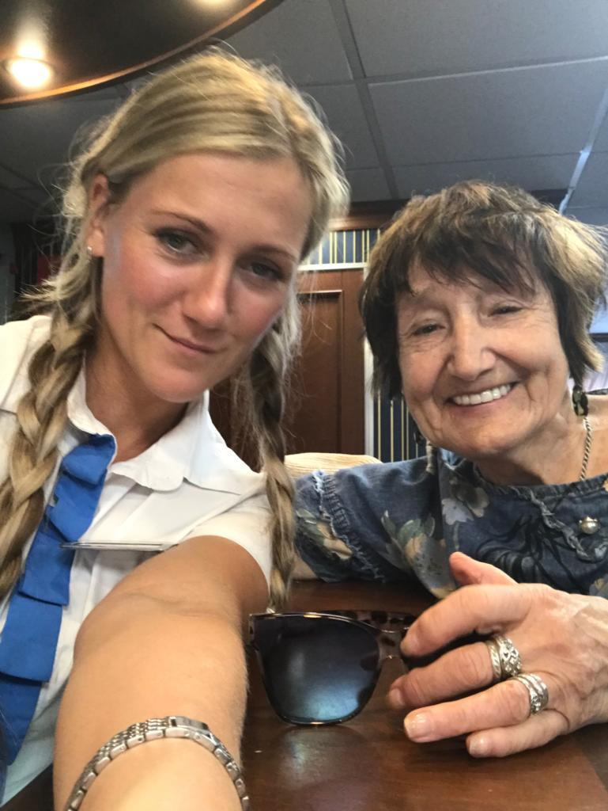

«« МОИ ДРУЗЬЯ»»
Оставив позади города Золотого кольца, наш «Маленький
принц» взял курс на Москву, но впереди нас приветствовала
гостеприимная Дубна.
Дубна - зеленое и уютное место. Поселение существует дав-
но, расположена на канале имени Москвы, ранее Москва-Вол-
га, который соединяет Волгу и Москву реку, обеспечивая судо-
ходство и водоснабжение.
Город Дубна получил название именно благодаря реке Дуб-
на, впадающей в канал, который строился с 1932 по 1937 год.
Это был настоящий подвиг, не имеющий аналогов в мире, по-
двиг человека и народа... Наш путь на теплоходе шел именно
по величественному каналу имени Москва, грандиозному тво-
рению, в каждый километр которого вложен титанический труд
строителей прошлого года. Мне было грустно представлять,
какой непомерной ценой и какими сверхчеловеческими усили-
ями проложен был этот путь... Экскурсия по городу была
недолгой. Мы проехали на автобусе в места, где расположены
памятники и таблица Менделеева. Почтили память Высоцкому,
где он изображен как бард с гитарой в честь 70 лет - символ свя-
зи с городом, где он неоднократно выступал в 1960-70 годах.
Полюбовались памятником Ленину, памятником самолету ИЛ2.
Нам показали место, где находится гигантский 9 метровый
стул-гигант, выполненный из березы - он был внесен в книгу
рекордов России. Конечно, Дубна, это уникальный город, как
наукоград где сосредоточены научные организации, где гар-
монично сочетаются высшая наука, живописная природа и уют
пригорода.
Теплоход «Маленький принц» совершил свой последний
переход и наше плавание от Дубны до Москвы подошло к фи-
нишу.
30 июля - последний день на теплоходе, на душе грустно,
хотя все шло своим чередом - привычная зарядка и завтрак.
Впереди самое сложное - прощание с людьми, которые сделали
мой отдых незабываемым. Домашний уют, вкусная еда и теп-
лая атмосфера, шоу и и праздники, знакомство с теплоходом,
организованное капитаном теплохода, и организация прекрас-
ных экскурсий в городах Углич, Мышкин, Кострома, Городец,
Нижний Новгород, Ярославль и Дубна, стоимость автобуса, про-
смотр достопримечательностей - все было включено в стои-
мость путевки, знакомство с замечательными людьми от кото-
рых я всегда имела помощь на экскурсиях и с которыми я под-
держиваю связь и сейчас. Спасибо моему сыну, Андрею Юрье-
вичу, который организовал мою экскурсию.
Наш «Маленький принц» прибыл утром 30 июля. Встречал
меня Андрюша.
Матросы вежливо выставили наши чемоданы у борта тепло-
хода. У меня твердая земля под ногами - это не палуба, по кото-
рой я гуляла сегодня утром и снова грусть, мое приключение
на теплоходе «Маленький Принц» закончилось.
Я уносила с собой море воспоминаний и это надолго, я
знаю. Настоящая русская сказка, ощущение, будто я побывала
в городах Золотого кольца пару столетий назад, и это было
очень интересно, ведь история оживает, когда мы по ней ходим.
В Москву я вернулась в праздник ДВМФ, который всегда
отмечается здесь в последнее воскресенье июля. Погода жаркая.
Вика встретила меня дома, Валя была на даче.
В Москве я была недолго - 3 августа я уезжала в город Таган-
рог, где меня ждала племянница, дочь моей старшей сестры.
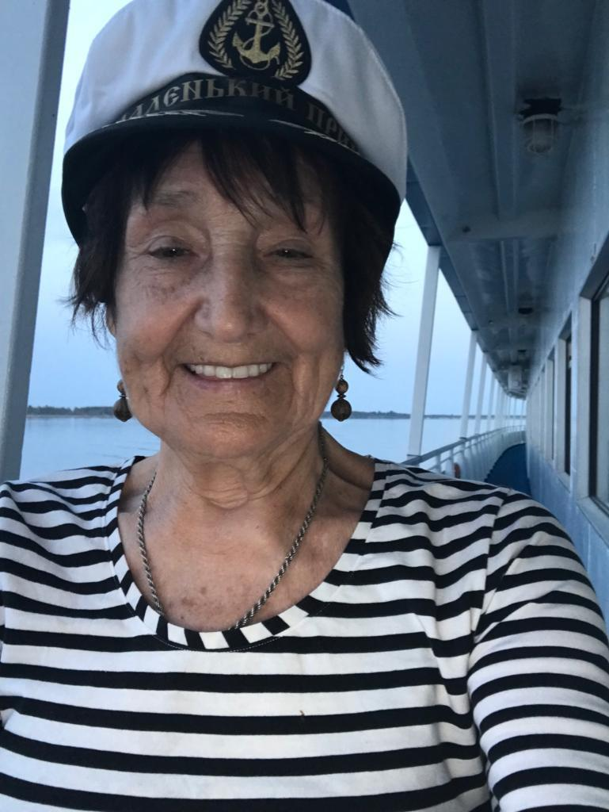
«« КАПИТАН АЛЛА»»
По моей просьбе Андрюша заранее купил мне билет. Но в
Москве у меня образовался ряд незавершенных задач, требу-
ющих срочного решения и я приступила к их выполнению. На
почте я отправила бандероль в Петербург, перевела деньги
Детскому дому, ходила на встречу к метро Ленинский проспект
на встречу с женщиной из Донецка, мамой моей знакомой
Ольги из Новом Зеландии, она привезла для нее важный доку-
мент. В этот период времени чаще видела Вику - она успешно
сдала зачет - она постоянно повышает уровень своей специ-
альности. Ходили с нею в кафе, магазин, купили вкусные манго
и лотерейный билет ей на удачу. Почему-то вспомнила спорт-
лото, конечно, понимаешь, что выигрыш - это редко, но в нем
есть что-то беспроигрышное - ты платишь небольшую сумму, а
с гарантией получаешь положительные эмоции, а может быть
даже что-то выигрываешь. С мужем часто покупали, выигры-
шей не было, но всегда ждали розыгрыш и надеялись и сильно
не расстраивались, когда выигрыш проходил мимо нас.
Вспомнила, что иногда люди прислушиваются к чужим сове-
там - вроде как неправильным, но я слушаю всегда разные точ-
ки зрения, чтобы составить свое собственно мнение -это всегда
помогало мне видеть ситуацию шире. Но окончательное реше-
ние я всегда принимала сама. Опыт моей жизни свидетельству-
ет об этом, пусть иногда и были ошибки, но это были мои
ошибки, как и моя жизнь.
Поездка в Таганрог. Луганск
Я уезжала с Казанского вокзала. Андрюша с работы приехал
к поезду, передал 300 рублей на памятник для Светланы в Лу-
ганске. Я собиралась с Тамарой из Таганрога проехать в Лу-
ганск - это уже традиция. Мой визит туда очень короткий, так
как военные действия в Луганске начались весной 2014 года и
переросли в войну, известную как война на Донбассе. Но это
моя родина, я не могу не поехать туда.
В Ростов я приехала 4 августа - встречала Тамара. Я при-
болела, добирались из Ростова до Таганрога на электричке, по-
том на автобусе. По пути зашли в аптеку, купили лекарства
для скорейшего моего выздоровления. В гостях нельзя болеть.
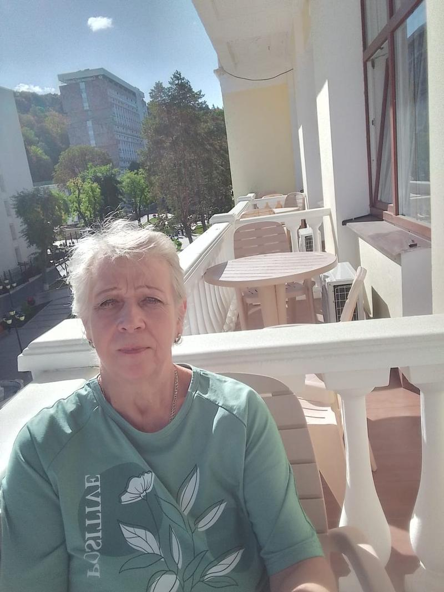
«« ПЛЕМЯННИЦА ТАМАРА»»
Погода была жаркая, но по утрам я выходила в парк, на-
слаждаясь свежим ранним утром и это был хороший стимул
для моего выздоровления. В семью Тамары я приезжаю не
первый раз - здесь мне всегда уютно, квартиру в Таганроге они
купили по сертификату, который им дали по программе пере-
селения инвалидов в сентябре 2012 года. В декабре 2013 года
они переехали сюда из поселка Джебарики-Хая, Саха Якутия,
где она жила с июня 1983 года, приехав из Луганска по моему
приглашению и по окончанию ею учебного заведения в июне
1983 года.
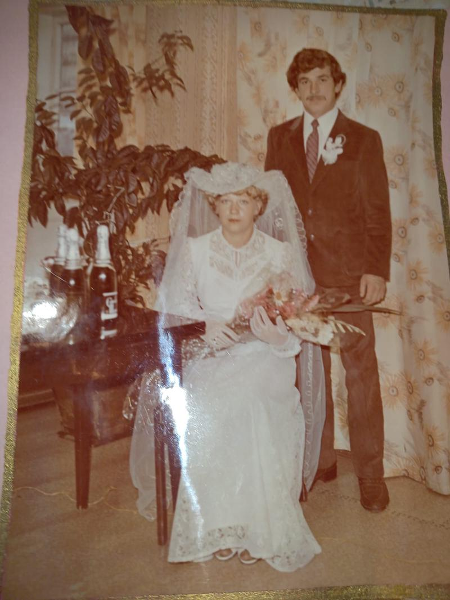
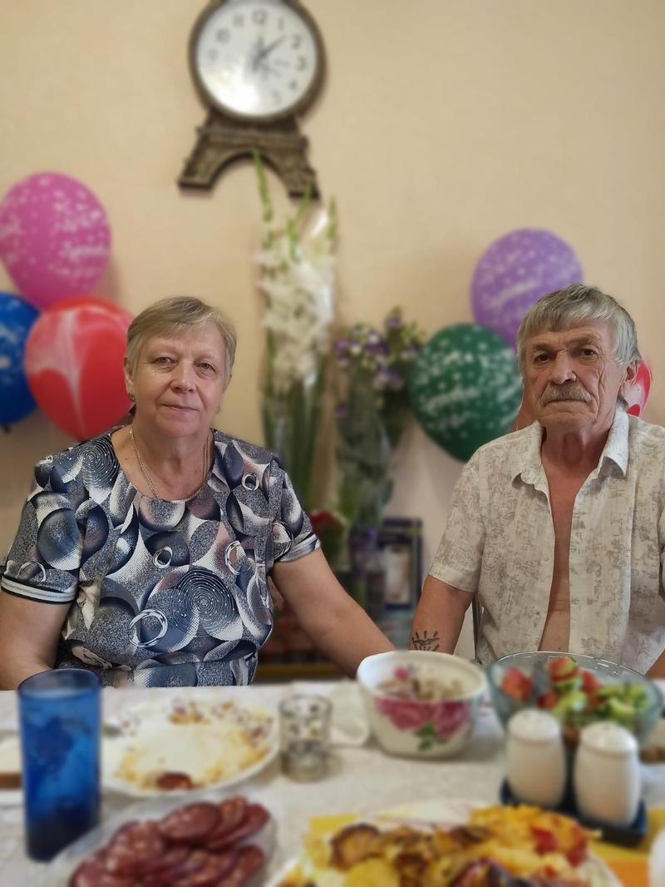
«« ТАМАРА И САША»»
22 сентября 1984 года она вышла замуж. На свадьбу приле-
тали ее родители, Светлана Федоровна и Николай Иванович,
там родился Миша, их сын. На шахте ее муж, Александр Ми-
хайлович, получил травму ног 5 декабря 1984 года и остался на
всю жизнь инвалидом. Они были молодыми. Ее любовь каза-
лась сильнее обстоятельств, она научила его жить заново в но-
вой реальности и они прожили вместе 40 лет. В этот мой приезд
он был очень слаб, часто находился в больнице, но несмотря на
его тяжелую болезнь в семье сохранялась атмосфера поддерж-
ки и тепла.
Я понимала, это главное было в их жизни всегда. У нас с Та-
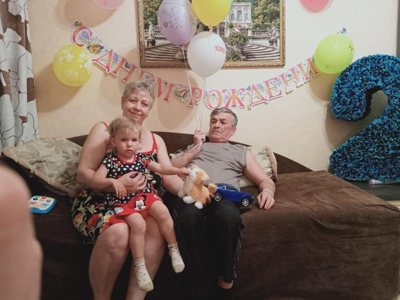
«« СЕМЬЯ ВАЛЕЕВЫХ»»
марой были небольшие прогулки по достопримечательностям
Таганрога, но многое о городе я узнала еще раньше в прежние
годы, когда я приезжала в Таганрог.
Город Таганрог носит звание города Воинской славы за по-
двиг в годы ВОВ. Защитники города проявили невероятное му-
жество во время оккупации 1941-1943 гг. В 2015 году в городе
открыли памятную стелу в честь этого события. Петр первый в

«« ТАГАНРОГ - ЭТО ГОРОД ВЕЛИКИХ ИМЕН»»
1698 году создал этот город как крепость для защиты южных
границ. В 1825 году 200 лет назад в Таганроге прервался жиз-
ненный путь Александра первого. Российский император
скончался здесь после тяжелой болезни 19 ноября 1825 года,
ему было 47 лет. Он любил этот город на Азовском море, он на-
ходил здесь тепло, морской воздух, что было важно для его здо-
ровья и отдыха от Петербурга. Таганрог - это город великих
имен. А. С. Пушкин часто бывал в Таганроге, им написаны сти-
хи: «Всю жизнь свою провел в дороге, простыл и умер в Та-
ганроге». Таганрог - родина Антона Чехова, который писал что
для него лучше жить в Таганроге, так как «дым отечества сла-
док и приятен». Здесь бывал Петр Чайковский, именно здесь
родилась и провела свои юные годы неповторимая Фаина Ра-
невская.
В прошлые мои приезды я посещала достопримечательно-
сти этого уютного города, была в музеях, в театре, ходила по
знаменитой Каменной лестнице Депальдовской (дата по-
стройки 1823 год), построенной на средства греческого купца
Депальдо. Рядом с лестницей города находятся солнечные
часы, это исторический памятник и достопримечательность.
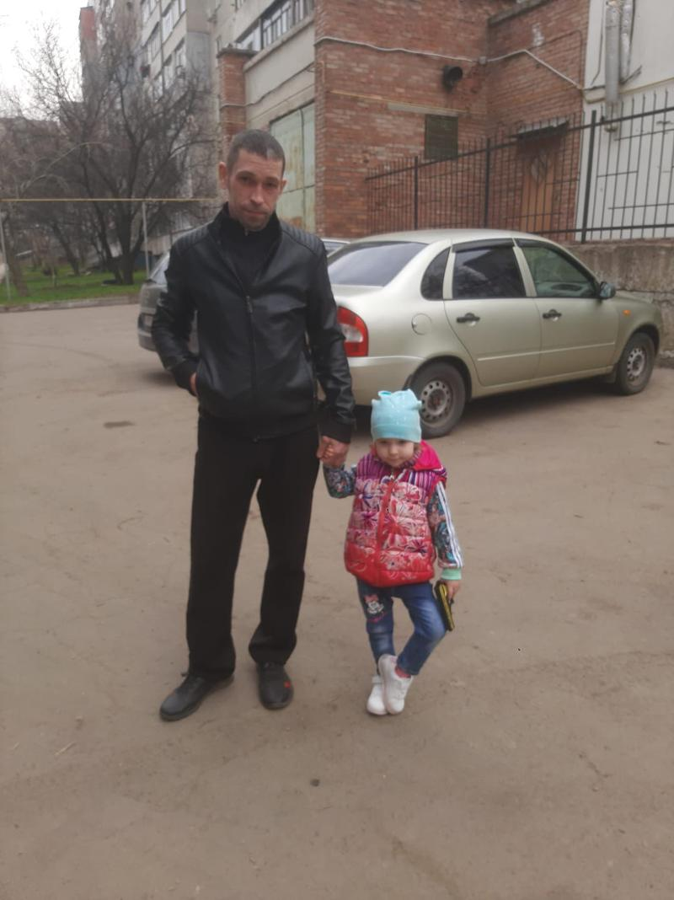
«« СЫН ТАМАРЫ, МИХАИЛ С ДОЧКОЙ»»
Установлены в 1833 году, служили для сверки городских часов
показывая истинное местное солнечное время, отличающееся
от московского, а сейчас являются объектом культурного на-
следия. Интересно, что истинное местное время, основанное на
положении солнца в Таганроге, на 25 минут раньше московско-
го времени по долготе. Чувствуется, что в этом городе бережно
хранят историческое наследие города, поддерживая порядок и
уют на старинных улицах .
В свободное время от домашних дел мы с Тамарой делали
шопинг по магазинам, на рынке. Однажды шопинг прошел на-
столько успешно, что кошелек решил уйти в свободное плава-
ние прямо на рынке. Видимо произвел такое впечатление, что
местные ценители решили взять плату за вход в размере всего
содержимого моего портмоне. Ну что ж, зато налегке во всех
смыслах, а может мои деньги были нужнее в данный момент
кому-то. Удивительно, но сработал закон равновесия - как
только у меня не стало этой суммы, банк наконец выплатил
мне старый долг, почти на ту же величину, правда это было
позднее в городе Нерюнгри .. Вышло то на то. Нет худа без
добра. В отношении банковской карты я сообщила в банк и по-
лучила новую карту по приезду в Москву, но у меня была запас-
ная банковская карта, которой я пользовалась в Таганроге.
Кошелек я купила новый, со старым я рассталась без сожаления.
Этот эпизод произошел 6 августа в день рождения моего мужа,
который ушел много лет тому назад, это всегда стрессовый
день, когда становишься рассеянно , эмоционально уязвимой,
что и случилось со мной.
После трех дней в Таганроге начался новый этап моего
пути в Луганск…
7 августа ранним утром мы с Тамарой доехали на такси до
вокзала, сели на электричку до Ростова. Жара стояла невыно-
симая с самого утра. На Ростовском вокзале мы недолго пе-
реждали пекло в прохладном кафе, а затем на такси уехали в
продолжение нашего путешествия. В такси, к моему удивлению,
было не жарко - проветривание и вентиляция обеспечили при-
ятную температуру в салоне, что позволило избежать нам дис-
комфорт в жару. Выехав из Ростова, мы проехали города Ново-
черкасск, Каменск, Шахтерский. Остановка была у русской
таможни Каменец-Шахтинская, проверка была только паспор-
тов, затем была таможня ЛНР без проверки, от здания которой
мы шли пешком км два с багажом и по жаре, что было конечно
утомительно. В конце этой прогулки нас ждал микроавтобус -
на нем мы продолжали наш путь в Луганск. За окном развора-
чивалась география моей памяти. Знакомые названия -
Свердловск, Краснодон, Молодогвардейск - города сменяли друг
друга, напоминая о временах моих частых командировках в
далекие годы, словно главы из старой книги... Привет из про-
шлого...
В Луганск мы приехали прямо не на автовокзал, а на квартал
Заречный по договоренности с водителем к дому, в котором
жили моя сестра Светлана Федоровна и ее муж Николай Ивано-
вич. В настоящее время там живет их внук Миша, сын Тамары и
Саши, со своей женой в гражданском браке Мариной и дочерью
Ангелиной, рожденной в июне 2019 года.
В Луганске я бываю всегда, когда приезжаю в Россию из Но-
вой Зеландии, куда я уехала жить в 2009 году. Сначала думала -
временно, быть поближе к семье младшего сына, где в 2005 году
родился внук Антон, которого я хотела видеть, хотя они жили
на Северном острове Новой Зеландии, а я на Южном. Хоть ред-
ко, но я летала к ним и была счастлива. Позже, в 2010 году они
переехали жить в Австралию, в город Брисбен. Я часто гостила
там, где рос мой маленький внук - я дарила ему свою заботу и
внимание, разучивала с ним стихи на буквы русского алфавита
для развития речи. Нашими любимыми развлечениями были
прогулки и катание на детских поездах. Это мои воспоминания,

«« ВНУК АНТОША 2009ГОД»»
а может и его……
Луганск навсегда останется частью моей души, это мой родной
город, куда я буду возвращаться всегда. Хотя сегодня он больше
всего превращается для мен в город-память, где каждый уголок
хранит тепло и голоса близких, которых больше нет рядом.
В Луганске я была 5 дней. Программа моего приезда была
следующая - заказать памятник на могилу Светлане, навестить
могилы родственников на кладбище, Острая могила, церковь,
Камброд, Садовая, встречи с Соболевыми, Леной Борисовой и
родственницей по линии моего папы, Валей Никулиной. Я все-
гда ее навещаю когда приезжаю в Луганск. Она одинокая, я под-
держиваю ее финансово, когда бываю там. Ее дом находится
рядом с одним из наших сохранившихся домов, где сейчас жи-
вут чужие люди, но когда-то это был наш дом и мне всегда хо-
чется быть там, просто постоять около него, несмотря на пе-
ремены, это место все еще отзывается в моем сердце.
Камброд - для меня родина моего детства, юности. Наш дом
с пристройками находился на улице Артема в Каменобродском
районе. Рядом с домом стоял металлический столб, с которого
в детстве мы подавали позывные, когда играли в детские игры
и этим звуком беспокоили соседей. Напротив дома было зда-
ние райисполкома, пришедшее в нерабочее состояние во время
войны, а потом восстановленное. Здесь моя мама работала
уборщицей, а я и моя сестра помогали ей. Напротив нашего
дома через дорогу, по которой ходили трамваи с таким звуком,
от которого содрогался наш дом, подальше от здания Райис-
полкома находилось здание Райкома партии. Напротив него -
детская поликлиника и чуть подальше магазин под названием
«Девяносто». Не знаю, почему он так назывался -раньше нико-
гда не задумывалась. А вот рядом с нашим домом был яр, кото-
рый в дождливую погоду наполнялся водой, с грохотом сте-
кавшей в нашу речку Луганка, которая в годы моего детства,
юности была широкой, глубокой. В ней я училась плавать и там
проходило мое детство с моими друзьями, братьями. Помню,
чтобы спуститься в некоторых местах к речке, где берега были
крутыми, нужно было преодолеть кустарники, высокую траву,
дикие кручи , где иногда мы прятались, когда играли в игры
вроде казаки-разбойники. Говорят, в детстве деревья и трава
зеленее. Мои Луганские кручи не стали исключением - спустя
годы они оказались лишь скромными холмами, но в моей па-
мяти навсегда остались великанами. Через яр от нашего дома
находилась усадьба, хозяева которой сдавали дом под аптеку.
Часто в яру я находила пузырьки, лекарства и делала свою дет-
скую аптеку, мысленно кого-то лечила, спасала от мнимых бо-

«« КАМБРОД-2023ГОД»»
лезней. Здесь, недалеко на нашей улице Артема была парикма-
херская. Это было очень удобно и потом, когда родился мой
старший сын Андрюша в апреле 1960 года, я приводила его
стричься сюда. Тогда была модная прическа – канадка, всегда
мой маленький сынуля имел модную стрижку.
Чуть подальше от моего дома был мост, по которому ходи-
ли машины, но не трамваи. Этот большой мост был разрушен в
годы ВОВ, восстановлен после войны. С него начинались другие
объекты - моя школа под номером 3 - женская гимназия, где
училась я и моя старшая сестра Светлана, напротив - стадион
имени Ленина, где в зимний сезон я каталась на коньках и
принимала участие в соревнованиях по конькам, дальше был
Ботанический сад. А после начиналась улица Садовая, где я
прожила многие годы, когда вышла замуж за Пазынич Юрия
Степановича. Его я знала с детства, потом мы потеряли друг
друга - у него была служба в Армии три года, а я по окончанию
техникума и по распределению министерства строительных
материалов уехала работать в город Черемхово Иркутской
области на три года. Встреча была неожиданной, мы пожени-
лись в июне 1960 года. Настоящее название улица Садовой -
Карла Либкнехта, но старое название этой улицы все еще жи-
вет, может это связано с личными воспоминаниями, когда
старшее поколение передает молодежи старое название. Дом
37 Карла Либкнехта – Садовая, где мы жили семьей с моей све-
кровью, Сафроновой Галиной Никитичной, несколько лет.
Воспоминания... В этот приезд я была здесь, на нашей Са-
довой... Пешком с Тамарой мы прошли этот путь воспоминаний
ко двору по улице Карла Либкнехта, 37 с одним почтовым адре-
сом для всех жильцов в то время, с одним туалетом на всех
жильцов и колонкой для воды во дворе. И с абрикосовым дере-
вом - сейчас его нет, но вкус этих абрикос я часто вспоминаю.
Здесь по-прежнему стоят те же дома, некоторые пустые, а в
некоторых живут незнакомые люди. Квартира, в которой мы
жили, тоже пустая, сквозь старые окна можно видеть высокие
потолки, внутри окон покосившие ставни - напоминание о
других ставнях, когда можно было закрыв их, спасаться от
жары, темноты, а иногда от громких разговоров внутри двора.
Вспомнила учительницу, немку Екатерину Ивановну, нашу со-
седку - я многому у нее училась, а рыбу я жарю всегда так, как
она меня учила когда то. Тима, ее сын, был любителем рыбалки
и она часто делилась его уловом.
Вспомнила наводнение в 1961 году. Это было стихийное бед-
ствие, мы сидели на кровати, не двигаясь, так как квартира
была залита водой до уровня сетки кровати, а лодка подъез-
жала к нашим большим окнам и забирала нас, перевозя в без-
опасное от воды место. Яр около дома мамы тоже разливался,
но дом мамы не был затоплен и мы переехали в ее дом с ма-
леньким Андрюшей и жили там до окончания ремонта кварти-
ры на Садовой. Помню, что когда мы жили у мамы, моя млад-
шая сестра Люба выходила замуж за Сандлер Эдуарда Львовича
в 1961 году. Приятное событие. И тоже воспоминания... Наше
маленькое путешествие по знакомым местам продолжалось.
С Тамарой мы вышли к Саду имени 1 мая, где мы часто
бывали с Юрой и маленьким Андрюшей, смотрели фильмы в
открытом кинотеатре по вечерам, ходили кушать вкусные чебу-
реки, а когда-то в юности он и я ходили на танцевальную пло-
щадку. Нет уже танцевальной площадки да и открытого кино-
театра тоже нет, все другое, новое, современное . На углу Садо-
вой недалеко от ж/д путей стоит большое здание - я забыла на-
звание этой организации, но помню, что здесь работала моя
тетя Легенченко Анна Константиновна , дочка моей двоюрод-
ной бабушки. Знаю, что это был трест, связанный со строитель-
ством, а сейчас это другая организация. Здесь работала моя
мама вахтером, я часто к ней приходила с Андрюшей Это была
недалеко от дома, где я жила и возможность чаще видеть
маму.
Вспомнила случай. Мы с Юрой ушли на какое-то мероприя-
тие. Андрюша маленький оставался с бабушкой Галей, ему не
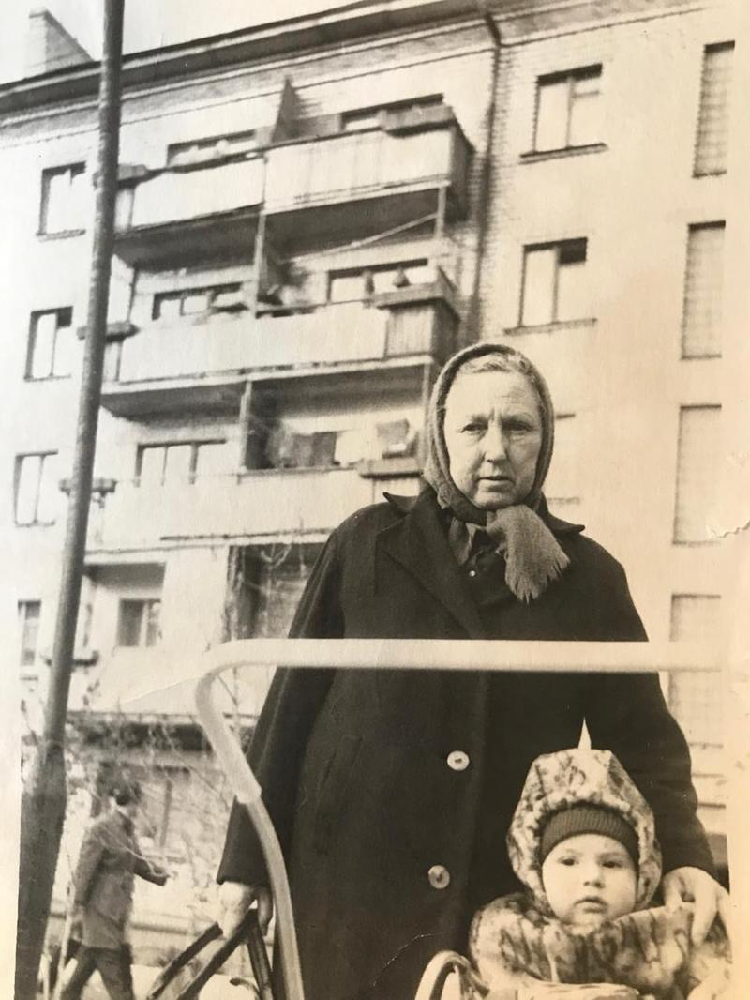
«« АНДРЮША С БАБУШКОЙ ГАЛЕЙ»»
понравился наш уход и он убежал от бабушки, которая, запы-
хавшись, не успевала его догнать, чтоб его повернуть назад. Он
со скоростью бежал к ж/д путям, но бабушка Вера, моя мама
увидела его в окно вахты и перехватила, пока он не добежал до
опасной ж/д дороги. Он оказался в плену двух бабушек и, рас-
строенный, вернулся с бабушкой Галей домой. В садик он по-
шел после трех лет - я и Юра работали, бабушка Галя заботи-
лась о нем, она была уже пенсионного возраста. Иногда бабушка
Вера в свободное от работы время забирала его к себе. Столько
воспоминаний.
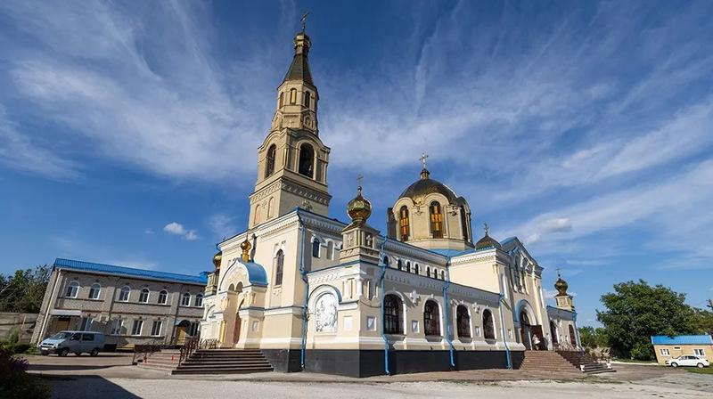
«« ЛУГАНСК, ЦЕРКОВЬ ПЕТРОПАВЛОВСКАЯ »»
В этот приезд я была в церкви. Я знаю эту церковь с раннего
детства, она находится на моей улице Артема недалеко от мое-
го дома рядом со зданием бывшего райкома партии. Я помню
времена гонения на церковь, когда нам, школьникам, не раз-
решали ходить туда. Учителя следили за нашим посещением
церкви, а мы ходили. Мне знакома была там каждая икона. Я
помню, когда ждали архиерея, ему стелили красные дорожки
во дворе церкви, по которым мы догадывались о его приезде.
В церкви часто проходили обручение и венчание молодых, а
также крещение младенцев... Эта церковь упоминается как
церковь Петропавловская, с 1882 года храм является памятни-
ком архитектуры, а официально начала именоваться Петро-
павловским кафедральным собором с 1991 года с возвращени-
ем городу исторического названия. Я родилась в 1937 году, а
храм Петропавловский был закрыт с 1929 года и открыт для ве-
рующих в 1942 году. Я не знаю, в какой церкви меня крестили,
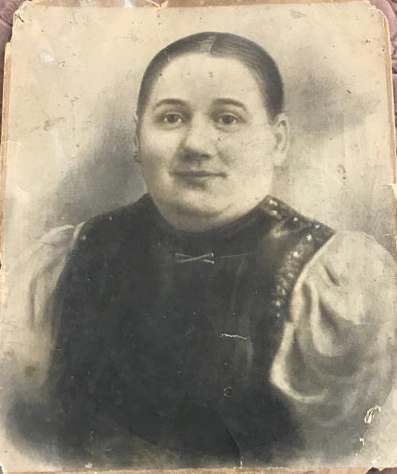
«« ТЕТЯ НИНА, СЕСТРА МОЕЙ МАМЫ »»
в те времена в 1937 году многих детей крестили тайно на дому
приглашенные священники, так как открытых действующих
храмов в городе практически не оставалось. У меня были
крестные родители - тетя Нина, сестра моей мамы, а крестный -
дядя Сеня, брат моей мамы. Они всегда заботились обо мне,
сейчас их уже нет. Мама моего мужа была членом партии и не
принимала веру, ее дети и внуки, мои дети, покрестились в
более взрослом возрасте...
Последние дни в Луганске я встречалась с родственниками:
племянницей Леночкой, дочкой моей младшей сестры, он жи-
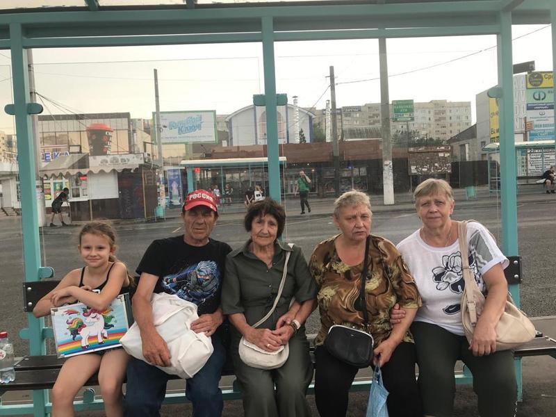
«« НАШИ РОДСТВЕННИКИ, ЛУГАНСК »»
вет в той же квартире, где жила моя мама. Конечно, все здесь
изменилось. Ее нет уже много лет, но всегда, когда я подхожу к
балкону маминой квартиры, мне кажется что там стоит моя
мамочка и машет мне рукой, а когда поднимаюсь по лестнице к
квартире, я мысленно представляю, что дверь квартиры уже от-
крыта, а она стоит и со своей доброй светлой улыбкой пригла-
шает меня зайти домой, где всегда для меня было что-то вкус-
ненькое. А когда я уходила - это было обычно в утреннее время
- я бежала к ней перед работой, и она мне давала билет на ав-
тобус, заранее купленный для меня. Теперь здесь живет ее
внучка уже много лет. У нее очень уютно. О маме напоминает
только альбом с нашими семейными фото. Альбом, как мост
между прошлым и настоящим. Там мы, наша семья все еще
вместе. Фотографии хранят то, что память стирает. Здесь, в
альбоме, я увидела фото моей бабушки по папе. Этот снимок
как бы оживил близкого мне человека, которого я знала только
по рассказам мамы и моих родственников…
Леночка живет одна, ее муж Володя в длительных коман-
дировках, дети живут самостоятельно со своими семьями. Она,
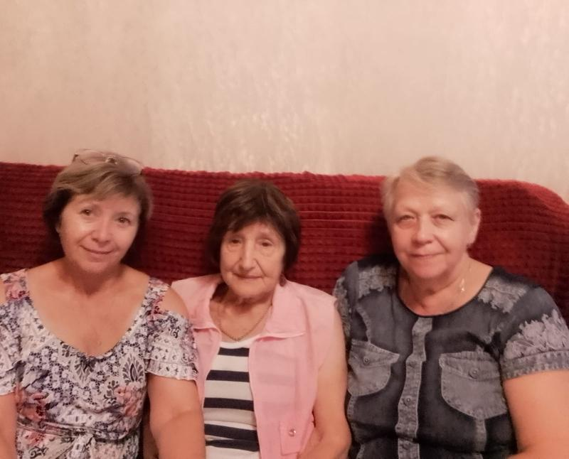
несмотря на пенсионный возраст, продолжает работать в дет-
ском садике воспитателем уже много лет. Выходные она обыч-
но проводит со своей внучкой Викторией. Эхо ушедших шагов
растворилось в смехе маленькой девочки.
В Луганске я прожила 5 дней. За это время я была в гостях у
родственников моего мужа Соболевых. Нина, его двоюродная
сестра, уже очень взрослая женщина со множеством болезней,
но ее энергия дает ей силы. Она живет вдвоем с дочерью Ири-
ной, единственный внук в другом городе, но общение посто-
янное. Встреча была короткой, но очень душевной. Хотя мы и

«« СОБОЛЕВА. НИНА »»
не родные по крови, но в этой короткой встрече было искрен-
нее тепло, которое бывает между близкими людьми.
В кафе у нас с Тамарой была встреча с ее родной сестрой
Ириной, мужем Леней и внучкой Дианой. Пили пиво и кушали
вкусные чебуреки, сделали фотки и разъехались. Маленькое со-
бытие, а оставило много приятных воспоминаний. Я была с
родственниками в родном городе Луганске.
Важным и значимым событием здесь было посещение мною
мемориального комплекса Острая могила. Это место с глубо-
кой историей, которое хранит память о героях разных поко-
лений. Недалеко в этом районе находится кладбище Острая мо-
гила, где похоронены близкие мне люди: мама, Никитина Вера
Петровна, две сестры: Любовь и Светлана, муж, Юрий Степа-
нович Пазынич, свекровь, Галина Никитична Сафонова, два
зятя: Николай Иванович Земсков и Юрий Александрович Хо-
лопский, семья Слесарчук - все ушли в разное время.
«« МЕМОРИАЛ - ОСТРАЯ МОГИЛА »»
Посещение могил близких это не только дань памяти, но и
возможность почувствовать духовную связь с ними. Большин-
ство родственников нашей большой семьи Слета похоронены
на другом кладбище – Каменнобродском, там я не была.
Я ездила на квартал Южный, ожидала встречу с другом всей
моей жизни, Понеделовой-Пидгерец Жанной Ивановной, но
опоздала - она ушла, нет и ее мужа. С детьми ее у меня не было
связи. Друзья уходят, но дружба остается в сердце навсегда.
На Заречном квартале есть Свято-Николаевский храм в
честь Николая Чудотворца. Когда я бываю в Луганске, я посе-
щаю этот храм, вот и на этот раз я ушла туда одна перед моим
отъездом.
Мои короткие путешествия по знакомым местам моего
родного города закончились, сборы назад в Таганрог были не-
долгими. Купила конфеты «Курочка Ряба», Шахтерский торт и
водку местного производства «Горилка». Я помню вкус конфет
и Шахтерского торта, когда я покупала их на семейные торже-
ства в прошлые годы. Вот и сейчас захотелось. Поездка назад
была более короткой. Выехали с Тамарой 12 августа ранним
утром на такси. Через час были в Гуково – таможня, от которой
была прекрасная дорога до Ростова всего 1.5 часа. На электрич-
ку опоздали, ждали следующую. От электрички ехали на такси
прямо к дому. Саша был дома, его выписали из больницы после
медицинских процедур, выглядел хорошо, но конечно скучал
без Тамары. Мой день рождения я праздновала здесь, в Таган-
роге. Это был по-настоящему теплый и душевный день рожде-
ния, проведенный в кругу близких мне людей. Тамара с Сашей
превратили мой праздник в настоящую сказку, поздравив
меня огромным невероятной красоты букетом цветов и накры-
ли потрясающий стол, полный вкусностей. Но самое удиви-
тельное - география праздника. Мой день буквально превра-
тился в карту мира. Поздравления были от сыновей, род-
ственников, друзей, от знакомых, с которыми жизнь нас не
сводила долгие годы, это было до слез приятно. Это состояние,
когда понимаешь, что истинные связи не зависят от частоты
встреч, а их внимание - это подарок, который хранится в серд-
це.
Я получила букет цветов по почте от моих друзей Любы и
Сони из города Нерюнгри. Это было для меня трогательным
сюрпризом, подчеркивающим, что дружба не знает расстояний.
Мой день рождения напомнил мне, как много вокруг тепла и
потрясающих людей. Я ушла в новый личный год с полным
сердцем и широкой улыбкой и благодарностью каждому, кто
стал частью моего праздника.
На следующий день я уезжала из Таганрога. Путь был тот же -
такси, электричка, Ростов-на-Дону, ж/д вокзал. Поезд ушел по
расписанию. Прощание - это не встреча, грустновато я смотре-
ла в окно вагона на Тамару, стоявшую с другой стороны окна на
перроне, с благодарностью к ней - ее отъезд со мной в Луганск
во время болезни Саши - это редкое сочетание благородства и
глубокого уважения ко мне. Она сумела расставить приорите-
ты там , где другие бы сдались. Она поняла, что в этой поездке
я не должна быть одна, Спасибо, Томик, за понимание.
Поезд с Таганрогского перрона уходил медленно. У меня
было прекрасное купе с верхней полкой. Верхняя полка меня
совершенно не трогала. Я уже знала, что нижняя полка - это
миф, поэтому залезла наверх с достоинством. Это было слиш-
ком мелким поводом для расстройства, так как верхняя полка -
лучший тренажер. Спорт в любом возрасте. Это отличная мета-
фора того, что движение и гибкость важны всегда . Поезд, кото-
рым я ехала, известен как фирменный «Тихий Дон». Время в
пути составило около 16 часов 2 минут, но главное, что в этом
поезде можно было принять душ. Еду приносили в купе. Про-
водница - профессионал своего дела – в вагоне идеальный по-
рядок, в общении исключительная вежливость. И все-таки мне
верхняя полка понравилась, она была ближе к вентиляции, я
могла дышать свежим воздухом и потом я могла спать и читать

по своему желанию. В Москву поезд прибыл утром на Казан-
ский вокал, встречала Валя, на такси мы приехали к дому.
А вечером настоящий семейный пир: сочный арбуз от Ан-
дрюши, стол, накрытый Валей и мои гостинцы из Таганрога и
Луганска и подарки для меня, подготовленные к моему дню
рождения. Все это создало самую неповторимую атмосферу
дома. Самые лучшие праздники - это не шумные рестораны, а
вот такое искреннее общение в кругу своих. Приятные воспо-
минания.
В Москве я снова оставалась недолго. Мое заключительное
путешествие по России было в Нерюнгри.
Нерюнгри
Я была очень счастлива этому подарку моего сына. Я летела
в город, в котором я прожила большую часть своей жизни. От-
туда я уезжала в 2009 году в Новую Зеландию, но туда я и всегда
приезжала, когда была в России.
Москва оставалась снова позади, но она меня так просто не
отпускала. Нужно было успеть сделать много дел. Спасибо
Вике, несмотря на ее занятость, вдвоем с нею я быстро решила
вопрос по заказу и получению новой карты в Сбербанке. В мет-
ро она направила меня по более короткому пути к Фатиме,
моей знакомой, к которой я приехала вовремя. Вика давала
мне совет в отношении выбора подарка ко дню рождения Евы,
внучки Вали. Мы нашли время вместе покушать в кафе, я как
всегда заказала суп-харчо, а она - рыбное блюдо. Вечером
смотрели какой-то фильм по домашнему ТВ и обменивались
впечатлениями.
Я помню, один интересный день в этот период времени,
который начался эстетично с Фатимой: обед в кафе, душевные
разговоры и десерт, который был взят на дорожку, не поме-
стился в нас. Но по пути домой я не могла пройти мимо киос-
ка при виде горы огромных арбузов. Выбрав 9-килограммового
«« ФАТИМА »»
красавца, я строго предупредила продавца: если будет зеле-
ный, верну. Но я явно переоценила свои физические возможно-
сти: нести одновременно хрупкое лакомство в коробочке и тя-
желенный арбуз казалось задачей из разряда невыполнимых.
Но слава Богу, есть связь и Валя, как настоящий спаситель, ока-
залась дома и пришла на помощь. В итоге, вечером, когда при-
шел Андрюша, мы всей семьей праздновали победу - арбуз ока-
зался невероятно сладким и десерт от Фатимы очень понра-
вился Вале. А утром я с чистой совестью поблагодарила про-
давца арбузов за его честность.
18 августа - день ухода Юрия Степановича. Прошло 34 года
с тех пор, Андрюша принес розы - это традиция, добрые вос-
поминания в семейном кругу.
Последние выходные перед полетом я провела в Степань-
ково. Мы были там втроем: Андрюша, Валя и я, и кот Оливер –
четвертый.
Я спала в уютной спальне на первом этаже с огромным ок-
ном и чистейшим подмосковным воздухом. Андрюша провел
конференцию, так как Олежа был в полете Джакарта -Тимики .
В воскресенье ребята трудились. Андрюша косил траву специ-
альной машиной, Валя собирала в мешки, а я бездельничала,
что для меня было непривычно - просто не хватило смелости
сказать: давайте я вам помогу. Я не знала, требовалась ли им
моя помощь. Уехали с дачи, когда работа была закончена. Пе-
ред поездкой на дачу с Валей ездили в огромный магазин
«Твой дом», где я заказала стулья для дачи - это был мой пода-
рок в дополнение к столу, который я подарила им в прошлый
мой визит - теперь будет полный комплект.
В день шахтера я была в Нерюнгри, и поэтому перед отъез-
дом туда я подготовила подарки для всей семьи индивидуаль-
но каждому, так как День Шахтера - это наш большой семейный
праздник. Юрий Степанович, мой муж, работал последние
годы на шахте в Джебарики-Хая. О моем сыне, Андрее Юрьеви-
че, нужно писать целую книгу - я думаю, моя внучка, Виктория
Андреевна, напишет. Мой сын после окончания института про-
шел путь от горного мастера до директора разреза Нерюн-
гринский АО ХХ Якутугголь. Кавалер знака Шахтерская слава
1,2,3 степени, кандидат технических наук, Заслуженный гор-
няк Республики Саха Якутии. Награжден Почетной грамотой
Министерства науки и профессионального образования РСЯ за
большой личный вклад в развитие науки и заслуги в области
«« АНДРЮША - СТРОЙОТРЯД »»
научных исследований. С 2010-2016 технический директор АО
ХХ Якутуголь, с 2016- 2019 заместитель технического дирек-
тора АО Сибирский Антрацит с 2019 -2021 директор Управле-
ния по операционной деятельности ООО Мечел Майнинг.
30 августа 2021 года назначен директором ООО УК Мечел
Майнинг . Мой сын - большой специалист с огромным стажем
работы, с большим добрым сердце, в ущерб своему здоровью, а
может и комфорту в своей семье - он не соблюдает баланс ра-
боты и жизни. Большая заслуга Вали - она делает семейный ба-
ланс стойким. Слава Богу, что у них есть дача, где он может фи-
зически поработать и отвлечься от работы, хоть на какое-то
время. Валя и здесь ему крепкая опора.
Я уехала из Москвы 20 августа . Викуля провожала меня во
Внуково. Спасибо, внучечка.
По традиции - такси, регистрация багажа и кафе перед вы-
летом. Обожаю наши ритуалы. Ну вот, снова только я и небо.
Впрочем ошиблась, на этот раз мой чемоданчик учтиво поднял
наверх незнакомец, назвал номер моего места в самолете –
догадываюсь, что это Андрей Юрьевич, мой сынуля, позаботил-
ся о дополнительном моем комфорте в самолете, чтобы я чув-
ствовала себя под защитой и не одинокой. Спасибо, сынуля за
твою заботу.
Разница во времени между Москвой и Нерюнгри составляет
плюс 6 часов (в Нерюнгри больше). Расстояние между города-
ми - 5000 км. В связи с разницей во времени я прилетела в
аэропорт Чульман - Нерюнгри 21 Августа. В Москве жара, а
здесь я почувствовала бодрящую прохладу и особый запах хвои
и влажной земли, который буквально обрушился на меня при
выходе из самолета. Вокруг аэропорта тайга начала окраши-
ваться в желтые тона, но утро было ясным и я видела знамени-
тые сопки. Аэропорт находится на возвышенности около 850
метров над уровнем моря, наверное поэтому я почувствовала
легкую заложенность в ушах и небольшую сонливость сразу
после посадки. Под рукой у меня была легкая куртка и чемо-
данчик.
В Нерюнгри у меня друзья. Годы дружбы с ними незаметно
переросли в то самое чувство, которое теперь определяет мою
жизнь. То, что начиналось, как крепкая дружба, с годами пре-
вратилось в самое важное, что у меня есть здесь, в этом городе.
Люба встретила меня. Ехали на такси по знакомой мне до-
роге мимо скульптурной композиции Нерюнгри «Олонхоуст»
и стеллы «Нерюнгри», расположенной при въезде в город со
стороны Чульмана. Также на въезде находится символический
первый дом города - дом из бруса, который считается памят-
ным местом провожающих и встречающих горожан.
О Нерюнгри можно писать много, но если коротко - он вто-
рой по величине город Якутии, промышленный и культурный
центр а юге республики, основанный на месторождениях кок-
сующегося угля. Южные ворота Якутии с резко континенталь-
ным климатом, расположенные на северных отрогах Стано-
вого хребта. Угольная промышленность, добыча коксующего
угля - основа города. Климат резко континентальный. Город
известен театром, музеем истории освоения Южной Якутии и
считается теплым по ощущениям жителей северным городом.
В Нерюнгри я прожила две недели рядом с моими друзья-
ми. В этом городе я чувствовала себя собой - каждая улица,
парк в центре отзывался воспоминаниями. Это мой личный
берег... Воспоминания о Вике, маленькой девочке. Эти воспо-
минания - те самые моменты, которые не тускнеют со време-
нем. Солнечные зайчики на ее личике, взлетающие выше дере-
вьев, качели и ее чистый, заливистый смех, от которого на
душе сразу тепло-тепло.
Август приносит воспоминания - я в тайге с Андрюшей. Это
же особенная магия, запах хвои, прогретой солнцем, мох под
ногами и этот азарт, когда среди зелени видишь россыпь алой
брусники, грибы, наши любимые маслята. Маслята - грибы
«« ВИКА С СОЛНЕЧНЫМИ ЗАЙЧИКАМИ НА ЕЕ ЛИЧИКЕ»»
плодовитые, и в хорошие сезоны можно собрать их много.
Эти грибы растут удивительно быстро, молодежь появляется
уже через 6-24 часов после дождя, так что одно и то же место
можно проверять почти ежедневно. Наши прогулки с Андрю-
шей приходились на те самые золотые недели, когда из леса
просто невозможно было уйти с пустой корзиной.
В этот мой приезд Люба и Сережа устроили мне побег от
многих дел, запланированных здесь мною, настоящие молод-
цы. Поездка в тайгу. Какая благодать. Нерюнгринская тайга, это
«« НЕРЮНГРИНСКАЯ ТАЙГА»»
же совершенно особенный мир. Пусть ягод было и немного,
зато этот густой смолистый воздух ничем не заменить. Насто-
ящая перегрузка для легких и души. Как говорят в тайге, глав-
ное - не улов, а то спокойствие, которое забираешь с собой. Это
звучит, как начало отличной истории. Лес, верные друзья, бес-
конечные разговоры и приятная усталость.
В этот мой приезд дел было действительно много. Вопрос с
моей квартирой был на контроле у моих друзей, пока я вре-
менно там не жила. В Нерюнгри суровые зимы, поэтому в квар-
тире нужно было поменять батареи - старые на новые, и окна.
Конечно, работа была большая. Люба, мой друг помогала мне во
всех делах. Она был моим персональным навигатором, которая
не давала мне свернуть не туда. Я прошла здесь диспансери-
зацию - это медицинский осмотр для людей в возрасте, когда
предусмотрена проверка здоровья ежегодно и бесплатно.
Конечно, много времени я проводила со своими друзьями. В
кафе «Бууза Хаус» мы ели тот вкусный суп с бараниной, нава-
ристый бухлер, в Нерюнгри его традиционно хвалят за до-
машний вкус. Мы приходили в кафе, чтобы поесть этот суп
именно с бараниной, он был в меню только по определенным
дням. В бывшем здании «Товары для дома», недалеко от моего
дома есть прекрасное кафе «Айгуль», там пекут свежие чебуре-
ки. Часто я одна, а иногда с подругами приходила сюда поку-
шать чебуреки и выпить стакан ароматного чая с лимоном. Это
было то самое чувство, когда хочется просто посидеть и ощу-
тить уют, тепло и спокойствие, возможность отвлечься от суе-
ты и вдохнуть аромат лимона.
В эти дни мне нужно было разобраться с банковскими делами,
социальными льготами, которые не оформлялись мною не-
сколько лет. Для решения этих вопросов нужно было время,
поддержка, но всегда были рядом мои друзья Люба, Нина, Галя.
День рождения Гали мы отмечали вместе - приятное событие,
когда звучит вероятность того, что мой визит редкий и этот
день действительно превращается для меня в историческое
событие. Раньше лишь онлайн поздравления, а в этот день я
была в атмосфере настоящего праздника, пропитанного тепло-
той именинницы, ее чудесным голосом и вкусным столом. Она
душевно пела, а мы ей подпевали. И торт был очень вкусный.
Диета официально признала поражение перед этим шедевром.
Он был съеден весь.
Фото всех подруг праздник день шахтера
Время неумолимо и осень уже тихонько крадется по ули-
цам города. Но прошлое воскресенье, 25 августа, выдалось яр-
ким и я отпраздновала со всеми праздник День шахтера. На
Центральной площади я слушала поздравление Айсена Нико-
лаева, президента Якутии, потом был концерт с приглашенной
звездой вечера Александром Маршалом, также выступали му-
зыкальные коллективы города Нерюнгри и приглашенные
группы.
Погода менялась быстро в этот вечер. Несмотря на теплую
куртку, которую мне подарила Нинуля, мы ушли с Любой домой
раньше, не дождавшись окончания праздника на площади. Пе-
ред уходом на площади совершенно неожиданно я встретила
Светлану С. Встречу с нею я планировала на ближайшие дни и,
конечно, здесь наша встреча была такой неожиданной - в толпе
мы нашли друг друга. Светлану и ее мужа Толика я знаю много
лет, прошлое меня с ними объединило , а настоящее не разлу-
чило - я постоянно на связи с ними по онлайн. При расставании
договорились о встрече.
В Нерюнгри действует Храм в честь Казанской иконы Бо-
жией Матери. Это православный храм города, я посетила его в
день рождения моей младшей сестры, Любви Федоровны, она
ушла из жизни здесь, в этом городе Нерюнгри, много лет тому
назад при трагических обстоятельствах, вместе со своим му-
жем. Это была катастрофа в нашей семье, я жила в Джебари-
ках-Хая, Андрюша работал в Нерюнгри на разрезе Нерюгрин-
«« ЛЮДИ С МНОГОЛЕТНЕЙ ДРУЖБОЙ,»
«ЗАКАЛЕННОЙ МОРОЗАМИ, С ТЕПЛОЙ»
«ДУШОЙ И ДОБРЫМ СЕРДЦЕМ»»
ский после окончания института в Москве. Вся тяжесть этого
события легла на его плечи. Это печальное событие в нашей
семье…
В городе холодало - это же север, по ночам начинались мо-
розы, но встречи с моими друзьями не прекращались. Я часто
заглядывала на чай к Нине, Люба после работы подходила
тоже. Нина всегда поражала нас кулинарными шедеврами и
принимала нас по-королевски, накрывая стол для нас двоих,
как для банкета. Вот такие здесь люди с многолетней дружбой,
закаленной морозами, с теплой душой и добрым сердцем.
Я была в гостях у Светланы, Толика - они живут там же, в
пятиэтажном доме на пятом этаже. У них всегда уютно, наши
беседы такие же, как и раньше, когда я бывала у них в гостях
здесь, в маленькой , уютной кухне, где мы пили прекрасный
гречневый чай и приготовленные Светланой грудки по ее осо-
бому рецепту. Я записала ее рецепт, грудки действительно
были вкусные. Эти люди с открытым сердцем, чья рука всегда
протянута мне навстречу. И в этом мы абсолютно взаимны. У
нас не забытое прошлое и настоящее тоже. Дома в карманах
куртки я обнаружила сладости - это Толик, тайный кондитер,
проявил заботу инкогнито, сделав сюрприз - подкидыш.
1 сентября у Олежи, моего младшего сына, день рождения.
В этот день в его взрослые годы мы почти всегда на расстоя-
нии, а тогда мы прилетели всей семьей строить город Не-
рюнгри. Это было почти это же время августа, только 1975 год.
Олегу было 5 лет. Сейчас он взрослый мужчина, но его внут-
ренняя крепость и характер ковались именно здесь, в Нерюн-
гри, в краю вечной мерзлоты, где люди согревали друг друг ду-
шевным теплом. Это история о том, как среди бараков и пер-
вых просек вырос мой сын, которым я сегодня горжусь. Он пре-
красный специалист, его профессия - бортинженер на вертоле-
те. Это человек, который чувствует вертолет кончиками паль-
цев. Если пилоты управляют движением машины, то бортин-
женер управляет ее жизнью. Гордость вызывает знание слож
нейших механизмов. Вертолет технически сложнее самолета

«« РАБОЧИЕ БУДНИ МОЕГО МЛАДШЕГО СЫНА»»
из-за вибраций и нагрузок на винты и именно инженер знает,
как заставить эту махину работать идеально.
Пока все смотрят в небо, мой сын делает так, чтобы полеты
были безопасными. Горжусь тем, какую важную и ответствен-
ную профессию выбрал мой сын. Быть бортинженером верто-
лета - это работа настоящего мужчины! А ведь эти полеты он
начинал здесь, в Нерюнгри, ребенком, затем в Джебариках, где
мы прожили несколько лет, залазил на верхнюю полку в
квартире и образно летал в синем пиджачке с настоящими по-
гонами летчиков. Детская мечта стала реальностью.
Улетаю из Нерюнгри 4 сентября, но чем ближе к вылету из
Чульмана, тем быстрее вращаются стрелки часов и тем больше
дел всплывает из ниоткуда, но время еще было - три дня - это
хороший срок для душевных встреч. Визит к Татьяне, знаком-
ство с ее повзрослевшей Полиной - это отличный способ заря-
диться теплом перед дорогой. В такой приятной атмосфере
время летит быстро.
О этот шопинг с подругами, это святое! С Любой и Ниной
любое «надо» или «не надо» превращается в «конечно, берем»!
С обувью тоже - это база и комфорт, на ней экономить нельзя.
Если она удобная, она себя сто раз окупит, - это я так думала,
покупая сразу две пары и не думая о том, войдут ли эти новые
покупки в мой небольшой чемодан, ручную кладь. Надеялась,
купила и платья тоже, одно из них – длинное, в мыслях - укоро-
чу в каком-то ателье.
Две недели пролетели в гостях у Любаши. Других вариантов
жить в другом месте и не предполагалось, хотя я чувствовала
неловкость. Максим благородно уступил мне свою комнату,
поселившись в прихожей. Удивительная семья! Любаша, не
прерывая работы, окружила меня заботой, завтраками, обеда-
ми, как на убой. Сережа приносил дары природы, грибы, свежий
улов речной рыбы, арбузы, фрукты. Рыба. Плотное, сладковатое
мясо с тонким ароматом северной реки. Как вкусно. Сразу
воспоминания о вкусе строганин в прошлые годы. Когда блюдо
подают порциями, пока рыба не растаяла, кусочками макают в
макалово - это смесь соли и молотого черного перца в про-
порции 1к1, иногда добавляют лук. Как это вкусно и полезно -
в сырой рыбе сохраняются все витамины, которые помогают
выживать в суровом климате. В Нерюнгри климат с очень
длинной суровой зимой и коротким, но теплым летом.
Зима: ноябрь – март, очень морозно и снежно, средняя тем-
пература -25-30 градусов. Январь -34, иногда ниже -43 градуса.
Весна: апрель – май, короткая и контрастная, днем - 5 граду-
сов, ночью до -13. К концу мая начинается потепление и сред-
ний дневной максимум поднимается выше +12 градусов.
Лето: июнь -август. Довольно комфортное но влажное. Средняя
температура днем + 18 +.20. Июль- самый теплый месяц, когда
воздух может прогреваться до +22 … + 28.
Осень: сентябрь -октябрь Похолодание наступает стреми-
тельно. В сентябре еще держится плюсовая температура , но
уже к октябрю она падает до -5 -10 с и устанавливается снеж-
ный покров.
Годовая амплитуда температур огромная от -43С зимой +
18 С летом. Самый комфортный период для посещения - с
конца июня по начало августа.
Север, Нерюнгри - это не про температуру, это про состоя-
ние души.
Если зацепит, то уже не отпустит.
Уезжать не хотелось, внутри жила твердая уверенность: я не
прощаюсь.
В аэропорт я ехала с Сережей, по пути заехали за Любой, она
попросила на работе замену на это время. Сережа подарил мне
иван-чай, растет летом в этом суровом краю, подарок семье
Андрюши с Севера.
Грустно уезжать от друзей, но радостно знать, что меня
здесь ждут...
Мой отъезд совпал с приездом моего старшего сына по ра-
боте в город Нерюнгри.
В Нерюнгри аэропорт Чульман не такой большой, что делает
ситуацию еще более обидной. Его рейс приземлился как раз в
тот момент, когда я уже была в стерильной зоне ожидания пе-
ред посадкой, остается только семейная история о том, как мы
передали друг другу эстафету прямо в небе. Хорошо, что есть
онлайн, где можно общаться в удобное время из любой точки.
Я вылетела в Москву 4 сентября в понедельник авиакомпа-
нией «Якутия» прямым рейсом на Москву в 10-55 по местно-
му времени Нерюнгри, прилетела в аэропорт Внуково в 12-10
по московскому времени.
Время полета и дикая завораживающая красота северной
тайги постепенно растаяла в иллюминаторе самолета, уступая
место московским небоскребам и ритму цивилизованной сто-
лицы.
Москва. Культурная программа. Метрополь
Встреча во Внуково стала завершением моей поездки.
Внуково гудело своей обычной суетой. Когда я увидела внучку,
на душе стало удивительно тепло. Она была немного прибо-
левшая, но выглядела чудесно - ее рост, хрупкий силуэт, копна
каштановых волос, эти родные карие глаза. Сердце всегда ека-
ет, когда видишь родной силуэт в толпе. Она встречала меня. В
Москву мы приехали на такси и этот день мы были с нею вдво-
ем. Валя по делам, Андрюша в командировке, только котик
Оливер.
Полет в Нерюнгри был последним большим моим путеше-
ствием за пределы Москвы. Оставшийся сентябрь и начало ок-
тября я жила в Москве, но иногда с Валей и Андрюшей выезжа-
ла на их дачу в Степаньково. С погодой в Москве в сентябре мне
повезло. Среднемесячная температура в Москве составила +
15.5 С , что на 3 градуса выше нормы . Днем воздух часто про-
гревался до +20 +25 С, удерживая фактически летнюю погоду.
Месяц был сухим, дожди практически отсутствовали. В первой
декаде октября летнее тепло сменилось настоящей осенью.
Наступал тот период времени, когда требовалась теплая одежда
и, конечно, зонт, который я купила в Москве в переходе, там,
где целый лабиринт таких лавочек. Он прошел проверку пер-
вым дождем в Москве, и в Новой Зеландии он стал для меня
незаменимым помощником в дождливых ситуациях. Время,
проведенное в Москве пролетало быстро. Хотелось, чтобы дни

«« ТЕАТР ИМЕНИ МОССОВЕТА»»
наполнились простыми радостями в кругу близких.
В это время я собрала все московские бонусы сразу: ка-
шель, таблетки и модный аксессуар в виде холтера на сутки.
Проверка давления работала в режиме тест - драйв, так как
через месяц меня ждала другая страна с другим климатом. И
нужно было быть подготовленной.
Вопреки не самому лучшему состоянию моего здоровья,
Викуля, моя внучка, помогла мне организовать культурный до-
суг и взяла на себя бронирование билетов в театры. Первое
наше с нею было посещение театра имени Моссовета. Это один
из старейших театров Москвы, в 2023 году он отметил свое
столетие. Спектакль «Супружеская жизнь», оригинальное про-
изведение Бергмана называется «Сцена из супружеской жизни»,
1973. Кончаловский адаптировал этот сюжет, перенеся дей-
ствие из Швеции в Россию эпохи 90 годов. Неплохой сюжет. По-
становка заставила задуматься. «Все счастливые семьи похожи
друг на друга, каждая семья несчастливая по своему». Эту фразу
Л.Н. Толстого можно вполне отнести к взаимоотношениям ге-
роев пьесы Ингмара Бергмана, по мотивам которого создан
этот спектакль. Обсуждение спектакля продолжалось у нас
дома в кругу семьи. Интересный спектакль, в котором играли
только двое артистов.
Когда бываю в Москве, всегда хочу посмотреть русский ба-
лет. Повезло нам с Викой забронировать билеты на Лебединое
озеро в театр имени.К.С.Станиславского и В.И.Немировича -
Данченко.
Туда мы ехали самым скоростным видом транспорта - мет-
ро. В Москве я гостья и в метро не всегда чувствую себя уве-
ренной в выборе правильного направления моих поездок. Но с
Викой мне легко, она имеет статус местного жителя, для нее
метро - не музей, как для меня, а часть повседневного передви-
жения, поэтому и мне спокойно..
К Московскому академическому музыкальному театру, рас-
положенному в самом центре Москвы по улице Большая

«« МОСКВА, СТОЛИЦА»»
Дмитровка мы приехали вовремя. От метро 4-7 минут пешком.
Несмотря на то, что «Лебединое озеро» для меня история зна-
комая и смотрела я ее и в Большом театре, и в другой стране, в
театре Станиславского спектакль очень понравился. Я как бы
прожила историю, сопереживая героям как в кино и увидела
четкую логику событий. И финал - жизнеутверждающий - добро
побеждает зло - Одетта стала лебедем, чего обычно нет в дру-
гих постановках, там трагический финал. Благодаря светлому
финалу испытываешь душевный подъем. В прекрасном состоя-
нии возвращалась с Викулей. Где-то читала, что искусство - это
не просто развлечение, а мощный ресурс для вдохновения и пе-
ремены, а также оно помогает почувствовать себя живым. Да, я
согласна. Поход в театр - это целое событие, которое дарит
ощущение праздника, недоступное в повседневной жизни.
Как хорошо, что здесь, в Москве, есть родственники нашего
семейного дерева по маминой линии, мои двоюродные сестры
и дети моих двоюродных сестер. Когда бываю в Москве, встре-
чаюсь с ними - редкие встречи, но теплые ,душевные... Такая
встреча у меня была с Галиной Груздевой, моей двоюродной
племянницей, дочерью сестры Александры Слесарчук, деви-
чья фамилия Серодеденко. Пребывание в Москве и общение с
Галей дарит мне всегда ощущение единства с нашим родом. С
нею мы встречаемся всегда когда я прилетаю в Москву и когда
она здесь в Москве, так как она часто была в Китае, там работал
ее муж. Я помню нашу встречу в Китае, когда мы с Валей, же-
ной Андрюши ездили в Пекин и у нас там с нею и ее семьей
были незабываемые встречи, а сейчас приятные воспомина-
ния.
В Москве наша встреча была запланирована заранее. Про-
гулка по Красной площади - это всегда про масштаб, но в тот
день она казалась какой-то по-особому уютной, потому что
рядом родной человек. Мы с нею были в мавзолее Ленина, по-
везло, прошли с делегацией очень быстро, постояли в строгой
тишине у Кремлевской стены, сделали фото на память, а потом
остановились в «Грузинском дворике». Нет ничего лучше после
долгой прогулки, чем горячий пряный суп харчо и ароматный
«« ГАЛИНА ГРУЗДЕВА И МОИ ДВОЮРОДНЫЕ СЕСТРЫ ОЛЬГА И ИРИНА »»
хачапури с тягучим сыром. За разговорами время пролетело не-
заметно. Встреча могла бы продолжаться, но семейный звонок,
упрямая вещь - значит это повод для новой встречи…
И встреча состоялась еще один раз перед отъездом. Догово-
рились заранее и встретились в кафе, куда пришли Галя, двою-
родные сестры Ольга и Ирина, племянники Ирина и Саша.
Встреча была теплой, я ее запомнила.
В этот мой приезд в семье Эдика и Кати был большой празд-
ник - десятилетие Евы, их дочери. Десятилетие - это первый
настоящий юбилей, когда собирается вся семья, включая ба-
бушек, дедушек, близких родственников, и шумная компания
лучших подружек, это большое семейное событие. В кафе была
атмосфера настоящего детского праздника, поздравлений, ис-
креннего веселья и тепла. Да и сервис на высшем уровне и по-
трясающая еда. Все было очень вкусно, тоже по-семейному.
Но главное, там была большая семья, когда бабушка и де-
душка прилетели из другого города по случаю маленького
юбилея своей внучки. Это лучший подарок, который напомина-
ет нам, как важна связь поколений.
В Москве я встретилась с Левшиной Валей. Наша дружба с
ее семьей началась много лет назад на другом конце света, в
Новой Зеландии. Удивительно, как жизнь объединила наши
встречи. Когда-то я ждала ее редких приездов к семье в
«страну длинного белого облака». В переводе на маорийский
язык это Аотеароа (Новая Зеландия). Согласно одной из легенд
именно такое длинное облако над горизонтом увидели полине-
зийские мореплаватели, когда обнаружили эти земли. Это об-
лачное образование помогло первым поселенцам найти ост-
рова. Это только немного истории о Новой Зеландии.
Наши теплые встречи продолжались в Москве, когда я при-
езжала в столицу. Годы и тысячи километров не изменили той
искренности с которой мы когда то встретились в Новой Зелан-
дии. Есть люди, связь с которыми время только укрепляет,
дружба вне времени. Вот и с Валей. В Москве мы встретились
вдвоем. Обычно она всегда была с Володей, парой, на этот раз
она была одна. В это время они жили в Обнинске .А здесь, в
Москве, мы шли с нею вначале по Тверской, потом Никит-
ской площади и площади Революции. Наша прогулка по осен-
ней Москве - это бесконечное очарование. Она знает этот го-
род наизусть, а я открываю его заново. Есть особая магия в том,
«« ВСТРЕЧА С ВАЛЕЙ ЛЕВШИНОЙ »»
чтобы гулять по Москве с человеком, который здесь дома. Го-
род предстал передо мной в своем лучшем наряде, строгом и
ярком одновременно, с площадями, засаженными цветами в
один тон. Такие цветы подчеркивает эстетику и европейский
стиль современной московской осени. Наша прогулка закончи-
лась посещением кафе «Пушкин» на Тверском бульваре. Из ис-
тории известно, что Александр Сергеевич Пушкин любил брус-
ничную вод и простую домашнюю еду, поэтому брусничные
десерты - один из главных символов
ресторана-кафе
«Пушкин».
Мы с Валей пили ароматный кофе из фарфоровых чашечек и
кушали пирожки с брусникой - это миниатюрная классика дво-
рянской кухни, которую часто описывают , как домашнюю вы-
печку в премиальном исполнении. Пирожки из тонкого дрож-
жевого теста, которое отличается пышностью и тонкостью по
размеру, небольшие, внутри натуральная брусника без лишних
добавок. Главная фишка в балансе, ягод много, они сохраняют
свою природную кислинку и терпкость, которая контрастирует
со сладковатым тестом. Их часто называют здесь Пушкинским
завтраком. В этом кафе я почувствовала такое редкое ощуще-
ние, будто тебя очень ждали, радушное внимание, даже если ты
зашла просто на чашку кофе с пирожком, и поэтому невольно
теряешься, представляя себя не в кафе, а в каком-то историче-
ском ресторане Москвы. Нас не торопили. Мы долго беседова-
ли, было о чем поговорит, а потом пошли на метро - каждый на
свою линию. Теперь, как обычно, будем видеться только в он-
лайне. Ехала в метро, а мысленно все еще была там, в темах
наших разговоров, в этой короткой, душевной встрече.
Наша программа с Викулей по выборам посещения театров
продолжалась.
В Большой театр в кассах не было билетов, а перекупщики
билетов заломили заоблачные для нас цены, но нет худа без
добра, мы с нею купили билеты в Малый театр. Отличный вы-
бор моей внучки. Постановка приурочена к 80-летию актера
Василия Бочкарева. Посмотреть « Собачье сердце» в Малом те-
атре. Это удача. Казалось бы что фильм Бортко - это недосяга-
емый эталон. Я много раз его смотрела, но сцена творит чудеса.
Василий Бочкарев в роли Преображенского - это что-то неве-
роятное. Тот случай, когда спектакль попал в меня сильнее, чем
легендарное кино . Конечно, посещение Малого театра для
меня было событием. Спектакль оставил глубокое впечатле-
ние, кажется сама сцена до сих пор хранит энергетику и голос
«« БОЛЬШОЙ ТЕАТР »»
великих актеров прошлого. Приятным дополнением к духов-
ной пище стал наш с Викой визит в буфет - их знаменитые
свежие бутерброды с икрой, колбасой, рыбкой, как и поста-
новка театра, создают неповторимое ощущение праздника.
Покидать стены Малого театра не хотелось, было ощущение,
что я не просто посмотрела спектакль, а побывала в гостях в
настоящем русском доме, где время замедляется, а классика
оживает. Спасибо за чудный вечер, а Василию Бочкареву -
браво! В свои 80 лет он просто царит на сцене. Спектакль за-
кончился. Дома. обсуждали постановку с Валей, Андрюшей. Как
хорошо , когда есть такие вечера.
Дни в Москве улетают быстро. Поликлиники, врачи, лекар-
ства , иногда ходим с Валей, а иногда сама. Контроль со сторо-
ны Андрюши моего приема лекарства - иногда не хотелось, а
иногда забывала, но контроль строгий. Возвращалась к заказам
моих новозеландских друзей - нужно время, чтобы их купить и
места, где они в продаже, пользовалась подсказками Вали,
Вики.
В Москве я встречалась с мамой Лены, жены моего младше-
го сына, Татьяной Ивановной Шугали. Обычно наши встречи
были короткими. Она живет не в Москве, в Измайлово. Конеч-
но, ее добрые советы помогли мне решить некоторые пробле-
мы, с которыми я столкнулась. Мы вместе нашли ателье поде-
шевле для реставрации моей одежды. Она привезла мне мали-
новое варенье со своего сада и лекарство, когда я приболела.
Добрый человек Мы с нею могли посмотреть некоторые мос-
ковские достопримечательности и даже посидеть в кафе. Про-
сто так.
В один из этих сентябрьский дней мы с Андрюшей были на
кладбище у могилы моего дяди Слета Семена Петровича. Цве-
ты и тишина. День был теплый по-осеннему и спокойный.
Андрюша был за рулем. Заезжали в салон, где продаются до-
рогие машины - я на экскурсию, а он по делам. На кладбище я
бываю всегда, когда я в Москве, когда-то всей родней собира-
лись здесь. События на Украине повлияли на жизнь детей,
внуков, правнуков моей родной тети Слета Нины Петровны -
они сменили место жительства и переехали на постоянное ме-
сто жительства в Москву, Балашиху. Но вот собраться здесь в
определенный день не получается. Время уходит и связи род-
ственные часто теряются не только с ушедшими, но и с живы-
ми тоже.
Оставшееся время в Москве я занималась нашими семей-
ными фотографиями, которые Андрюша перевез из Нерюнгри
в Москву. Фотографий прошлых лет много, хотелось, чтобы
осталась память о семье. Я думаю, что снимки хранят семейные
ценности, традиции и историю, поддерживая связь между по-
колениями. Как жаль, что я об этом думаю сейчас, а не тогда,
когда наш отеческий родной дом, в котором росли мы, дети,
жили наши родители, был снесен в бездну в Луганске по ули-
це Артема много лет тому назад вместе с историей моих пред-
ков по отцу... А они были... Фото, предметы…
Мне повезло, в Москве я нашла реставратора на часть фото,
перевезенных сыном в Москву. Специалист восстановил около
500 фотографий. Я их оформила в два больших альбома, позже
купила еще один альбом, а цифровые дубликаты находятся на
цифровых носителях. Начало положено, надеюсь на продолже-
ние. Альбомы у Андрюши в семье.
С Викой открываем легендарные места Москвы. По совету
младшего сына Олега, который остался в полном восторге от
посещения, мы с Викой наконец отправились в легендарный
«Метрополь». Это было не просто посещение отеля, а настоящее
погружение в историю. Огромный зал «Метрополь» с витраж-
ной крышей и бесконечные столы с деликатесами. Шампанское
льется рекой, а выбор еды поражает. Ощущение, что попал на

«« МЕТРОПОЛЬ »»
светский прием 20 века. После бранча у нас была экскурсия по
отелю - это не просто гостиница, а настоящий символ Москвы с
более чем вековой историей. «Метрополь» обладает уникаль-
ным местоположением . Он находится в Театральном проезде,
буквально в нескольких шагах от Красной площади. Из окон

многих номеров открывается прямой вид на исторические
стены Кремля и Александровского сада. Отель расположен
прямо напротив главного театра страны, что делает его цен-
тром культурной столицы. Здание «Метрополя» - одно из самых
красивых зданий Москвы, построенное в стиле московского
модерна в 1905 году. В 20 веке здесь останавливались историче-
ские личности, в настоящее время отель является местом про-
живания высокопоставленных лиц, знаменитостей, также ту-
ристов, желающих окунуться в атмосферу старой Москвы. В
номерах отеля «Метрополь» поражает уникальное сочетание
исторического шика в стиле модерн с современным комфор-
том, каждый номер индивидуален, украшен антиквариатом и
сочетается с безупречным сервисом, высокими потолками и
часто видами на центр Москвы.
Уходить из Метрополя не хотелось - это как закрывать ста-
ринную захватывающую книгу на самом интересном месте.
Сердце наполнено теплом, а мысли - благодарностью сыну Оле-
гу. Именно он настоял на этом месте, это был один из лучших
советов. Я не могла уйти отсюда с пустыми руками - купила
фирменных мишек в ливреях, маленьких хранителей отеля, для
моих внуков Виктории и Антона. Теперь частичка Метрополя
живет в их домах. Уходя из Метрополя, я уносила с собой не
только сувенир, а увесистый том его биографии. Эта книга -
бумажный слепок легенды, запечатлевший блеск хрустальных
люстр и шепот великих имен, в чье окружение я была допу-
щена. Метрополь нельзя увидеть до конца - его можно только
бесконечно открывать заново строка за строкой. Эта книга
осталась в доме моего старшего сына. Пусть она будет просто
доброй памятью обо мне и о тех временах, когда мы были вме-
сте.
Дней пребывания в Москве остается все меньше, но встречи
продолжаются. В Москву из Нерюнгри приехала моя подруга
Нина Бондарь для лечения. Дружба наша - более 30 лет, мы ра-
ботали в одном предприяти в Нерюнгри, а в трудное время, 90-
е годы, были всегда рядом. Это была эпоха железнодорожного
выживания. Для многих людей и для нас тоже. Когда поезд Не-
рюнгри - Благовещенск превращался в живой организм, наби-
тый до отказа коробками, сумками, челноками и людьми с
воспаленными от бессонницы глазами.
Мы везли молочку, как драгоценный груз, считая каждый
час, чтобы товар не испортился. Да уж и поездка по этому
маршруту в эти годы был настоящим аттракционом на выжива-
ние. Помогайки тогда были практически официальной частью
транспортной системы, без них втиснуться в вагон с бидончи-
ками молочки было физически невозможно. Это была класси-
ческая молочная логистика того времени, без оплаченного
штурмовика-помогайки. твои бидоны просто могли остаться
на перроне. Помогайки тогда работали, как спецназ, - они бук-
вально пробивали коридор в живой стене людей, чтобы мы с
Ниной успели закинуть товар, пока вагон не закупоривался
окончательно. Нам везло, мы всегда уезжали. Конечно, с реа-
лизацией нашей молочки были трудности. Андрюша, мой сын,
часто приходил мне на помощь, он помогал мне мне матери-
ально.
После, наши пути с Ниной разошлись, она уехала в Северо-
донецк, потом в деревню, но мы часто встречались с нею, когда
я приезжала в Россию. Последнее время она жила в Нерюнгри,
но часто жила в Москве, помогала чужим людям воспитывать
их детей. Добрая, светлая душа, работала для людей почти бес-
платно. В этот мой приезд мы с нею виделись дважды. Я при-
езжала к ней на станцию метро «Нагорная», где она ждала
меня, и мы с нею гуляли по аллеям, ходили недалеко в кафе, так
как на длинные дистанции ей было трудно ходить, пили обле-
пиховый чай с вкусными пирогами и вспоминали наши про-
шлые годы. Это была моя последняя встреча с нею в Москве.
Мои оставшиеся дни в Москве уходили очень быстро, но
наш культурный марафон с Викой обрел новый путь - теперь
нас было уже трое: Вика, Андрюша и я. В один из вечеров мы
были в легендарной Маяковке на спектакле «Палата номер 6».
Слово «Маяковка» в Москве универсально - так сокращенно

«« В ТЕАТРЕ МАЯКОВСКОГО»»
называют москвичи не только театр, но и станцию метро Ма-
яковская, а так же Триумфальную площадь, бывшую площадь
Маяковского. В этом театре я впервые, полное название - Мос-
ковский академический театр имени Вл. Маяковского, один из
старейших и наиболее авторитетных драматических театров
Москвы основанный в 1922 году. Театр расположен в историче-
ском центре Москвы на большой Никитской улице. Репертуар -
классическая и современная русская литература.
«Палата номер 6» - произведение Чехова. Это история о том,
как два человека - врач и пациент - находят друг друга в мире
равнодушия, эта встреча становится для них единственным
моментом подлинной жизни, пусть и ценой свободы. Потря-
сающая работа в театре Маяковского - коротко, емко, бьет пря-
мо в цель. Сцена, диалог и огромный мир вопросов. Спектакль
заставляет думать. Это не просто Чехов, это диалог о свободе,
безумии и равнодушии, который не отпускает долго после вы-
хода из театра. Удивительно, как чеховский текст, написанный
более века назад, может так сильно влиять. Мы обсуждали ви-
денное нами в метро, и за домашним ужином не в силах сразу
переключиться на быт. Это и есть признаки настоящего искус-
ства, когда спектакль не просто смотришь, а проживаешь, унося
его частичку внутри себя для долгих разговоров с близкими.
Да, еще главное, что мы смотрели этот спектакль как один
из дебютных показов. Повезло! Это было 1 октября 2023 года.
Спектакль оставил сильнейшее впечатление, благодаря ис-
кренности актерского состава (Сергей Беляев, Андрей Гусев и
другие). Я верила каждому слову - полное ощущение, что они не
играли, а жили на сцене. Потрясающее попадание в образ, каж-
дое слово звучало искренне и правдиво.`Этот спектакль -без-
условная творческая удача театра, мне повезло...
Да, театр - это всегда праздник, даже если он готовит сюр-
призы.
Спектакль «Веселая вдова» в театре оперетты стал завер-
шающим аккордом в моей культурной жизни в Москве. В те-
атре оперетты я была с Валей. Шла в театр на «Веселую вдову»
с ностальгией по старому сюжету, а встретила новую версию,
но несмотря на неожиданную смену декораций, магия сработа-
ла. Я вышла из зала в прекрасном настроении, потому что ше-
девры Франца Легара и его бессмертный вальс невозможно
затмить никакими экспериментами. Низкий поклон маэстро
Легару за то, что спустя столетие его музыка продолжает согре-
вать наши души и дарить это неповторимое ощущение сча-
стья.
Удивительно, но как-то по-разному течет время у каждого
из нас. Вика умудряется совмещать работу и частые визиты к
нам, ее энергия просто поражает. Валя в основном занята кух-
ней как гостеприимная хозяйка, частые поездки на дачу - не
только работа, но и руководство ею рабочими, там она уже как
прораб с большим опытом работы, наши с нею поездки в поли-
клинику, магазины, в кафе, иногда в Мытищи в парикмахер-
скую (прекрасная ее рекомендация мастера, я осталась доволь-
на стрижкой, но забыла там шарф, подаренный Галей, ну как
есть..). Андрюша, который буквально жил на работе с утра до
ночи, наконец-то выдохнул - взял отпуск и увез Валю в санато-
рий на несколько дней. В доме я и кот Оливер, любимец семьи.
Ко мне он относится нейтрально. Но еду ел такую, какую я ему
покупала.
Вопреки моим ожиданиям Андрюша с Валей из санатория
поехали сразу на дачу, а не домой. Я их ждала, наварила борщ,
напекла наших семейных пирожков с картошкой. Оказалось,
они по пути купили саженцы деревьев для дачи, поэтому и
решили остаться там. В итоге мой обед они кушали только на
следующий день, когда вернулись домой. А деревья мы сажали
вместе позже и я тоже посадила одно.
«« АНДРЮША ОРГАНИЗОВАЛ ЭКСКУРСИЮ ПО МОСКВЕ»»
В один из осенних сентябрьских дней Андрюша организо-
вал экскурсию по Москве, мы шли недалеко от здания Горного
института, где он учился 5 лет, слушали воспоминания времен
его учебы. Я никогда не была в здании института, где он учился
и жил в общежитии. Помню это был 1980 год в Москве прохо-
дила олимпиада, а студенты жили в Подмосковье. Закончил в
1985 году, получил распределение на одно из крупнейших
предприятий отрасли ПО Якутуголь в город Нерюнгри. В 1985
году Якутуголь и разрез Нерюнгринский были легендарными
объектами. Стать частью коллектива, осваивающего крупней-
шие месторождение угля, в те годы считалось высоким довери-
ем, которое оказывалось лучшим молодым специалистам
страны...
Мы были в парке Горького. Прогулка по парку Горького и
Крымской набережной впечатлили контрастом природы и ис-
кусства.
Магия Москвы-реки и километры живописи на свежем воз-
духе. Пишут их в основном члены Союза художников и сво-
бодные мастера, самоучки. Это крупнейшая в России выставка
картин под открытым небом, работающая круглосуточно. Ко-
нечно впечатление ошеломляющее от количества картин, это
красота от многообразия, я не искала одну идеальную картину.
Искусство - это не соревнование. За каждой картиной в Парке
Горького стоит живой человек, его труд и талант. Мое восхище-
ние - это дань уважения каждому мастеру, который решил по-
делиться своим видением с миром. Где-то читала, что картины
оживают именно тогда ,когда на них смотрят.
Бывают дни, которые меняют внутреннее состояние. Этот
день у меня был именно таким: запоминающимся, глубоким и
п- настоящему замечательным. Фотографии - лучший способ
сохранить те самые моменты, чтобы потом было что вспом-
нить. Андрюша часто нажимал на кнопку. Все изображения -
это просто застывший фрагмент времени, поймать мгновение
до того, как оно превратится в воспоминание, и он это делал.
Октябрь. Я еще в Москве, накрапывает дождь. Но я заранее
знаю, что в этот день я иду к Матроне Московской в Покров-
ский женский монастырь - это сердце Москвы, где в главном
Соборе покоятся мощи святой. Собор представляет собой вели-
чественный храм в византийском стиле с богатой росписью,
где всегда царит атмосфера тишины, сотен горящих свечей и
аромата живых цветов, которые несут блаженной. В этом ме-
сте я всегда получаю покой и надежду. В этот раз ливень сте-
ной преграждал путь, но случилось маленькое чудо - незнако-
мая женщина вдруг взяла меня за руку и спасая от дождя про-
вела сквозь бесконечную очередь прямо в храм. Внезапное
вмешательство незнакомки показалось мне знаком. Ее помощь
была такой естественной и я почувствовала, что в этом огром-
ном мире я не одна. Этот простой жест вернул мне веру в доб-
ро и наполнил мое пребывание в храме особым смыслом. Это
действительно удивительное чувство. Каждый раз, когда я вы-
хожу из храма на выходе, я получаю цветы и воспринимаю, как
личное благословение и привет от самой матушки. В правосла-
вии считается, что такие случайности - это форма утешения.
Цветы, полученные у Матронушки, я храню с особым трепе-
том. Даже за тысячи километров в другой стране они остаются
со мной, не увядая в душе.
Помимо цветов, увожу с собой частичку светлого места:
иконки, сувениры для близких мне людей, друзей.
Чем ближе день отъезда из Москвы, тем дни в Москве поле-
тели на одном дыхании - столько встреч.
Всей семьей выезжали на дачу, где я познакомилась побли-
же с сестрой Кати и ее дочкой. Я виделась с ними на имени-
нах Евы. В доме было шумно, весело и очень уютно. Здорово,
что дом такой большой - вместил всех гостей, даже стульев в
этот раз хватило на всех. Мы также устроили спортивный ма-
рафон на свежем воздухе.
Андрюша наконец закончил с посадкой деревьев и я тоже
посадила одно дерево - пусть оно растет вместе с остальными,
как добрая память о сегодняшнем дне.

«« МОЕ ДЕРЕВО»»
3 октября был день рождения у Кати. Мы поздравили ее по
телефону, но в гости всей семьей выбрались чуть позже. Эдик,
Катя с детками Евой и Егором живут в центре Москвы. Мы при-
ехали к ним на такси. Хотя день рождения Кати уже прошел,
мы снова его прочувствовали. Теплый семейный ужин, приго-

товленный ручками именинницы, вкусный торт, домашний
уют. Но главное в их доме чудо - это маленький Егор, который
зарядил нас всех искренней радостью и светом. Напоминание о
«« БОЛЬШАЯ, ДРУЖНАЯ СЕМЬЯ АНДРЮШИ»»
том, что маленькие дети словно сохраняют наши воспомина-
ния. Сначала мы их ведем за руку, а потом они становятся для
нас опорой и советчиками.
Говорят, что лучшие подарки - это те, которые решают твои
проблемы. Андрюша подарил мне мобильный телефон Apple
15 в Москве. Мой старый телефон уже совсем не держал заряд и
эта покупка была для меня не просто дорогой вещью, а
настоящим проявлением заботы. Это было для меня полной
неожиданностью. Каждый раз, когда я беру его в руки, я
вспоминаю тот московский
день. Даже сейчас я чувствую,
что это не просто техника, а заряженный нашими общими
воспоминаниями предмет.
В один из последних московских дней моя привычная тропа
одиночества изменилась. Обычно в это время сын спешил к
машине, уносясь в рабочий ритм, а я оставалась наедине со
своим молчанием и дорожками парка. Но перед отъездом все
совпало иначе. Мы вышли на мою тропу вместе. Было что-то
особенное в том, чтобы не просто идти рядом, а показывать
ему свои любимые места и видеть его живой интерес к моему
молчаливому маршруту. Это были драгоценные минуты на-
шей общей тишины и открытия моего мира для него.
Отъезд из Москвы в Новую Зеландию
Говорят, что хорошее когда-то кончается, но внутри отчаян-
но хочется нажать на паузу. Мое воскресное утро началось
слишком рано: сонная Москва, пустой Домодедово. Вчераш-
ний прекрасный семейный ужин, Андрюша, Валя, Вика, подар-
ки, слова, которые забираю с собой. Улетаю с тяжелым чемода-
ном и грустным сердцем, хотя стараюсь улыбаться. Как всегда
по традиции перед полетом - кофе с булочками в Домодедово -
это кофейная пауза, святое дело.
Таможню прошла быстро, все вопросы по существу, самолет
ЕК -130. Время в пути около 6 часов, разница во времени с
Москвой - 1 час, так что не было этой болезни в связи с боль-
шим изменением во времени, которая называется джетлаг. По-
лет проходил над Каспийским морем, Кавказом и пустынями
Ирана. Весь полет смотрела фильмы, несмотря на ранний
подъем в Москве спать не хотелось. В пути самолет был около
6 часов. Читала недавно, что из-за дальнейшего обострения

«« С АНДРЮШЕЙ ПЕРЕД ОТЛЕТОМ В НОВУЮ ЗЕЛАНДИЮ»»
ситуации на Ближнем Востоке время полета из Москвы до Ду-
бая увеличилось до 7.5 - 8 часов, так как маршруты стали про-
ходить через Таджикистан, Пакистан. Но в 2023, когда я летела,
полеты были быстрее, чем сейчас. Я вылетела из Москвы в на-
чале октября где наступило резкое похолодание. Дневная тем-
пература колебалась от +13с до +18с, сопровождаясь кратко-
временными дождями и облачностью. Улетая, я была в куртке.
Когда самолет приземлился в Дубае и стюардесса с улыбкой от-
крыла дверь лайнера, я сразу почувствовала плотную стену го-
рячего воздуха. После кондиционированного салона самолета
снаружи обволокло мягкое но очень ощутимое тепло +20-+22
С. В 5 утра, когда я прилетела, в Дубае было темно, первые при-
знаки рассвета наступили позже. Солнце встает около 6:15.
Если в Москве при вдохе чувствовалась бодрящая прохлада и
сырость, то здесь воздух казался густым и тяжелым. Тело мгно-
венно расслабилось от тепла и я сняла с себя куртку, которая
сразу стала лишней. Хотя октябрь считается началом ком-
фортного сезона для жителей средней полосы, здесь была все
еще полноценная жара.
Таможню прошла очень быстро. Чемодан ждал меня на лен-
те. После получения багажа я уже не пыталась сравнивать ок-
тябрьский Дубай с Московской осенью. Погода в аэропорту
сразу дала понять. что здесь лето. Вежливые сотрудники по-
могли мне подключиться к интернету, чтобы я могла сразу со-
общить родным о прилете. Как и в прошлый раз, когда я летела
в Москву, я легко нашла стоянку такси и отправилась в уже зна-
комый мне отель Аджман, тот самый, где я останавливалась
перед полетом в Москву. Мой сын Олег снова все организовал -
забронировал и оплатил мне два дня и три ночи, чтобы я мог-
ла с комфортом отдохнуть перед долгим перелетом в Новую
Зеландию.
Иногда пара дней и несколько ночей могут вместить в себя
много эмоций. Время будто бы растянулось в отеле Аджман...
Море снова решило показать свой характер, как в прошлый раз,
- из-за шторма я не могла зайти вглубь, но в этом была своя ма-
гия. Я не покоряла волны, я ими любовалась. Шторм не дал мне
плавать в море, но подарил возможность его слышать. Бассейн с
видом на залив стал моим местом силы.Там, на границе двух
стихий, я чувствовала себя в безопасности и в то же время ча-
стью чего то огромного. Эти два дня были для меня не только
про купание и прогулки вдоль моря, но и про свидание с солн-
цем. Поскольку номер отеля был у меня обращен к морю, на
северо -запад, это было для меня идеальным местом для на-
блюдения закатов. Мне всегда было приятно ощущать кон-
траст между прохладой кондиционированного номера и мяг-
ким вечерним теплом на балконе, когда солнце уходило за го-
ризонт. Я видела эту золотую дорожку на бирюзовой воде за-
лива - она как будто тянулась прямо к балкону во время заката.
Это было в 17:45-18:05. В октябре здесь быстро темнеет Море
после заката остается очень теплым, но здесь разрешено купа-
ние только в светлое время суток. С наступлением темноты
отель расцветал сказочной иллюминацией, предлагая беско-
нечный выбор развлечений внутри своих стен. Обычно я слу-
шала пианиста и уходила раньше, чтобы не проспать рассвет.
Отель обращен фасадом и пляжем на запад в сторону Пер-
сидского залива, из-за такого расположения солнце встает за
зданием отеля со стороны городских кварталов и пустыни. Я не
могла увидеть сам момент выхода солнца из-за горизонта, я
наблюдала его только тогда, когда первые лучи окрашивали
небо над заливом в нежно-розовые тона, а вода начинала ис-
криться, море постепенно начинало превращаться из глубоко-
го синего в ослепительно бирюзовое. Восход солнца наступал
примерно в 6:10, 6:25 утра. Я как бы была свидетелем движе-
ния солнца в его закате и восходе.
Конечно, сердце этого места - его люди. Искренние улыбки
и забота персонала создавали самую благоприятную атмо-
сферу в отеле.
На третье утро, когда город еще спал, я прощалась с отелем
из окна такси, направляясь в аэропорт.
Аэропорт , терминал и рейс на Новую Зеландию
Прощай пустыня, привет острова Новая Зеландия. Это го-
степриимный берег, это географическая точка, место, где я
могу быть ближе к семье моего младшего сына.
Итак, Дубай я покинула 10 октября в 10:05 на самолете ЕК-
448. Я уютно расположилась в широком кресле премиум-эко-
нома и завороженно наблюдала за экраном перед собой, как
маленькая иконка самолета медленно ползла по карте. Это
был мой последний длинный перелет и в этом движении через
часовые полюса я чувствовала спокойное завершение моего
большого путешествия.
Рейс Дубай - Окленд - это уникальная возможность увидеть
географию в действии. За 16 часов я пересекла экватор и пол-
мира - от песков Омана через тропики Индонезии и бескрай-
нюю Австралию прямо в Новую Зеландию. Под крылом были
два океана и три моря, а впереди другой конец света. Завтрак
над Индийским океаном, обед над Австралийским бушем, а
вечер - в Новой Зеландии.
Приземлившись в Окленде 11 октября, я, конечно, была в
состоянии экстремальной усталости и тяжелого джетлага из-за
смены 9 поясов. Но легкость появилась от мысли, что до цели
всего один короткий рейс – перелет из Окленда в Нельсон, ко-
торый обещал быть быстрым и спокойным завершением моих
приключений. Процедура паспортного контроля заняла счи-
танные секунды. Однако на таможне вышла заминка. Никогда
не думала, что любовь к ароматерапии приведет к проверке.
Служебная собака учуяла лавандовое масло в чемодане, чем вы-
звала немалый интерес инспекторов. Благо, все решилось парой
объяснений и меня отпустили. После всех проверок мне нужно
было разобраться с багажом. Так как нормы веса на рейсе Ок-
ленд - Нельсон были меньше, мне пришлось перераспределить
вещи из чемодана в дополнительную сумку, как и перед поле-
том из Окленда в Дубай. После перераспределения вещей я
оформила багаж до самого Нельсона и налегке с одной ручной
кладью на тележке я пошла по зеленой дорожке до домашнего
терминала Окленда...
Пересекая пролив Кука, я видела многочисленные острова.
Но самое интересное зрелище было при снижении к Нельсону -
нам открывались потрясающие виды на залив, золотистые
пляжи парка Абель Тасман и виноградники региона. Нельсон -
один из самых загруженных региональных аэропортов в Новой
Зеландии. Здесь самолеты летают часто. Когда я бываю на Таху-
не у моря, я слышу и вижу, как прямо над головой летят огром-
ные железные птицы. Каждый пассажир в самолете думает: вот
я и дома. А я? Я вернулась после длительного путешествия в
Нельсон из моей России. Это было не просто моим возвраще-
нием, это было началом к моим новым стартам. Я думаю, что
эта поездка не закрыла эту главу, а открыла новый путь моего
возвращения к истокам. Я уже мечтаю о том, как снова подни-
мусь в небо, чтобы сократить расстояние между двумя моими
мирами.

«« AIR NEW ZEALAND - АЭРОФЛОТ ЗДЕСЬ НЕ ЛЕТАЕТ»»
Я назвала эту книгу «Моими глазами», потому то это не про-
сто хронология событий, а попытка поделиться тем, что я чув-
ствовала, видела и переживала в самые важные моменты. Это
история, пропущенная через мое сердце.
Мир у каждого свой. Это - мой, моими глазами, - история,
рассказанная честно.
Работа над книгой началась в конце 2024 года. Путь к окон-
чанию был долгим из-за технических сложностей старого ком-
пьютера. Переломный момент наступил в мае 2025 года когда я
была в гостях в семье моего младшего сына Олега в Брисбене.
На День Матери Олег и внук Антон сделали мне невероятный
подарок – Мак, новый компьютер. Он вдохнул новую жизнь в
мою рукопись. Благодаря освоению новой техники работа уско-
рилась. Этот апгрейд позволил мне закончить начатое в 2026
году.
Это была наша общая победа .
Я искренне благодарю моих близких друзей Ольгу, Дарью за
помощь в оформлении книги, подбор фотографий, которые
оживили мои воспоминания, за кропотливый перевод текста на
английский язык. Огромное спасибо ИИ обзору, который помог
мне подобрать правильные слова для каждого города и его зна-
чения в моей жизни.